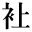
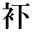

後の業平文治
三遊亭圓朝
鈴木行三校訂編纂
一
えゝ此の度（たび）は誉（ほま）れ高き時事新報社より、何か新作物を口演致すようとの御註文でございますから、嘗（かつ）て師匠の圓朝（えんちょう）が喝采（かっさい）を博しました業平文治（なりひらぶんじ）の後篇を申上げます。圓朝師が在世中、数百の人情噺（にんじょうばなし）を新作いたしました事は皆様が御承知であります。本篇は師が存生中（ぞんしょうちゅう）、筋々（すじ／＼）を私（わたくし）にお話しになりました記憶の儘（まゝ）を申上ぐる次第であります。そも私（わたくし）が師匠の門に入（い）りましたのは御維新前（まえ）で、それから圓橘（えんきつ）となりましたのが明治二年の五月でございます。まだ其の頃は圓朝師も芝居掛り大道具というので、所謂（いわゆる）落語と申しましては一夜限り或（あるい）は二日続きぐらいのもの、其の内で永く続きましたのが新皿屋敷（しんさらやしき）、下谷義賊（したやぎぞく）の隠家（かくれが）、かさねヶ淵（ふち）の三種などでございます。それより素話（すばなし）になりましてからは沢（さわ）の紫（むらさき）（粟田口（あわだぐち））に次（つい）では此の業平文治でございます。その新作の都度（つど）私（わたくし）どもにも多少相談もありましたが、その作意の力には毎度ながら敬服して居ります。師匠は皆様が御存じの通り、業平文治は前篇だけしか世に公（おおやけ）にいたしませぬが、その当時私（わたくし）は後（のち）の文治の筋々を親しく小耳に挟（はさ）んで居りました。即（すなわ）ち本篇が師匠の遺稿にかゝる後の業平文治でございまする。さて師匠存生中府下の各寄席（よせ）で演じ、または雑誌にて御存じの業平文治は、安永の頃下谷（したや）御成街道（おなりかいどう）の角に堀丹波守（ほりたんばのかみ）殿家来、三百八十石浪島文吾（なみしまぶんご）という者の忰（せがれ）でございまして、故（ゆえ）あって父文吾の代より浪人となり、久しく本所（ほんじょ）業平橋（なりひらばし）に住居（すまい）いたして居りましたが、浪人でこそあれ町地面（まちじめん）屋敷等もありまして、相応の暮しをして居りました。で、業平橋に住居して居りました処から業平文治といいますか、乃至（ないし）浪島を誤って業平と申しましたか、但（たゞ）しは男の好（よ）いところから斯（か）く綽名（あだな）いたしたものかは確（しか）と分りませぬ。併（しか）し天性弱きを助け強きを挫（ひし）ぐの資性に富み、善人と見れば身代（しんだい）は申すに及ばず、一命（いちめい）を擲（なげう）ってもこれを助け、また悪人と認むれば聊（いさゝ）か容赦なく飛蒐（とびかゝ）って殴り殺すという七人力（にんりき）の侠客（きょうかく）でございます。平生（へいぜい）荒々しき事ばかり致しますので、母親も見兼て度々（たび／＼）意見を加えましたが、強情なる文治は一向肯入（きゝい）れませぬ。情深（なさけぶか）き母親も終（つい）には呆れ返って、「これほど意見しても肯かぬ気性の其方（そち）、行（ゆ）く／＼は親の首へ縄を掛けるに相違ない、長生（ながいき）して死恥（しにはじ）を掻こうより寧（いっ）そのこと食事を絶って死ぬに越したことはない」と涙を流しての切諫（せっかん）、それを藤原喜代之助（ふじわらきよのすけ）が見兼て母に詫入（わびい）れ、母は手ずから文治の左の腕に母という字を彫付（ほりつ）け、「以来は其の身を母の身体と思って大切にいたせよ」と申付けまして、それからというものは一切表へ出しませぬ。さア今まで表歩きばかりしていた者が、俄（にわか）に家（うち）にばかり居（お）るようになりましたから、少しく身体の具合が悪くなりました。母も心配して、気晴しに参詣（さんけい）でもするが宜（よ）いと云われて、母と同道で本所の五つ目の五百羅漢（らかん）へ参詣の帰り途（みち）、紀伊國屋友之助（きのくにやとものすけ）の大難を見掛け、日頃の気性直（す）ぐに助けようとは思いましたが、母の手前そういう訳にもまいりませぬから、渋々（しぶ／＼）我家（わがや）へ帰り、様子を尋ねますると、友之助という者が大伴蟠龍軒（おおともばんりゅうけん）と賭碁（かけご）を打って負けましたので、女房お村を奪（と）られた上に、百両の証文が三百両になっているという、友之助は斯（か）くと聞いて大いに怒り、大伴に向って悪口（あっこう）いたしましたので、蟠龍軒は友之助を取って押え、高手小手（たかてこて）に縛り上げて割下水（わりげすい）の溝（どぶ）へ打込んだという話を聞き、義憤むら／＼と発して抑え難く、ついに蟠龍軒の道場へ踏込（ふみこ）み、一味加担の奴ばらを打殺し、大伴だけ打漏（うちもら）して、窃（ひそ）かに自宅へ帰ったという処までが、故圓朝師の話でございます。これより私（わたくし）が予（かね）て聞きおぼえたる記憶を喚起（よびおこ）して、後の文治の伝記を伺います。さて其の翌日は安永五年の六月三十日でございます、蟠龍軒の道場にて何者にか数多（あまた）の者が殺されたという届出（とゞけいで）がありますから早速北割下水蟠龍軒の道場へ御検視が御出張になりまして吟味いたしましたが、誰が殺したのか一向分りませぬ。其の頃八丁堀の町与力小林藤十郎（こばやしとうじゅうろう）という人は、「これは多分蟠龍軒のためさん／″＼恥辱を受けた友之助の仕事であろう」と疑いましたが、誰（たれ）あって文治の仕事と心付く者はございませぬ。まして百日あまり外出いたしませず、また近所の者は日頃文治を蔭（かげ）でさえ呼棄てにする者はないくらいな人望家（じんぼうか）、子供に至るまで、業平の旦那、業平の旦那。と敬って居（お）るのでありますから、文治と疑う者のないのも道理でございます。その明（あく）る日、小林藤十郎殿は本所の名主の家（うち）へ出役（しゅつやく）いたし、また其の頃八丁堀にて捕者（とりて）の名人と聞えたる手先二人（ににん）は業平橋の料理屋にまいりました。
二
手先の林藏（りんぞう）と申します者が立花屋（たちばなや）へ参りまして、
林「親方ア宅（うち）かえ」
主「これは親分さん、さアどうぞ此方（こちら）へお上りなさいまし、おい、お火を持って来い」
林「親方、今日来たのは外（ほか）じゃアねえ、少し大切（だいじ）な事があって来たのだから不都合のねえように云ってくんなよ」
主「へえ大切な御用と云うのは何事ですか」
林「奥に友之助が隠れているな」
主「えっ」
林「やい親爺（おやじ）、とぼけるな、それだから予（あらかじ）め不都合のないようにしろと云ったんだ、二三日（ち）前から緑町（みどりちょう）の医者が出入（でいり）をしているが、ありゃア誰が医者にかゝっているのだ」
主「えっ……」
林「この親爺、何処（どこ）までとぼける積りだ、えゝ面倒だ、金藏（きんぞう）踏ん込（ご）め」
金「やい友之助、御用だ」
主「もし／＼親分え、そんな無慈悲な事を為すっちゃア困るじゃアございませんか、友之助は身体中疵（きず）だらけでございますぜ」
林「うむ、少しは疵も付いたろう、自業自得（じごうじとく）だ、誰を怨（うら）むところがあるか、神妙にお縄を頂戴しろえ、これ友之助、大切（たいせつ）な御用だぞ、上（かみ）へお手数（てすう）の掛らねえように有体（ありてい）に申上げろよ」
友之助は何（なん）の為か更に合点（がてん）が行（ゆ）かず、呆気（あっけ）に取られて居りますと、林藏は屹（きっ）と睨（にら）み付けて、
林「やい友之助、貴様は十五日の晩には何処（どこ）にいた」
主人は横合（よこあい）から、
主「親方、大切な御用とは何（ど）ういう筋かは知りませぬが、友さんは十四日の夕景、蟠龍軒一味の者にさん／″＼な目に遇いましてな、可愛相（かわいそう）に身体も自由にならないで、私方（わたくしかた）へ泊りました、で、十五日には外へも出ませず、終日（いちんち）此処（こゝ）にうむ／＼呻（うな）りながら寝て居りました」
林「黙れ、貴様に尋ねるのじゃアねえ、これ友之助、貴様は十四日は割下水の蟠龍軒の屋敷で、少しばかり打擲（ちょうちゃく）されたのを遺恨に思って、十五日の晩に其の仕返しを為（し）ようと云う了簡（りょうけん）で、蟠龍軒の屋敷へ切込（きりこ）んだろうな」
友之助は恟（びっく）り首を擡（もた）げて、
友「なゝなゝ何を云いなさる」
林「いやさ友之助、どうせ天の網を免（のが）れる訳にゃアいかねえ、あの手際（てぎわ）は貴様一人の仕業じゃアあるめえの、相手は何者だ、男らしく有体に申上げた其の上でお慈悲を願うが宜（よ）いぞ、己（おれ）たちも悪くは計らわねえ、ぐず／＼すると却（かえ）って貴様の為にならねえぞ」
友之助は怪訝（けゞん）な面持（おももち）にて、
友「へえ、あの蟠龍軒めが何（ど）うぞしましたか」
林「友、しらばっくれるな、あの時アたしか三人だったなア」
友「あなたの仰しゃることは何が何（なん）だか一向分りませんが」
林「ふむゝ、貴様は往生際（おうじょうぎわ）の悪い奴だな、よし此の上は手前（てめえ）の身体に聞くより外（ほか）はねえ」
主「えゝ親分、一体これは何ういう訳ですか」
林「汝（われ）の知った事じゃアねえや」
主「それでも斯様（こん）な大病人（たいびょうにん）を何うなさる積りで」
林「おい金藏、この親爺も腰縄（こしなわ）にしてくれえ、兎（と）も角（かく）も玄関まで引いて往（い）くから……」
この玄関と申しますのは、其の頃名主の邸（やしき）を通称玄関と申したのでございます。
主「親分、なんで其様（そん）な足腰の立たないものをお縛りなさるのです、私（わたくし）ア名主様へ引かれるような罪を犯した覚えはございません」
林「往（い）く処へ往けば分らア、黙っていろ、金藏、この近所に駕籠屋（かごや）があるだろう、一挺（いっちょう）雇って来い」
やがて友之助と立花屋の主人（あるじ）を召捕（めしと）って相生町（あいおいちょう）の名主方へ引立（ひきた）てゝまいりました。玄関には予（かね）て待受（まちう）けて居りました小林藤十郎、左右に手先を侍（はべ）らせ、友之助を駕籠から引出して敷台に打倒（うちたお）し、
小「京橋銀座三丁目紀伊國屋友之助、業平橋立花屋源太郎（たちばなやげんたろう）、町役人」
一同「はゝア」
小「友之助、其の方は去る十五日の夜（よ）、大伴蟠龍軒の屋敷へ踏込（ふんご）み、家内の者四人、蟠龍軒舎弟（しゃてい）蟠作（ばんさく）を殺害（せつがい）いたしたな、何（なん）らの遺恨あって、何者を語らって左様な無慙（むざん）なる事を致したか、さア後（あと）で不都合のなきよう有体に申立てろ」
立「まア怪（け）しからぬ仰せでございます、余計な事を申すようでございますが、友之助は御覧の通り疵だらけ、十四日夜はさん／″＼打（ぶ）たれて動きが取れませず、私方（わたくしかた）へ泊り込んだのでございます」
小「黙れ」
林「さア友之助、とても免（のが）れるものじゃアない、只今旦那のお尋ねの通り有体に申上げろ」
友之助は暫（しばら）く考えて居りましたが、
友「へえ、大伴の屋敷へ切込みまして、家内四人の者を殺害（せつがい）いたしましたるは全く私（わたくし）に相違ございません、へえ遺恨あって切込みました」
立「これ／＼友さん、血迷っちゃアいかねえ、お前は十四日に……」
林「黙れ、其の方の口を出すべき場合でない、さア友之助、貴様一人の仕業（しわざ）でないと云うことは分って居（お）る、何者を同道してまいったか、一つ白状して後（あと）を隠しては何（なん）にもならんぞ」
友「どの様な御吟味を受けましても、外（ほか）に頼んだ者はございませぬ」
三
林藏は少しく気を焦立（いらだ）ちて、
林「これ汝（われ）がな、私（わたくし）一人の仕事でございますなどとしら［＃「しら」に傍点］を切っても、うむそうかと云って済ますような盲目（めくら）じゃア無（ね）え、よく考えて見ろよ、手前（てめえ）のような痩男（やせおとこ）に、剣術遣（つか）いの屋敷へ踏込（ふんご）み三四人の人殺しが出来る仕事かえ、さアいよ／＼申上げねえか、旦那に申上げて少し叩いて見ようか」
友「何（なん）と云われても私（わたくし）一人の仕業に相違ございません」
立「もし／＼友さん、お前何（ど）うしたんだ、気が違やアしねえか、旦那様え、なか／＼此の人一人でそんな事の出来る訳はございません、全く大疵のために気が違ったに相違ございません…おい友さん、確（しっ）かりしなよ」
林「えゝ黙れ、旦那様、此奴（こいつ）はなか／＼一筋縄じゃア白状しませんぜ、一つ叩きましょうか」
小「まア林藏待て、下手人（げしゅにん）は友之助と決って居（お）るから追って又取調べるであろう、何しろ三四（さんし）の番屋へ送って置け」
この三四の番屋と申しますのは本材木町（ほんざいもくちょう）三四丁目の町番屋にて、この番屋には二階があって常の自身番とは違い、余程厳しく出来て居ります。町番屋とは申しながら重（おも）に公用に使ったものでございます。尚（な）お小林藤十郎殿は林藏に向いまして、
小「これ林藏、立花屋源太郎の縄を解いて家主（いえぬし）へ引渡せ」
林「はゝア、おい差配人（さはいにん）、不都合のないように預かり置け、友之助立てえ」
其の儘（まゝ）駕籠に乗せて本材木町の番屋を指（さ）して出て往（ゆ）きました。お話別れて、此方（こちら）は文治の宅、母は九死一生で、家内の心配一方（ひとかた）ならず、折（おり）から訪れ来（きた）る者があります。
「えゝ頼む」
森松「やアこれは／＼何方（どなた）かと思ったら藤原様、どうも大層お立派で……お萓（かや）様も御一緒ですか宜（よ）うおいでゝございます」
藤「お母様（ふくろさま）は」
森「いやもう、お悪いの何（なん）のじゃアございません、何（ど）うも今の様子じゃおむずかしゅうございますな」
藤「なに、むずかしい、そんなら少しも早く奥へ」
森「どうか此方（こちら）へ……旦那え、藤原様と御新造（ごしんぞ）様がおいでになりました」
文「おゝそうか、さア此方へ、やア何（ど）うも暫く、お萓か、よくおいでだ」
両人「お母様が大層お悪いそうで、さぞ御心配でございましょう」
文「はい／＼有難う、今度は些（ち）とむずかしかろうよ」
藤「それは何（ど）うも、併（しか）し私（わたくし）どもの顔が分りましょうか」
文「いや少しは分りそうだ、兎も角も此方へ……お母様（っかさま）、藤原氏（うじ）がまいりました、お母様、分りましたか、お萓も一緒に……」
藤「伯母様、藤原喜代之助でござる、お萓も一緒に、分りましたか、大層お瘁（やつ）れ……」
と申しますと、病人に通じたものと見えて、「おゝ」と少し起上ろうと致しますから、
藤「どうか其の儘にして」
母「永いことお世話になりました、此の度（たび）はもうこれがお訣（わか）れで、お萓は御存じの通り外（ほか）に身寄もなき不束者（ふつゝかもの）、何（ど）うぞ幾久しゅう、お萓や見棄てられぬように気を付けなよ、それでも文治の嫁が思ったより優しいので、何（ど）の位安心したか知れません、もう是で思い残すことはありません」
此の時台所の方に当って頻（しき）りに水を汲んでは浴（あび）せる音が聞えまする何事か知らぬと一同耳をそばだてますると、
「南無大聖不動明（なむだいしょうふどうみょう）……のうまく……む……だあ……」
文治はそれと心付きまして、手燭（てしょく）を持って台所の戸を明けますと、表は霙（みぞれ）まじりに降（ふり）しきる寒風に手燭は消えて真黒闇（まっくらやみ）。
文「誰だえ」
一向答えがありませぬ。一生懸命ざあ／＼と寒水を浴びては「南無大聖不……」
文「おい、誰か提灯（ちょうちん）を持って来てくれ」
藤原が提灯を持ちまして袖（そで）に隠し、燈火の隙間（すきま）から井戸端（いどばた）を見ますると、お浪（なみ）が単物（ひとえもの）一枚に襷（たすき）を掛け、どんどん水を汲（くん）では夫國藏（くにぞう）に浴せて居ります。國藏は一心不乱に眼（まなこ）を閉じ合掌して、
「南無大聖不動尊、今一度お母上様（はゝうえさま）の御病気をお助け下さりませ」
文「これ其処（そこ）に居（お）るのはお浪じゃないか、國藏待て、その親切は千万（せんばん）辱（かたじ）けないが、まア／＼此処（こゝ）へ来い、お浪や早く國藏に着物を着せてやれ、森松、國藏夫婦は何時（いつ）の間（ま）に来たのだ」
森「へえ、藤原様のおいでの少し前、いつもは蔵前の不動様へまいるんですが、今夜は御門が締りましたそうで」
文「うむ、毎夜此の通りか、寒中といい況（ま）して今夜は此の大雨に……國藏、お前の親切は千万辱けないがな、命数は人の持って生れたものじゃ、寿命ばかりは神にも仏にも自由になるものじゃアない、神様や仏様は人の苦しむのを見て悦びなさる筈（はず）はないが、人が物を頼むにも無理力（むりぢから）を入れて頼んだからって肯（き）くものではない、お前も同じ人に生れていながら、この寒空（さむぞら）に垢離（こり）など取って、万一身体に障（さわ）ったら、それこそ此の上もない不孝じゃないか、お前の親切は届いて居（お）る、もう／＼止してくれよ」
四
文治は國藏夫婦の水垢離（みずごり）を諫（いさ）めて居りますると、妻のお町が泣声にて、
町「旦那様ア、お早く／＼」
文「なに、お母様（っかさま）が息を…」
と病間に駈戻り、
文「お母様、お母様、ほい、もういかんか」
町「お母様ア、お母様ア」
文「これ／＼お町、そう泣悲（なきかなし）んでも仕方がない、もう諦めろ」
萓「伯母様（おばさま）え、伯母様え、もう是がお別れか、伯母様え」
藤「お萓、そう呼ぶものではない、文治殿、さぞ／＼御愁傷（ごしゅうしょう）でござりましょう」
文「いや永い御苦労を掛けました、あゝ何（ど）うも、思えば私（わたくし）も不孝を尽しましたなア」
お町を始め一同顔を揃（そろ）えて言葉もなく、鼻詰らして俯向（うつむ）く折から、表の方（かた）で慌（あわた）だしく、
「森松々々」
森「おうい、豊島町（としまちょう）の棟梁（とうりょう）か」
これは亥太郎（いたろう）という豊島町の棟梁でございます。
亥「おゝ亥太郎だ」
森松が立って戸を明けますると亥太郎は息急（いきせ）きながら、
亥「森松、お母様（ふくろさま）は」
森「たった今……」
亥「えッ、亡（なくな）りなすったか、道理で新しい草鞋（わらじ）が切れて変だと思った、えゝ間に合わなかったな」
森「昨日（きのう）からむずかしいから、お前さんの所へ知らせに往（い）くとな、今朝早く成田へ立ったと云うことだから、こいつア必定（てっきり）お百度だろうと後（あと）から往こうか知らんと思ったが、家（うち）が無人（ぶにん）で困っているのに何（なん）ぼ信心だからと云って、出先から成田へ往ったら又旦那に叱られるだろうと、こう思って止したのが結句幸いであった、今も國藏兄（あにい）が成田様の一件で小言まじりに一本やられたところだ」
亥「己（おら）アな、昨夜（ゆうべ）の内にお百度を済まして、何（ど）うやら気が急（せ）かれるから、今朝早立（はやだち）にして、十八里の道を急ぎ急いでもう些（ちっ）と早くと思ったが、生憎（あいにく）の大雨で道も捗取（はかど）らず、到頭（とうとう）夜半（よなか）になっちまった、あゝ何うも胸がドキ／＼して気が落着かねえ、水を一杯（いっぺえ）くれねえか」
森「おゝ気の付かねえ事をした」
文「やア亥太郎殿か、成田へお出で下すったそうで、母のために毎（いつ）も変らぬ御親切、千万辱けのう存じます、母も只（たっ）た今往生いたしました、さア何（ど）うか直（す）ぐに奥へ往って見てやって下さい」
亥「えゝ皆様御免なせえ、えゝお母様（ふくろさま）、なぜ私（わっち）が……旦那御免なせえよ、こんな時にゃア何（なん）と挨拶（あいさつ）して宜（い）いのか私にゃア分んねえ」
藤「これは亥太郎殿、藤原喜代之助でござる、あなたの御親切で伯母も誠に宜（よ）い往生を致しました、人の寿命ばかりは何（なん）とも致し方がありません」
亥「旦那御免なせえ、私（わっち）やア物心をおぼえて此の方（かた）、涙というものア流したことが無（ね）えんですが、いつぞや親子てえものは斯（こ）う／＼いうもんだと、此方（こちら）の旦那に意見されてから、此の間親父の死んだ時にゃア思わず泣きました、今日で二度目でござんす、御免ねえ」
とわッ／＼と泣出しました。時に文治は、
文「いつも変らぬ御親切、有難う存じます、さぞお腹（なか）が減りましたろう」
亥「なアに、さしたる事もありません」
文「お昼食（ちゅうじき）は何方（どちら）でやって来なすったね」
亥「なアに昼食なんざア、実は十八里おっ通しで」
文「やッ、それは／＼昼食も喰（た）べずに十八里日着（ひづき）とは、何（ど）うも恐入りましたなア」
亥「云われて始めて腹が減った、そんなら森松、握飯（むすび）でも呉れや」
森「さア大変だ、昼間からの騒ぎで飯を炊くのを忘れたア」
町「いゝえ、私が炊いて置きましたよ、さア亥太郎さん召上れ」
亥「こりゃア勿体（もったい）ねえな、やい森公、貴様は相変らず馬鹿だな」
森「こりゃア己の十七番だ」
亥「それも違ってらア、馬鹿野郎」
それから手を分けて仏の取片付（とりかたづけ）をいたしまして、葬式はいよ／＼明後日と取極めました。藤原喜代之助は明日御登城のお供がありますから、夜（よ）の中（うち）に屋敷へ帰りまして、翌朝重役へ、
藤「明日お供を致します筈でござりますが、親戚（しんせき）に忌中これあり、如何（いかゞ）致しましょうや」
と伺い出でますると、何（ど）ういう都合でござりますか、藤原は明後日葬式を菩提寺（ぼだいじ）まで見送ることが出来ませんので、その翌晩通夜（つや）をいたし、翌早朝葬式を途中まで見送って、自分は西丸下へ帰り、お葬式（とむらい）は愛宕下（あたごした）青松寺（せいしょうじ）で営みまして、やがて式も済みましたから、文治は
※※（かみしも）
のまゝ愛宕下を出まして、亥太郎、國藏、森松の三人を伴い、其の他の見送り人は散り／″＼に立帰りました。丁度江戸橋へ掛ってまいりますと、朝の巳刻（よつ）頃でございますが、向うから友之助が余程の重罪を犯したものと見えて、引廻しになってまいります様子、これは友之助の罪状が定（きま）って、小伝馬町（こでんまちょう）の牢屋の裏門を立出（たちい）で、大門通（おおもんどおり）から江戸橋へ掛ってまいりましたので、角の町番屋にて小休みの後（のち）、仕置場へ送られるのでございます。
五
文治が先に立って江戸橋へ向って参りますと、真先（まっさき）に紙幟（かみのぼり）を立て、続いて捨札（すてふだ）を持ってまいりますのは、云わずと知れた大罪人をお仕置場へ送るのでございます。文治は何気なく正面から罪人を見ますと、紛（まご）う方（かた）なき友之助ですから、はて不思議と捨札を見ると、「京橋銀座三丁目当時無宿友之助二十三歳」と記してありまして、「右の者去（さ）んぬる六月十五日本所北割下水大伴蟠龍軒方へ忍び込み、同人舎弟を始め外（ほか）四人の者を殺害（せつがい）致し候者也（そうろうものなり）」と読むより、左（さ）なきだに義気に富みたる文治、血相を変えて引廻しの馬の前に寄付（よりつ）き、罪人の顔を見ますと、今度は俯向（うつむ）いていまして少しも顔が見えませんけれども、友之助に相違ありませんから、文治は
麻※※（あさがみしも）
長大小（ながだいしょう）のまゝ馬の轡（くつわ）に飛付く体（てい）を見るより附添（つきそい）の非人（ひにん）ども、
「やい／＼何を為（し）やがる、御用だ／＼」
亥「やい乞食（こじき）めら、静かにしろえ」
非「やア豊島町のがむしゃら［＃「がむしゃら」に傍点］だぜ」
と怯（ひる）んで居りますところへ、与力が馬上にて乗付けまして、
与「これ／＼其の方（ほう）は何をするのか、御用だ、控えろ」
と制する言葉に勢（いきおい）を得て、非人どもが文治を突退（つきの）けようと致しますると、國藏、森松の両人が向う鉢巻、片肌脱（かたはだぬ）ぎ、
両人「この乞食め、何を小癪（こしゃく）なことを為（し）やがる、ふざけた事をすると片ッ端（ぱし）から打殺（ぶちころ）すぞ」
さア江戸橋魚市（うおいち）の込合（こみあい）の真最中（まっさいちゅう）、まして物見高いのは江戸の習い、引廻しの見物山の如き中に裃（かみしも）着けたる立派な侍が、馬の轡に左手（ゆんで）を掛け、刀の柄（つか）へ右手（めて）を掛けて、
文「さア一歩も動かすことは成らぬ、無法かは知らぬが、此の友之助は決して罪人ではない、その罪人は此の文治だア」
与「これ／＼何（なん）であろうと此の通り当人が白状の上、罪の次第が極（きま）ったのじゃ、今となっては致し方がないわ、其処（そこ）退（の）けッ」
文「いかさま無法ではござるが、狂人ではござらぬ、一寸（ちょっと）も放すことは出来ませぬ」
と七人力の文治が引留めたのでございますから、如何（いかん）とも致し方がございませぬ。馬上なる友之助は何事か夢中で居りましたが、暫くして漸（ようや）く我に返りまして、
友「えゝ旦那様でござりますか、お久しくござります」
文「友之助、よく生きていてくれたなア、貴様が此の様な目に逢うとは夢にも知らなんだ、さぞ難儀したろうな、此の文治は自分の罪を人に塗付け、のめ／＼生きて居（お）るような者ではないぞよ、目指す相手の蟠龍軒を討洩らし、心当りを捜す内、母の大病に心を引かれ、今日（きょう）まで惜（おし）からぬ命を存（なが）らえていたが、もうお母様（っかさま）を見送ったからにゃア後（あと）に少しも思い残すことはない、此の上は罪に罪を重ねても貴様を助けにゃア己（おれ）の義理が立たない、さアお役人衆（やくにんしゅ）、お手数（てかず）ながら此の文治に縄を打って、友之助と共に奉行所へお引立て下せえ、それとも乱暴者と見做（みな）し此の場に切捨てるというお覚悟なら、遺憾ながら腕の続く限り根（こん）限りお相手致します、如何（いか）に御処分下さるか」
と詰寄せまする。橋の上から四辺（あたり）は一面の人立（ひとだち）で、往来が止ってしまいました。
甲「こゝは往来だ、何を立っていやがるのだえ、さア／＼歩け歩け」
時に亥太郎國藏の両人口を揃えて、
「静かにしろ、ぐず／＼すると打殺（ぶちころ）すぞ」
野次馬「やア豊島町の乱暴棟梁だ、久しく見掛けなかったが、また始めたぞ」
流石（さすが）の与力も文治と聞いて怖気付（おじけつ）き、一先（ひとま）ず文治と友之助の両人を江戸橋の番屋へ締込みましたが、弥次馬連は黒山のようでございます。表に居りました亥太郎、森松、國藏は躍起（やっき）となって、
「此奴（こいつ）ら何が面白くって見に来やがった、片ッ端から将棋倒しにしてしまうぞ」
と有合（ありあわ）せたる六尺棒をぐん／＼と押振廻（おっぷりまわ）して居ります。飯の上の蠅（はい）同然、蜘蛛（くも）の子を散らしたように逃げたかと思うと、また集ってまいります。其の中（うち）に与力の家来は斯（か）くと八丁堀へ知らせ、また一方は奉行所へ訴えますと、諸役人も驚いて早速駈付けました。時に表に居りました亥太郎、國藏、森松の三人は自身番へ這入りまして、
亥「えゝお役人様、蟠龍軒の屋敷へ踏込（ふんご）んで四五人の者を殺したのは私（わっち）です、何（ど）うぞ私を縛っておくんなせえ」
森「亥太郎兄（あにい）か、そんな事を云っちゃア困るじゃねえか、お役人様、そりゃア私（わっち）の仕業で」
國「馬鹿をいうな、お前（めえ）たちは此の騒ぎで血迷うたか、己がやッつけたんだ」
文「一同静かにしろ、兎も角も御用の馬を引留めました乱暴者は私（わたくし）でござります、お手数（てかず）ながらお引立（ひきたて）の上、その次第を御吟味下さいまし」
出張の役人は文治を駕籠に乗せ、外（ほか）一同は腰縄にて、町奉行石川土佐守（いしかわとさのかみ）役宅へ引立て、其の夜（よ）は一同仮牢（かりろう）に止（とゞ）め、翌日一人々々に呼出して吟味いたしますると、何（いず）れも私（わたくし）が下手人でござる、いや私（わたくし）が殺したのでござると強情を云いますので、誰が殺したのかさっぱり分らぬように成りました。取敢（とりあ）えず文治には乱暴者として揚屋入（あがりやいり）を仰付（おおせつ）け、其の他（た）の者は当分仮牢留置（とめおき）を申付けられました。
六
さて明治のお方様は、昔の裁判所の模様は御存じありますまいが、今の呉服橋内（うち）にありまして、表から見ますと只の屋敷と少しも変った処はありませぬ。只だ窓々に鉄網（かなあみ）が張ってあるだけの事、また屋敷の向う側の土手に添うて折曲（おりまが）った腰掛がありまして、丁度白洲（しらす）の模様は今の芝居のよう、奉行の後（うしろ）には襖（ふすま）でなく障子が箝（はま）っていまして、今の揚弓場（ようきゅうば）のように、横に細く透いている所があります。これは後（うしろ）から奥の女中方が覗（のぞ）く処だと申しますが、如何（いかゞ）でございましょうか。白洲には砂利が敷いてあって、其の上は廂（ひさし）を以（もっ）て蔽（おお）い、真中（まんなか）は屋根無しでございます。正面に蓆（むしろ）の敷いてある処は家主（いえぬし）、組合、名主其の外（ほか）引合（ひきあい）の者が坐（すわ）る処でございます。文治は今日お呼出しになりまして、奉行石川土佐守御自身の御吟味、やがてシッ／＼という警蹕（けいひつ）の声が聞えますと、正面に石川土佐守肩衣（かたぎぬ）を着けて御出座、その後（うしろ）にお刀を捧（さゝ）げて居りますのはお小姓でございます。少しく下（さが）って公用人が麻裃で控えて居ります。奉行の前なる畳の上に控えて居りますのは目安方（めやすかた）の役人でありまして、武士は其の下の敷台の上に麻裃大小なしで坐るのが其の頃の扱いでございます。一座定まって目安方が名前を読上げますと、奉行もまた其の通り、
奉「本所業平橋当時浪人浪島文治郎、神田豊島町惣兵衞店（そうべえたな）亥太郎、本所松倉町源六店（げんろくたな）國藏、浪人浪島方同居森松、並（ならび）に町役人、組合名主ども」
と、一々呼立てゝ後（のち）、
奉「浪島文治郎、其の方儀去（さん）ぬる十二月二十一日、江戸橋に於て罪人友之助引廻しの際、一行を差止め、我こそ罪人なりと名告（なの）り出（い）で候う由なるが、全く其の方は数人の人殺しを致しながら、今日（きょう）まで隠れいるとは卑怯（ひきょう）な奴じゃぞ、併（しか）し上（かみ）に於ては吟味の末、友之助が自身白状致したに依って、仕置を申付けた次第であるぞ、上の裁判に一点の曇りは無いわ、何故（なぜ）今日となって左様な事を申出（もうしい）でたか、徒（いたず）らに上を弄（もてあそ）ぶに於ては其の分（ぶん）には捨置かんぞ」
文「恐れながら文治申上げます、不肖なれども理非の弁（わきま）えはございます、お上様（かみさま）を弄ぶなどとは以（もっ）ての外（ほか）の仰せでございます、かく申す文治、捨置きがたい仔細あって蟠龍軒を殺害（せつがい）いたすの覚悟にて、同人屋敷へ踏込（ふみこ）み候ところ、折悪（おりあ）しく同人を討洩らし、如何（いか）にも心外に存じ候ゆえ、一時其の場を遁（のが）れ、たとい何処（いずく）の果（はて）に潜むとも、汝（おのれ）生かして置くべきや、無念を霽（は）らして後（のち）訴え出でようと思い居ります内、母の大病、めゝしくも一日々々と看病に其の日を送り、命数尽きて母は歿（みまか）りましたゆえ、今日（こんにち）母の葬式を済まし、一七日（ひとなのか）経ちたる上は卑怯未練なる彼（か）の蟠龍軒を捜し出して、只一打（ひとうち）と思い詰めたる時こそあれ、どういう了簡で濡衣（ぬれぎぬ）を着たかは存じませぬが、江戸橋にて友之助の引廻し捨札を見れば、斯（こ）う／＼云々（うんぬん）、よしや目指す敵は討ち得ずとも、我に代って死罪の言渡しを受けたる友之助を助けずば、武士の一分（いちぶん）相立ち申さず、お上へ対し恐多（おそれおお）い事とは存じながら、かく狼藉（ろうぜき）いたし候段、重々恐入り奉（たてまつ）ります、此の上は無実の罪に伏（ふく）したる友之助をお助け下され、文治に重罪を仰付（おおせつ）け下さいますよう願い奉ります」
奉「フウム、然（しか）らば其の方が……」
時に横合（よこあい）より亥太郎「恐れながら申上げます」
役人「控えろ」
亥「えゝ、こりゃア私（わっち）の……」
役「黙れ」
亥「控えろたって残らず私の仕業で」
役「控えろと申すに何を寝言を申す」
亥「だって皆（みん）な己が為（し）たんでえ、お奉行様、この亥太郎を御処分下せえ」
國「恐れながら國藏申上げます、その六月十五日夜は私（わし）が切込みまして殺したのでござんす、何（ど）うぞお仕置き下さいますよう」
森「兄イ、何を云うんだ、蟠龍軒の家（うち）へ切込んだのは誰でもねえ、この森松がやッつけたんで」
亥「やい、森松、國藏、何を云やがる、お奉行様、此奴（こいつ）らア気が違ったんです、私に相違ございません」
役「其の方ども控えろ控えろ」
つくばいの同心は赤房（あかぶさ）の十手（じゅって）を持って皆々の肩を突きましたが一向に聞入れませぬ。お取上げがないので三人とも立上って頻（しき）りに罪を背負（しょ）おうと焦（あせ）って居ります。時に文治が、「これ一同静かにしろ」と睨（にら）み付けられてピタリと止って、平蜘蛛（ひらぐも）のようになって居ります。
文「恐れながら文治申上げます、此の者どもが御場所柄をも弁（わきま）えず大声（おおごえ）に罪を争います為態（ていたらく）、見るに忍びず、かく申す文治までがお奉行職の御面前にて高声（こうせい）を発したる段重々恐れ入ります、尚（な）お此の上一言（いちごん）申し聞けとう存じます故、御免を願い奉ります」
奉「ウム」
文「これ一同よく承まわれ一人（いちにん）ならず三四人を一時（いちじ）に殺すというは剣法の極意（ごくい）を心得て居らんければ出来ぬことじゃぞ、技倆（わざ）ばかりではなく、工夫もせねばならぬ、まして夏の夜（よ）の開放（あけはな）し、寝たというでもなし、さア貴様たちは何（ど）うして切込んだか、その申し口によっては御検視に御吟味をお願い申そうが、何うじゃ」
森「何うでも斯（こ）うでも其の時ア夢中でやッつけた」
と臆面（おくめん）もなく自分の身に罪を引受けようと云う志は殊勝（しゅしょう）なものでございます。
七
文治は少しく声を荒（あら）らげ、
文「これ森松、夢中で人が殺せるか、貴様の親切は辱（かたじ）けないが、人に罪を背負（しょ）うて貰（もろ）うては此の文治の義理が立たない、控えてくれ、お役人様、恐れながら申上げます、全く此の文治の仕業に相違ございませぬ、お疑いが有りますなら誰（たれ）と誰を切りましたのか、一々御吟味の程を願い奉ります」
奉「亥太郎、森松、國藏、其の方どもが上（かみ）を偽る段不届であるぞ、五十日間手錠組合預（あずけ）を申付ける、文治郎其の方ことは吟味中揚屋入（あがりやいり）を申付ける」
左右に居ります縄取（なわとり）の同心が右三人へ早縄を打ち、役所まで連れ行（ゆ）きまして、一先（ひとま）ず縄を取り、手錠を箝（は）め、附添（つきそい）の家主（やぬし）五人組へ引渡しました。手錠と申しますと始終箝めて居（お）るように思召（おぼしめ）す方もあるか知れませぬが、そうではございませぬ。錠の封印へ紙を捲（ま）き、手に油を塗ってこれを外（はず）し、只吟味に出ます時分又自分で箝めてまいりますだけの事でございます。こゝに松平右京殿、御下城の折柄（おりから）駕籠訴（かごそ）を致した者があります。これは御登城の節よりかお退（さが）りを待って訴える方が手続が宜しいからであります。お駕籠先の左右に立ちましたのはお簾先（すだれさき）と申します御家来、または駕籠の両側に附添うて居りますがお駕籠脇（かごわき）、その後（あと）がお刀番でございます、これは殿中（でんちゅう）には御老中と雖（いえど）もお刀を佩（さ）すことは出来ませぬ、只脇差ばかりでございます。それ故お刀番がお玄関口にてお刀を預り、御退出の折に又これを差上げます為にまいりますので、事によるとお増供（ましども）と申して一二人余計連れてまいる事もございます。其の昔、駕籠訴をいたします者は何（いず）れも身軽に出立（いでた）ちまして、お駕籠脇の隙（すき）を窺（うかゞ）い、右の手に願書を捧げ、左手（ゆんで）でお駕籠に縋（すが）るのでございますから、時に依ると簾を突破（つきやぶ）ることがございます。大概お簾先が取押えて、押えの者を呼んで引渡してしまいますが、屋敷へ帰りましてから其の書面は封の儘に焼棄（やきす）て、当人は町人百姓なれば町奉行へ引渡すのでありますが、実は願書は中を入替えて焼棄るのでございますから、御老中へ駕籠訴をするのが一番利目（きゝめ）があったそうでございます。右京殿が御下城の折に駕籠訴を致しましたのは、料理店立花屋源太郎でございます。さて源太郎は隙を覘（うかゞ）って右手（めて）に願書を捧げ、
源「お願いでござい、お願いでござい」
と呼（よば）わりながらお駕籠の簾に飛付きました。
供「それ乱心者が、願いの筋あらば順序を経て来い」
と寄ってたかって源太郎を取押え、押えの侍に引渡してしまいました。右京殿は御帰邸の後（のち）、内々（ない／＼）その願書を御覧になりまして、
右京「これ、喜代之助を呼べ」
近習「はゝア、喜代之助殿、御前のお召（めし）でござる」
喜「はゝア」
右「喜代之助、近（ちこ）う進め」
喜「はゝア」
右京殿は四辺（あたり）を見廻し、近習（きんじゅ）に向い、
右「暫く遠慮いたせ」
お人払いの上、喜代之助にお向いなされ、
右「喜代之助、そちを呼んだのは別儀ではないが、今日予が下城の節、駕籠訴いたした者がある、それは本所業平橋の料理屋立花屋源太郎と申す者であるが、そちは浪人中業平橋辺に居ったそうじゃのうあの辺の事はよう存じて居ろう、いつぞや閑（ひま）の折に文治という当世に珍らしい侠客があると云ったのう、その文治と申す者は一体何（ど）ういう人間か」
喜「申上げます、彼は母の命の親とも申すべきもので、近年稀（まれ）な侠客でござります」
右「フーム、侠客か、一体文治の平生（へいぜい）の行状は何（ど）んなものじゃ」
喜「御意にございます、先ず本所にて面前にては申すに及ばず、蔭にても文治と呼棄（よびずて）にする者は一人（いちにん）もござりませぬ、皆文治様々々々と敬（うやも）うて居ります、これにて文治の人となりを御推察を願います」
右「して、そちの母の命の恩人と申すは」
喜「左様でござります、手前が浪人中、別に一文の貯（たくわ）えあるでは無し、朝から晩まで内職をして其の日／＼の煙を立てゝ居りました、それが為に手前は始終不在勝でございまして、家内の事は一切女房に任せて置きましたのが手前の生涯の過失（あやまち）でございます、女房のお淺と申します者が、手前の居ります時はちやほや母に世辞をつかいます故、左程邪慳（じゃけん）な女とも思いませなんだが、不在を幸いに只（たっ）た一人（いちにん）の老母に少しも食事を与えませず、ついには母を乾殺（ほしころ）そうという悪心を起して、三日半程湯茶さえ与えず、母を苦しめました」
右「フーム、世には恐ろしい奴もあるものじゃの、そちは何か、内職から帰ってそれを知らなかったのか」
喜「何（なん）とも恐入った次第でございますが、母は当年七十四歳、手前などと違い余程覚悟の宜（よ）い母でございまして、食を絶って死のうという覚悟と見えまして、只病気とのみ申し打臥（うちふ）したまゝ一言（いちごん）も女房の邪慳なことを口外致しませぬ故、一向心付かんで居りました」
右「そちも不覚であったの、それから何（ど）う致した」
と膝を突付（つきつ）け、耳を欹（そばだ）てゝ居ります。
八
喜代之助は其の当時の事を想い起したものと見えまして、口惜（くや）し涙に暮れながら、
喜「悪事というものは隠す事の出来ぬものと見えます、母は手前にさえ一言も話さぬ位ですから勿論（もちろん）隣家の者などに話す気遣いはございませぬが、何時（いつ）しか隣家の者が聞付けて、お淺さんも邪慳な事をなさる人だ、あのような辛抱強い年寄を、何が憎くって乾殺そうという了簡になったのだろう、お気の毒な事だ。と云ってお淺の不在を窺（うかゞ）い、親切にも粥（かゆ）か何かを持参致しました所へ、生憎（あいにく）お淺が帰ってまいりまして、烈火の如く憤（いきどお）り、いきなり其の食器を取って母の眉間（みけん）に打付け、傷を負わせました、其の時文治殿は何処（どこ）で聞付けましたか其の場に駈付けてまいりまして、義理ある親を乾殺そうとは人間業でない、此の様な者を生かして置いては此の上どんな邪慳な事を仕出来（しでか）すかも知れぬと云って、お淺を取って押えて口を引っ裂き……いや私（わたくし）が其処（そこ）へ帰ってまいって手討にいたしました」
右「ふうむ、文治が其の毒婦を殺したのか」
喜「いゝえ私が……」
右「おゝ其方（そち）か、それは何方（どちら）でも宜（よ）い、文治という奴は余程義侠の心に富んだ奴と見えるな、定めし剣術の心得もあろうな」
喜「はい、真影流（しんかげりゅう）の奥許（おくゆる）しを得て居りまして、なか／＼の腕利（うできゝ）でございます」
右「天晴（あっぱれ）な腕前じゃの、それで七人力あるのか」
喜「御意にございます」
右「以前（もと）は堀家の浪人と申すが左様であるか」
喜「御意にございます」
右「よし／＼、それで文治の素性（すじょう）並びに日頃の行状は能く相分った、少し思う仔細があるから、内々（ない／＼）にて蟠龍軒と申す者の素性及び行状を吟味いたすよう取計らえ」
喜「畏（かしこ）まりました」
それから段々蟠龍軒の身の上を取調べますると、法外な悪党という事が分りましたので、事細かに右京殿へ言上（ごんじょう）いたしました。それと同時に此方（こなた）は文治の身の上、石川土佐守殿は再応文治をお取調べの上、口証爪印（こうしょうつめいん）も相済みまして、いよ／＼切腹を仰せ渡されました。併（しか）し其の申渡し書には御老中お月番（つきばん）の御印形が据（すわ）らなければ、切腹させる訳にはまいりませぬ。町奉行石川土佐守殿は文治の口供（こうきょう）ばかりではございませぬ、幾枚も一度に持参いたしますると、正面に松平右京殿その外（ほか）公用人御着席、それより余程下（さが）って町奉行が組下（くみした）与力を従え、その口証を一々読上げて、公用人の手許（てもと）迄差出します。御老中はお手ずから印形の紐（ひも）を解くのが例でございます。其の紐の長さは一丈余もありまして、紐の先を御老中が持って居りますと、公用人が静かに印形を取出して奉行に渡し、奉行がこれを請取（うけと）って捺（お）すという掟（おきて）ですから中々暇が取れます。其の内にお退（ひけ）の時計が鳴りますと、直ぐ印形の紐を引きますから、捺しかけても後（あと）は次のお月番へ廻さなければなりませぬ。それが為に命の助かった例（ためし）もございます。だん／＼捺してまいりまして愈々（いよ／＼）文治の口供に移りますと、まだ公用人が手を掛けませぬ内に御老中が頻（しき）りに紐を引きますので、奉行は捺すことが出来ませぬ。再びお印形をと心の中（うち）に促しながら公用人の顔を見ますと、公用人も不思議に思いまして御老中のお顔を見上げました。けれどもお駕籠訴の一件がありますから、右京殿は不興気（ふきょうげ）に顔を反（そむ）けて居りますので、何が何（なん）だか一向訳が分りませぬ。暫く無言で睨（にら）み合って居ります内に、ちん／＼とお退のお時計が鳴りました。右京殿は待っていたと云わぬばかりのお顔にて印形を手許に引寄せ、其の儘すっとお立ちに相成り、続いてお附添一同もお立ちになりました。余儀なく奉行も渋々立帰りましたが、何故（なにゆえ）に御老中が斯様（かよう）な計らいをするのか一向分りませぬ。何か仔細ある事と土佐守殿も智者（ちしゃ）でございますから、其の後（ご）外（ほか）御老中のお月番の時は、文治の口供を持ってまいるのを見合せまして、又々右京殿お月番の時に、前の如く文治の口供を持参いたしますると、矢張前の通り手間取って居りますので、到頭（とうとう）印形を捺すことが出来ませぬ。はて不思議な事と処分に困って居りますと、時のお月番右京殿より、「浪島文治郎事（こと）業平文治儀は尚（な）お篤（とく）と取調ぶる仔細あり、評定所（ひょうじょうしょ）に於（おい）て再吟味仰付（おおせつ）くる」という御沙汰になりました。この評定所と申しますのは、竜（たつ）の口の壕（ほり）に沿うて海鼠壁（なまこかべ）になって居（お）る処でございますが、普通のお屋敷と格別の違いはありませぬ。これは天下の評定所でございますから、御老中は勿論将軍家も年に二度ぐらいはお成（なり）になるという定例（じょうれい）でございます、即（すなわ）ち正面の高座敷（たかざしき）が将軍家の御座所でございまして、御老中、若年寄（わかどしより）、寺社奉行、大目附（おおめつけ）、御勘定（ごかんじょう）奉行、郡（こおり）奉行、御代官並びに手代（てだい）其の外与力に至るまで、それ／″＼席を設けてあります。業平文治が数人の者を殺しながら、評定所に於て再吟味になると云うのは全く義侠の徳でございます。
九
月番御老中を始め諸役人一同列座の上、町奉行石川土佐守殿がお係でございまして、文治を評定所へ呼込めという。
同心「当時浪人浪島文治郎、這入りましょう」
と白洲の戸を明けて、当人の這入るを合図に又大きな錠を卸（おろ）しました。文治は砂上に畏（かしこ）まって居りますと、町奉行は少し進み出でまして、
奉「本所業平橋当時浪人浪島文治郎、去（さん）ぬる六月十五日の夜同所北割下水大伴蟠龍軒の屋敷へ忍び込み、同人舎弟なる蟠作並びに門弟安兵衞（やすべえ）、友之助妻村（むら）、同人母崎（さき）を殺害（せつがい）いたし、今日（こんにち）まで隠れ居りしところ、友之助が引廻しの節、自分の罪を人に嫁（か）するに忍びず、引廻しの馬を止め、蟠龍軒の屋敷に於て数人の家人を殺害いたしたるは全く自分の仕業なりと、自訴に及びたる次第は前回の吟味によって明白であるが確（しか）と左様か」
文「恐れながら申上げます、再応自白いたしましたる通り全く文治の仕業に相違ございませぬ」
奉「うむ、何（なん）らの遺恨あって切殺したか其の仔細を申立てえ」
文「申上げ奉ります、大伴蟠龍軒なる者が舎弟蟠作と申し合せ、出入（でいり）町人友之助を語らい、百金の賭碁を打ち候由、然（しか）るに其の勝負は予（かね）て阿部忠五郎と申す碁打と共謀して企（たく）みたる碁でございますから、友之助は忽（たちま）ち失敗いたしました、然（しか）し百両というは大金、即座に調達（ちょうだつ）も出来兼（できかね）ます処から、予ての約束通り百両の金の抵当（かた）に一時女房お村を預けて置きました、それから漸（ようや）く百両の金を算段して持参いたし、女房と証文を返してくれと申入れました処、その証文面（めん）の百という字の上に三の字を加筆いたし、いや百両ではない、三百両だ、もう二百両持って来なければ女房を返す訳には行（ゆ）かぬと云って、只百両の金を捲上（まきあ）げてしまいました、余りの事に友之助が騙（かた）りめ泥坊めと大声を放って罵（のゝし）りますと、門弟どもが一同取ってかゝり、友之助を捕縛（ほばく）して表へ引出し、さん／″＼打擲（ちょうちゃく）した揚句（あげく）の果（はて）、割下水の大溝（おおどぶ）へ打込（うちこ）み、木刀を以（も）って打つやら突くやら無慙至極（むざんしごく）な扱い、その折柄（おりから）何十人という多くの人立でございましたが、只気の毒だ、可愛相だというばかりで、もとより蟠龍軒の悪人なことは界隈（かいわい）で誰（たれ）知らぬ者もございませぬ故、係り合って後難（こうなん）を招いてはと皆逡巡（しりごみ）して誰（たれ）一人（いちにん）止める者もございませぬ、ところへ丁度私（わたくし）が通りかゝりましたから、直ぐさま飛懸って止めようかとは存じましたが。予て左様な処へ口出しは一切いたしませぬと誓いました母と同道のこと故、急立（せきた）つ胸を押鎮（おししず）め、急ぎ宅へ帰って宅の者を見届に遣（つか）わしましたる所、以前に弥（いや）増す友之助の大難、最早棄置（すてお）き難しと心得、早速蟠龍軒の屋敷へ駈付け、只管（ひたすら）詫入り、せめて金だけ返してやってくれと申入れましたる所、私に対して聞くに忍びぬ悪口雑言（あっこうぞうごん）、其の上門弟ども一同寄って群（たか）って手当り次第に打擲いたし、今でも此の通り痕（あと）がございますが、眉間（みけん）に打疵（うちきず）を受けました、其の時私は蟠龍軒を始め一同の者を打果（うちはた）そうかとは思いましたが、予て母の意見もあります事ゆえ、無念を忍んで其の儘帰宅いたしました、然（しか）る処母が私の眉間の疵を見まして、日頃其方（そち）の身体は母の身体同様に思えと、二の腕に母という字を入墨（いれずみ）して、あれ程戒めたのに、何故（なぜ）眉間に疵を負うて来たかと問詰められて一言（いちごん）の申訳もございませぬ、母の身体同様の此の身に疵を付けては第一母に対して申訳なく、二つには彼（あ）のような悪漢を生け置く時は、此の後（のち）どのようなる悪事を仕出来（しでか）すかも知れぬ、さぞ町人方が難渋するであろうと思いますと、矢も楯（たて）も堪（たま）らず、彼等の命を絶って世間の難儀を救うに若（し）かずと決心いたし、去（さん）ぬる十五日の夜（よ）、御法度（ごはっと）をも顧（かえりみ）ず、蟠龍軒の屋敷へ踏込（ふんご）み、数人の者を殺害（せつがい）いたし候段重々恐入り奉ります」
奉「蟠龍軒が悪人ならば上（かみ）に於て成敗いたす、悪人だから切殺したと申すは言訳にはならぬぞ」
文「恐入ります、言訳にならぬは承知の上、如何様（いかよう）とも御処分を願います」
奉「其の夜（よ）如何（いかゞ）致して忍び込み、如何（いか）にして殺害いたしたか、詳しゅう申立てえ」
文「其の夜の丑刻（こゝのつ）頃庭口の塀（へい）に飛上（とびあが）り、内庭の様子を窺（うかゞ）いますると、夏の夜とてまだ寝もやらず、庭の縁台には村と婆（ばゞ）の両人、縁側には舎弟の蟠作と安兵衞の両人、蚊遣（かやり）の下（もと）に碁を打って居りました、よって私は突然（いきなり）女ども両人を切らば、二人の奴らが逃げるであろうと斯（こ）う思いまして、心中（しんちゅう）手順を定（さだ）め、塀より下り立ち、先ず庭に涼んで居りました村と婆を後（うしろ）へ引倒し、逃げられぬように手早く二人の足に一刀を切付け、それから縁側の両人を目がけて其の場に切伏せ、当の敵たる蟠龍軒は何処（いずく）にありやと間毎（まごと）々々を尋ねますと、目指す敵（かたき）の蟠龍軒は生憎（あいにく）不在と承知いたし、無念遣（や）る方（かた）なく手向う門人二三を打懲（うちこ）らし、庭に残して置きました村と婆を切殺して其の儘帰宅致しました、このお村という奴は顔に似合わぬ毒婦にて、二世（にせ）を契った夫友之助を振捨てゝ、蟠龍軒と情（じょう）を通じて、友之助を亡（な）き者にせんと企（たく）みたる女でございます、いつぞや私を取って押え、痰（たん）まで吐きかけた恩知らず、私の遺恨とは申しながら、今に残念に思うて居ります」
と、一点の澱（よど）みもなく滔々（とう／＼）と申立てました。
十
時に石川土佐守殿、
「其の方の心底（しんてい）はよう相分ったが、左様の義侠心を持ちながら何故其の場を逃退（にげの）きしぞ」
文「恐れながら申上げます、逃げたとはお情ないお言葉でござります、たとい敵（かたき）の片割（かたわれ）数人を切殺すとも、目指す敵の蟠龍軒を討洩らし、其の儘相果て申すも残念至極でござります故、瓦をめくり草の根を分けても彼を尋ね出（いだ）し、遺恨を霽（はら）した其の上にて潔（いさぎよ）く切腹いたそうか、斯（か）くては卑怯（ひきょう）と云われようか、寧（いっ）そ此の場で切腹いたそうかと思案にくれて居りますところへ、何処（どこ）で聞付けましたか下男森松が駈付けまして、母の大病直ぐ帰るようにと急立（せきた）てられて、思わず帰宅仕（つかまつ）りました、ところが案外の大病、母の看護に心を奪われ、思わず今日（こんにち）まで日を送りましたる次第、心から女々しき仕打を致しました訳ではございませぬ、文治の心底、御推量下さらば有難き次第に存じ奉ります」
奉「ふうむ、確（しか）と左様か」
文「恐れながら一言半句（いちごんはんく）たりとも上（かみ）を偽るような文治ではございませぬ、御推察を願います」
奉「うむ、同心、源太郎を引け」
同心「はゝっ、業平橋三右衞門店（さんうえもんたな）源太郎、這入りませえ」
奉「源太郎、其の方儀、去る十四日御老中松平右京殿御下城の折、手続きも履（ふ）まずお駕籠訴申上げ候段不届であるぞ」
源「恐入ります、併（しか）し手前は町人の事にて何（なん）の弁（わきま）えもございませぬが、何の罪もない者に重罪を申付くるという御法（ごほう）がございましょうか」
奉「黙れ今日（こんにち）其の方に尋ぬるは余の儀ではない、友之助が北割下水にて重傷を負い、其の方宅へ持込まれたと云うは何月何日じゃ」
源「御意にございます、それは六月十四日の夕刻とおぼえて居ります」
奉「確（しか）と左様か」
源「はい」
奉「其の時浪島文治郎は其の方宅へまいったか」
源「はい、もう其の日の暮方（くれがた）でございましたが、急いで手前の宅へまいりまして、友之助は何処（どこ）に居（お）るかと申しますから、奥に寝たきり正体もございませんと申上げますと、誠に気の毒な事をしたと申しながら奥へまいって、何（ど）ういう訳で今日（こんにち）あのような目に遇（あ）ったか、事の概略（あらまし）は聞いて来たが、一通りお前の口から聞かしてくれと申しまして、あの悪党の蟠龍軒が無慈悲な為され方を聞いて居りました、そう云う訳では聞棄（きゝずて）にならぬ、これから蟠龍軒の処へ往って掛合（かけお）うて来ると申しますから、手前は彼（あ）のような悪人にお構いなさるなと強（た）って止めましたが、日頃の御気象、お肯入（きゝい）れもなく其の儘おいでになりました、其の時は何ういうお掛合をなすったか知りませんが、遇ったら聞こうと思って居りますと、其の翌晩、蟠龍軒の屋敷に四人の人殺しがあったという評判、只今承われば文治様の仕業だと申す事ですが、全く蟠龍軒の屋敷の者を斬殺（ざんさつ）しましたのは、諸人（しょにん）の為でございます、何卒（なにとぞ）お命だけはお助け下さいますよう願い奉ります」
と文治のあさましき姿を見ては水洟（みずっぱな）を啜（すゝ）って居ります。
奉「それに相違ないな」
源「御意にございます」
奉「文治郎、源太郎、追って呼出すゆえ神妙に控え居（お）ろうぞ」
同心「立ちませえ」
是にて吟味落着致しまして、諸役人評定の上、文治儀は死罪一等を減じて、改めて遠島を申付けるという事に決定いたしました。総じて罪人に仕置を申し渡しますのは朝に限ったものですが、尤（もっと）も牢名主へは其の前夜、明日（あす）は誰々が御年貢（ごねんぐ）ということを知らしたものでございます、そうすると牢名主の指図で、甲の者がお召（めし）になります時は、外（ほか）の罪人二人（ににん）と共に髪を結わせ湯を使わせますから、事実誰（たれ）がお召出しになるのか分りませぬ。銘々慾がありますから自分ではあるまいと思って居ります。さア其の日の朝になりますと、当人へ今日お年貢という事を申し聞けるや否や、すぐ切縄（きりなわ）と申しまして荒縄で縛って連れて行（ゆ）かれるのでございます。此の時は何様（どん）な悪人でも、是が此の世の見納めかと萎（しお）れ返らぬ者はありませぬ。其の昔罪人は日本橋を中央として、東国（とうごく）の者ならば小塚原（こづかっぱら）へ、西国（さいこく）の者ならば鈴ヶ森でお仕置になりますのが例でございます。で、鈴ヶ森へ往（ゆ）く罪人ならば南無妙法蓮華経（なむみょうほうれんげきょう）、また小塚原へ往く罪人ならば牢内の者が異口同音（いくどうおん）に南無阿弥陀仏（なむあみだぶつ）を唱（とな）えて見送ったそうでございます。さて文治遠島の次第は重役は勿論、右京殿家来藤原喜代之助も其の前日聞知りましたが、当番の都合にて直ぐ様文治の留守宅へ知らせる事が出来ませぬ。漸（ようや）く其の日の夕方文治の宅へまいりまして、
喜「えゝ頼みます」
町「はい……おや藤原様でございますか、さア何（ど）うぞお上（あが）り下さいまし、まア暫（しばら）くでございました、何うぞ此方（こちら）へ」
喜「存外御無沙汰いたしました」
町「手前の方でも御存じの通り種々（いろ／＼）心配がございますので、思いながら御無沙汰いたしました」
という声も涙声、母には死なれ、頼みに思う夫は揚屋入（あがりやい）り、後（あと）に残るのは其の身一人ですから、思えばお町の身の上は気の毒なものでございます。
十一
喜代之助は云い出しにくそうに、
喜「さて、今日（きょう）参りましたのは、えゝ……いや、どうも誠に御無沙汰いたした、就（つ）きましては……」
町「もし藤原様、あなたは文治の事でお出（い）で下すったのではございませんか」
喜「さゝ左様」
町「さア何（ど）うなりました藤原様え……藤原様、文治が命に別状でもありはしませぬか、ねえ藤原様」
喜「いえ、お命に別条はござらぬが、只（たゞ）……」
町「藤原様、何（ど）うぞお早く仰しゃって下さいまし、もし文治が遠島にでも……」
喜「左様、これが愈々（いよ／＼）明日（みょうにち）になりました」
町「えッ、いよ／＼……」
喜「はい」
と暫く二人は俯向（うつむ）いたまゝ思案に暮れて居りましたが、やがてお町は心を取直しまして、
町「藤原様え、明日（みょうにち）は何時頃（いつごろ）出帆（しゅっぱん）いたすのでございましょう、たしか万年橋（まんねんばし）から船が出るとか承わりましたが左様でございますか」
喜「左様、あなたも嘸（さぞ）御心配なすったでしょうが、明日こそはお目に懸れます、併（しか）し私（わたくし）はお役柄の御近習（ごきんじゅ）ゆえ、役目に対して残念ながらお目に懸ることが出来ませぬ、あなたはお名残（なごり）のためお出でなさいまし、御近所まで私が御案内いたしましょう」
町「はい、何（ど）うも致し方がございません、一目（ひとめ）……えゝ、もう止しましょうよ」
喜「そりゃまた何故（なぜ）ですか」
町「何故って貴方（あなた）、叱られますもの」
喜「あゝ成程日頃の御気性をよく御存じでございますな、併（しか）し是が一生の……」
町「左様でございますね、会って話は出来ませんでも、せめては……いや思い切りましょう、事に依（よ）ると生涯離縁するなどと……もう／＼諦めましょう」
と云う声さえも涙でございます。
喜「それは御尤（ごもっとも）ですが、併し……はてな、何（ど）うしたら宜（よ）かろうか知らん」
と倶（とも）に涙に暮れて居りますと、表の方（ほう）に
「お頼み申します」
町「はい、何方（どなた）で……おや亥太郎さんでございますか、さアお上りなさいまし」
亥「えゝもう此処（こゝ）で宜（よろ）しゅうござります、御新造（ごしんぞ）様永々お世話になりましたが、明日（あした）私（わっち）やア遠方へまいります、また長（なげ）えことお目にかゝれません、へえ、ご、ご御機嫌よう、左様なら……」
町「あゝもし亥太郎さん、まアお待ちなさい」
亥「えゝ、もう」
町「まア／＼少しお待ちなさい、お顔色もお悪い様子で、何か変事でもございますか」
亥「いゝえ別に」
また、表の方で、
「へえお頼み申します、國藏でございます」
亥「やア國藏か」
國「やア棟梁か、へえ御新造、御機嫌宜しゅうござんす、棟梁にも宜（い）い処でお目にかゝりました、まア当分お目にかゝれませんから、随分御機嫌よう、へえ左様なら、お暇（いとま）を……」
亥「おい／＼國藏待て、変なことを云うじゃねえか、己（おれ）も実は此方（こちら）へお暇に来たんだ、お前（めえ）は何処（どこ）へ往（い）くのだ」
國「えゝ中々遠方でござんすまア当分お別れだ」
亥「手前（てめえ）は明日万年橋へ……」
と云いかけて暫（しばら）く四辺（あたり）を見廻し、
「國藏、貴様も遣付（やっつ）ける積りか」
國「棟梁、お前（めえ）も」
亥「ウム、己も決心した」
國「そんなら頼もしい」
と眼と眼で示し合わして、
両人「御新造様、御機嫌よう」
町「まア／＼お二人ともお待ちなさい、今一言（いちごん）仰（おっし）ゃった万年橋というのは」
二人「実は命を棄てましても」
町「まアお二人とも」
喜「こら／＼お二人ともお控えなさい」
二人「これは／＼藤原様、お前（めえ）さんのお蔭様で旦那も命が助かりました、有難うござんした、さア直ぐお暇致しましょう」
喜「まアお二人とも少しお待ちなさい、えゝ只今お二人がお蔭で旦那の命が助かりましたと仰しゃったが、その次第柄（しだいがら）は御存じで仰しゃったか」
亥「そんな事を知らねえで済みますものか、ねえ、いろ／＼お前（めえ）さんのお骨折（ほねおり）で助かったこたア蔭ながら……なア國藏、お礼を申さねえ日は無（ね）えなア」
喜「それほど文治殿の助かった事を喜びながら、その文治殿に恥を掻かせる積りかな、それとも殺す気かな」
亥「こりゃア妙な事を仰しゃいますねえ、旦那を殺すの恥を掻かせるのとは何（なん）のことでござんす、此方（こち）とらア自分の命を棄てゝも旦那を助ける覚悟だ、又一旦思い込んだ事（こた）ア一寸（いっすん）も後（あと）へ退（ひ）かねえ此の亥太郎でござんすぜ」
喜「然（しか）らばお前さん方は其の恩人の文治殿を、明日（みょうにち）の遠島船（えんとうぶね）の出帆の場に切込み、同人を助け出して上州（じょうしゅう）あたりへ隠そうという積りでござろうな、それとも違いましたかね、何（ど）うでござりますな、さア其の文治殿は悪人でござるか、乃至（ないし）泥坊（どろぼう）でござるか」
亥「えッ旦那、妙なことを仰しゃいますね、誰が悪人と申しやした、泥坊なんぞ為（す）るような旦那で無（ね）えと云うことは誰でも知ってるじゃアござんせぬか」
喜「さア其処（そこ）です、文治殿こそは日本（にっぽん）に二三とあるまじき天晴（あっぱれ）名士と心得ますが、何（ど）うでござるな、その日本名士が上州あたりの長脇差や泥坊が、御法度（ごはっと）を犯して隠れている汚（よご）れた国へまいりますか、よもや文治殿はそんな拙（つたな）い者ではありますまい、よしまた往（ゆ）くとしても、生涯山中（さんちゅう）に隠れ潜（ひそ）んで、埋木（うもれぎ）同然に世を送るような人物とは些（ち）と肌が違いましょうぞ、左程逃げたき文治殿ならば、友之助が無実の罪に服したのを幸いに、のめ／＼と宅（たく）に居て知らぬ顔をしていましょう、友之助を助けようが為に自分の一命を差出して明白に上（かみ）のお裁きを仰ぐくらいの名士、そんな端（はし）たない者ではござりませんな」
と云われて亥太郎と國藏は眼ばかりパチ／＼やって居ります。
十二
藤原喜代之助は尚（なお）も言葉を継いで、
「こゝで文治殿が一度逃出せば、生涯悪人の汚名を負わなければ成らぬ、そんなむずかしい事を云っても分りますまいが、天網恢々（てんもうかい／＼）疎（そ）にして洩らさず、其の内に再び召捕（めしと）られたら、いよ／＼国中（こくちゅう）へ恥を曝（さら）さなければ成りますまい、只今お町殿へ明日（あす）のことを申上げ、お別れに只（たっ）た一目お逢いなされてはと申入れましたが、文治殿の平常（ふだん）の気象を御存じゆえ、此の場合未練がましく別れにまいったら、定めし叱られましょう、お目に懸りたいは山々なれども、じッと堪（こら）えてまいりますまいと、流石（さすが）は文治殿の御家内だけ……女ですら斯様（かよう）でありますのに、あなた方は只文治殿の事のみを思い、お心得違いをなさいましたなア、さア分りましたらお止（とゞま）りなさい、如何（いかゞ）でござるな」
これを聞きました両人は頭を下げ、只男泣（おとこなき）に歯ぎしりして口もきかれませぬ。
喜「まだ御合点（ごがてん）なさいませんか」
両人「それじゃア旦那にお目にかゝる事は出来ませぬか」
喜「いゝえ、何（ど）うしてあなた方も明日（あした）は是非お見送りを願います、まさか私（わたくし）は役人でござるから、よし義の為にもせよ、一旦罪人と極（きま）って遠島申付けられた者に逢うことは出来ませぬ、是非ともあなた方はお出で下すって、私の申した事を文治殿へ宜しく申伝（もうしつた）えて下さい」
両「よく分りました、じゃア仰せに従って諦めましょう、けれども御新造様も私（わっち）どもと一緒に、お別れに只（たっ）た一目お逢いなせえまし、此の世の名残（なご）りに往（い）かっしゃるのに、何（なん）ぼ御気象の勝（すぐ）れた旦那だって、人情を知らねえ事アありますめえ、何（なん）とも仰しゃる気遣（きづかい）はありゃアしませんや、ねえ旦那」
喜「如何（いか）にも……就（つい）てはお町殿、せめて遠目でなりとも」
町「万年橋とやら申す橋より船までは余程離れて居りますか」
國「へえ、僅（わず）か半丁ばかりしか離れて居りません」
町「それでは其の橋の上から旦那の心付かぬように、余所（よそ）ながらお別れいたしましょう」
喜「成程、それが宜（よろ）しゅうござろう、各々（おの／＼）文治殿には見知られぬよう気を付けてやって下さい」
両「承知いたしました」
お話分れて、本所大橋向うの万年橋、正木稲荷（まさきいなり）の河岸（かし）は、流罪人（るざいにん）の乗船（のりふね）を扱いまする場所でござります。尤（もっと）も遠島と申しますのは八丈島、三宅島（みやけじま）にて、其の内佐渡は水掻人足（みずかきにんそく）と申しまして、お仕置の中（うち）でも名目（みょうもく）は宜（よ）いのでござりますが、囚人（めしゅうど）の身に取っては一番辛（つら）い処でありますから、滅多に長生（ながいき）する者はございませぬ。今文治が遠島と極りましたのは三宅島でございます。いよ／＼船が万年橋から出るという前夜になって、親戚故旧（こきゅう）の人に知らせますので、当日は親類縁者は申すに及ばず、友人達は何（いず）れも河岸に集って身寄の囚人を待受けて居ります。其の内に追々囚人が送られてまいりますが、中には歩けませんで畚（もっこ）に乗って参る者もございます。文治は成るたけ人に逢わぬように、俯向（うつむ）いて目立たぬように小さくなってまいりましたが、國藏が早くも見付けまして、
國「やア旦那々々」
文「國藏か、よく来てくれたな、皆（み）んな達者で居（お）るだろうな」
國「へえ、皆（みん）な達者ですが、旦那、何故（なぜ）私（わっち）を代りにやってくれねえんです、やい森松、早くお町様をお連れ申せ」
文「こりゃ國藏何故（なにゆえ）に町を連れて来たか、此の姿を女房に見せて己（おれ）に恥を掻かせるのか、此処（こゝ）へ連れて来ると女房も貴様も離縁してしまうぞ、此の文治は予（かね）て切腹と覚悟して居ったところ、上（かみ）のお慈悲で助けられ、生恥（いきはじ）を曝（さら）すことかとなるたけ人に姿を見られぬよう心して来たのに、未練にもお前達まで集まって此の文治に恥の上塗（うわぬり）をさせる了簡か、近寄ると生涯義絶するぞ」
國藏は恟（びっく）り驚いて、
國「何時（いつ）に変らぬ旦那の気象、悪い気で来たのじゃ無（ね）えから勘弁して下せえ、やア森松、御新造を橋の上に置いて手前（てめえ）ばかり来い」
森「だってそりゃア無理というものだ、御新造様、旦那があゝ云っても生涯のお別れですから、彼処（あすこ）までお出でなせえ」
町「いゝえ、私（わたくし）は此処（こゝ）でお顔を拝見してお別れいたします、日頃の御気象はよう存じて居ります」
と橋の上にて手を合せたまゝ、声も出さず、涙一滴流しもせず、一心に夫の無事を祈って居ります。森松は気の毒に思いまして、
森「御新造様、たとい叱られてもお側へ往って一目お逢いなせえまし」
町「未練がましく近寄れば必ず離縁されるに相違ござりませぬ、私（わたし）ゃアそれが辛（つろ）うございますから」
國「やア森松、もう時間が切れるぞ、早く／＼」
時に獄丁（ごくてい）の横目（よこめ）と申す者が、
「さア／＼限りはねえ、早くしろ／＼、長くなると為に成らねえぞ」
と一々囚人を集めて居ります中（うち）に、ブウ／＼という法螺貝の音、
横「さア／＼此奴（こいつ）らア何時（いつ）まで居やがるんだ」
と追々囚人を引立てゝ船に乗込まして居ります。
十三
見送って居ります國藏、森松の両人は
「旦那ア、旦那ア、御新造を始め後（あと）のこたア御心配なさいますな」
と男泣に泣出す途端に亥太郎が駈付けてまいりまして、
亥「森松、國藏、旦那は何処（どこ）に居るんだ」
國「あゝ亥太郎兄イか、旦那は彼処（あすこ）へ」
亥「ど、ど何処に」
森「もう船に乗っていらア」
亥「やア旦那、一寸（ちょっと）待って下せえ、遅かった」
役「これ／＼控えろ、もう時間だ」
亥「時間も糸瓜（へちま）もあるものか、ぐず／＼すると打殺（ぶちころ）してしまうぞ、誰だと思う、豊島町の亥太郎だぞ」
役「やアまた亥太郎めが来やがったな」
亥「やかましい、旦那、何（ど）うも飛んだ事になりましたなア」
と鬼を欺（あざむ）く亥太郎も是が一生の別れかと、わッとばかりに泣出しました。附添の同心も予（かね）て亥太郎の事は承知して居りますから、
同心「やア亥太郎が始めて泣きやアがったぜ、大きな口だなア、其の癖手放しで泣いて居やがらア、アッハヽハヽ、さア／＼もう宜（よ）かろう」
亥「えゝ未（ま）だ何（なん）にも云やしねえ、ぐず／＼しやがると死者狂（しにものぐる）いだぞ、片ッ端から捻（ひね）り殺すからそう思え」
文「これ／＼亥太郎殿、お上（かみ）の御法を犯しては成りませんぞ、何事も是までの因縁と諦めて、随分達者にお暮しなさい」
亥「お前さんばかり口がきけて私（わっち）にゃア少しもく、く、口がきけねえ、旦那、達者でいて下せえよ」
此処（こゝ）へ大橋の方から前橋（まえばし）の松屋新兵衞（まつやしんべえ）が駈付けてまいりましたが、人ごみで少しも歩けませぬ、突退（つきの）け撥返（はねかえ）し、或（あるい）は打たれ或は敲（たゝ）かれ、転がるように駈出しましたが、惜（おし）いかな罪人はあらまし船に乗って、今一度の貝の音でいよ／＼出帆するのであります。新兵衞は大声を挙げて、
新「業平橋の旦那ア、業平橋の旦那ア」
役「これ／＼静かにしろ、控えろ」
と突退けますので、此方（こっち）から潜（くゞ）って往（い）こうとしますると又突退けられます。向うに亥太郎と文治の姿が見えながら近寄ることが出来ませぬ。新兵衞はふと一策を案じて懐中から金入（かねいれ）を取出し、物をも云わず掴出（つかみだ）しては横目や同心に水向け致しまするが、同心どもは金の欲しいは山々なれども、仲間（ちゅうげん）や重役の前を憚（はゞか）って顔と顔を見合せて居ります。気が急（せ）かれます故、新兵衞は突然（いきなり）一分銀（いちぶぎん）を一掴みパラ／＼と撒付（まきつ）けますと、それ金が降って来たと、餓虎（がこ）の肉を争う如く金を拾わんと争う間を駈抜けて文治の前へまいりまして、
新「旦那様、お情ないお姿におなりなさいましたな」
文「新兵衞殿、ようお出で下された、かく成り果（はつ）るも自業自得、致し方がござらぬ、最早出帆の時刻、お役人にお手数（てすう）をかけては相済まぬから、早くお帰り下さい」
役「其の方（ほう）は何者じゃ、控えて居れ」
新兵衞はホロ／＼涙を流しながら、
新「旦那様、これが一生のお別れかと思うと、何（ど）うも此の身体が……申上げたいことは山々ございますが、何から申上げて宜しいやら……これはお餞別（せんべつ）でござります、何うか御受納下さいますよう」
と五十両の小判を文治の懐中へ入れようと致しまする。側に居ります同心は一応検（あらた）めて罪人に渡しまするが掟（おきて）でございますから、横合（よこあい）から手を出して取ろうと致しますると、亥太郎が承知いたしませぬ。
亥「やい同心、刃物や火道具じゃア有るめえし、引（ひ）ッ奪（たく）るには及ぶめえ、何（なん）だと思う金じゃアねえか、さア己（おれ）が検めて見せてやろう、此の通りだ、何も不都合はあるめえ、旦那、お懐（ふところ）へ入れますよ」
文「新兵衞殿、何よりのお餞別、何時（いつ）に変らぬ御親切、御恩誼（ごおんぎ）は決して忘却致しませぬ」
と言葉の切れぬ中（うち）に法螺貝（ほらがい）の音ブウ／＼／＼。文治が船に足を掛けるや否（いな）や、はや船は万年橋の河岸を離れました。船中に居ります罪人は何（いず）れも大胆不敵の曲者（くせもの）でありますが、流石（さすが）に面（おもて）に一種の愁（うれい）を帯び、総立（そうだち）に立上りまして、陸（おか）を見上げる体（てい）を見るより、河岸に居（お）る親戚故旧の人々はワッ／＼と声を放って泣叫ぶ。その有様は宛（さなが）ら鼎（かなえ）の沸くが如く、中にもお町は悲哀胸に迫って欄干に掴（つか）まったまゝ忍び泣をして居りまする。さて三宅島は伊豆七島の中（うち）でありまして、最も罪人の沢山まいる処であります。先（ま）ず島へ船が着きますると、附添の役人は神着村（こうづきむら）大尽（だいじん）佐治右衞門（さじうえもん）へ泊るのが例でございます。此の島は伊豆七島の内で横縦（よこたて）三里、中央に大山（おおやま）という噴火山がありまして、島内は坪田（つぼた）村、阿古（あこ）村、神着村、伊豆村、伊ヶ島村の五つに分れ、七寺院ありて、戸数千三百余、陣屋は伊ヶ島に在（あ）りまして、伊豆国（いずのくに）韮山（にらやま）郡代官（ぐんだいかん）太郎左衞門（たろうざえもん）の支配、同組下五ヶ村名主兼勤（けんきん）の森大藏（もりだいぞう）の下役頭（したやくがしら）平林勘藏（ひらばやしかんぞう）という者が罪人一同を預かり、翌日罪状と引合せて、それ／″＼牢内に入れ置く例でございます、文治を乗せたる船が海上恙（つゝが）なく三宅島へ着きますると、こゝに一条の騒動出来（しゅったい）の次第は次回に申上げます。
十四
護送役人の下知（げじ）に従いまして、遠島の罪人一同上陸致しますると、図らずも彼方（あなた）に当りパッパッと砂煙（すなけむり）を蹴立（けた）って数多（あまた）の人が逃げて参ります。村方（むらかた）の家々にては慌（あわ）てゝ戸を閉じ子供は泣く、老人は杖（つえ）を棄てゝ逃（にげ）るという始末で、いやもう一方（ひとかた）ならぬ騒ぎでございます。何事か知らんと一同足を止めて見ますると、向うから罪人が四五十人、獲物（えもの）々々を携（たずさ）え、見るも恐ろしい姿で、四辺（あたり）に逃げ惑（まど）う老若男女（ろうにゃくなんにょ）を打敲（うちたゝ）くやら蹴飛（けと）ばすやら、容易ならぬ様子であります。中には刃物を持って居（お）る者もあります。此方（こなた）は数十人の役人、突棒（つくぼう）刺叉（さすまた）鉄棒（てつぼう）などを携えて、取押えようと必死になって働いて居りますが、何しろ死者狂（しにものぐるい）の罪人ども、荒れに荒れて忽（たちま）ち役人も三四人打倒（うちたお）されました。一同何（ど）うなることかと顔を見合せて居りましたが、追々怪我人（けがにん）は増えますばかり、義気に富みたる文治は堪（こら）え兼て、突然（いきなり）一本の棒を携え、黒煙（くろけむり）の如き争闘の真只中（まったゞなか）に飛込んで大音（だいおん）を挙げ、
文「まア／＼待て、何事かは知らぬが控えろ／＼」
と仁王立（におうだち）に突立（つった）ちました。此の態（てい）を見るより先に立ちたる大（だい）の男が、
「やい、汝（わり）ゃア何者か、邪魔をしやアがると打殺（うちころ）すぞ」
死者狂いの四五十人が異口同音に、「それ畳（たゝ）め、殺せ」と犇（ひしめ）く勢（いきおい）凄（すさ）まじく、前後左右より文治に打ってかゝりました。
文「よし、拙者（せっしゃ）の止めるのを肯（き）かぬのか、さア来い」
と二打三打（ふたうちみうち）打合いましたが、予（かね）て一人でも打据（うちす）える気はございませぬ、受けつ流しつ数十人を相手に程よくあしらって居ります。「えゝ、こんな奴を相手に手間取るは無益だ」と一人の罪人は烈（はげ）しく打合う其の中を掻潜（かいくゞ）って通り抜けようと致しますから、文治は飛退（とびの）きながら、その一人を引留め、「まア／＼待った」と声を掛ける途端に、また其の他（た）の者が逃出そうと致しますから、飛鳥（ひちょう）の如く彼方（あなた）へ駈け此方（こなた）に戻って一々引留める文治が手練（てだれ）の早業（はやわざ）に、さしも死者狂の罪人も一歩も進むことが出来ませぬ。隙（すか）さず文治は立直りまして大音を張上げ、
文「どういう訳でお前達が挙（こぞ）って騒ぎ立てるかは知らぬが、見れば喧嘩のようでもなし、御法を破るからにゃア何か仔細があろう、何（ど）うじゃ／＼」
罪人「やい、汝（わりゃ）ア何者だ、死者狂いの己（おい）らを何故（なぜ）止めるか、ふざけやアがると其の分には棄置（すてお）かねえぞ」
文「まア／＼静かにしろ、己（おれ）はの、只（たっ）た今此の島に流罪の身になって来た罪人だ、仔細を聞いた其の上で共々（とも／″＼）味方になってやろう、業平橋の文治という者だ」
と聞いて囚人（めしゅうど）は顔と顔とを見合せて、少しく怯（ひる）みました様子でございます。先に立ちたる二三の者は、
「やア旦那様か、始めてお目にかゝります、予（かね）てお名前（なめえ）は聞いて居りましたがあなたが業平の旦那様ですか、道理で腕に応（こて）えがあると思った、仔細というは外（ほか）でもない、少し訳があって此の島の取締り役人を敲（たゝ）き殺し、一同死ぬ気でございます」
文「その又取締が如何（いかゞ）いたした」
罪「日頃罪人一同の喰物（くいもの）の頭を刎（は）ね、剰（あまつさ）え年（ねん）に二度か三度のお祭日（まつりび）に娑婆飯（しゃばめし）をくれません、余り無慈悲な扱いゆえ、三人の総代を立てゝ只管（ひたすら）歎願（たんがん）いたしました処が、聞入れないのみか、上役人（かみやくにん）の扱いに不服を唱えるとは不届千万（ふとゞきせんばん）な奴だと云って、その三人を庭の樹（き）の枝に縛（くゝ）り上げ、今日で三日半ほど日乾（ひぼし）にされて居ります、たとい悪党にもせよ其の三人を助けなきゃア浮世の義理が立ちません、何（ど）うぞ業平の旦那様、此の儘我ら一同をお通しなすって下せえまし」
文「ふうむ、そうか、そりゃ宜（よ）くない話だ、そういう訳なら斯（か）く申す文治が一身（いっしん）に引受けて、お役人にお詫（わび）をして見ようから、まア暫く静かにして下さい」
一同「旦那、そりゃア兎（と）ても駄目でござんす、訳を云ったところが兎ても分る奴じゃアありません、いっその事に」
文「まア／＼待ちなさい、兎も角も己（おれ）が往って詫びて見る、己が挨拶をするまでは決して手出しをしては成らんぞ、悪口（あっこう）しても棄置かんぞよ、いよ／＼肯入（きゝい）れなければ兎も角も、血気に逸（はや）って心得違いをいたすまいぞよ」
と一同を制して、其の中の重立（おもだ）ちたる一人（いちにん）を案内に立たせまして、流罪人取締の屋敷へまいりますると、二三の若者が抜刀（ばっとう）で立って居ります。そんな事に恐れる文治ではございませぬから表に一同を待たせ置き、身に寸鉄も帯びず、泰然自若（たいぜんじじゃく）として只（たゞ）一人（ひとり）玄関指してまいりますと、表に居ります数多（あまた）の罪人が、「旦那、危ねえ、危ねえ、抜いてら／＼、そうれやッつけろ」と気早（きばや）な連中は屋敷の内へ飛込もうと致します。
文「これ／＼無礼を致すな、己にも心得があるから暫く静かにしていろ」
やがて文治は抜刀を携えたる若者の面前に膝を突いて一礼いたしますと、
役人「やい／＼貴様は何者か、ぐず／＼すると打切（ぶっき）るぞ」
文「はい、私（わたくし）は只今江戸表より流罪になりました囚人（めしゅうど）でござります、只今一同の囚人の大騒ぎを見るに忍びず、一旦鎮め置きまして段々仔細を聞きましたるところ、囚人に有勝（ありがち）の食料のこと、棄置かれませんゆえ、お役人様へお目通り歎願いたしとうござります、宜しゅうお取次を願います」
と落着き払って述立てました。
十五
文治の言葉を聞いて役人は目に角を立て、
役「何（なん）だ新入（しんいり）の囚人（めしゅうど）だ、生意気な奴だ、打据（うちす）えるぞ」
文「これはしたり、囚人一同の者に代り申上げます事故（ゆえ）、御無礼の段は御容赦下さいまして、一度はお聞済（きゝずみ）の上、お頭様（かしらさま）に拝顔の適（かな）いまするようお取計（とりはか）らいを願います」
役「小癪（こしゃく）な奴だ、新入の癖に一同の総代とは何事だ、えゝ面倒だ、切殺せ」
と一人の役人が抜刀を振上げました。此の時に奥に居りました平林が、「これ／＼少し待て」と玄関正面に立上り、文治を眼下に見下（みおろ）しまして、
平林「其の方は何者か」
文「恐れながら申上げ奉ります、手前は江戸表本所業平橋の浪人者でござります、此の度（たび）流罪申付けられ、只今御島内へ到着いたした者でござります、もとより島内の御様子を知ろう筈（はず）もございませぬが、数多（あまた）の罪人どもが死者狂いの大騒ぎ、何事やらんと取押えまして様子を承わりましたる所、何かお上（かみ）よりのお手当に就（つ）きまして不服を抱（いだ）き、大勢徒党いたしましたる様子、以（もっ）ての外（ほか）の事、不届至極と一応取鎮め置きまして、歎願にまかり出でた次第でござります、承われば罪人の内三人の総代をお留置（とめおき）に相成り候由、非道のおん事も是れ有るまじくとは存じますが、残り一同の罪人どもは、何（ど）のような扱いを受けて居（お）るかも知れぬと心配いたして居りますに依（よ）って、何卒（なにとぞ）お留置に相成ります三人の総代をお免（ゆる）し下さいまするよう、さすれば一同の悦び如何（いか）ばかりかと存じます、併（しか）し一旦騒ぎ立ち候う段は如何にも不届至極の振舞でございます故、御法に照しての御処分は余儀なき次第でございます、くれ／″＼もお慈悲を以（もっ）て偏（ひとえ）に御勘弁の程を願い上げ奉ります」
平「して只今其の方（ほう）が申したお上よりのお手当とは何事じゃ」
文「はゝア、手前は只今島に着きましたばかり、一向島内の御法は弁（わきま）えませぬが、何か一箇年（いっかねん）に両三度罪人どもへ娑婆飯とか申して米の御飯（ごはん）を下され候由、僅（わず）かの事を楽しみに歳月（としつき）を送ります無気力の囚人ども、お助け下され候わば一同悦ばしく存じます、此の儀偏（ひと）えにお汲取り下さいますよう」
平「黙れ、それはな、上のお慈悲を以て下さる事ではあるが、本年は囚人どもが平生（へいぜい）の不届少からぬに依って、白飯（しろめし）のお手当がないのじゃ、虫けら同然の其の方どもとは云いながら、人間の皮を被（かぶ）って居（お）るからにゃア少しは考えて見るが宜（よ）い、然（しか）るに上のお慈悲なきは身に罪ある故と知らず、徒党を組んで乱暴いたすとは容赦ならぬ曲者ども、一人（いちにん）も免（ゆる）すことは相成らぬ、皆殺しに致すから左様心得ろ」
文「お言葉に背（そむ）くは恐入りますが、平生不届の事がございますれば、それ／″＼御処分方（かた）もございましょう、お手当を減ずるというは如何（いかゞ）かと存じます、お慈悲を以てお改め下さいますようくれ／″＼も願い奉ります」
平「うるさい、いや、貴様も同類だな、者ども縛り上げえ」
文「かくの通りお役人様方抜刀（ぬきみ）の下（もと）に居りますこと故、縛られて居（お）るも同様、此の上お縄を頂戴いたしますとも決して厭（いと）いは致しませぬが、何卒（なにとぞ）右の願いお聞済（きゝずみ）の上にて……」
平「成らぬ、それ打て」
下役「はっ」
と抜刀（ぬきみ）を鞘（さや）に納め、樫棒（かしぼう）を持ちまして文治の脊中（せなか）を二つ三（み）つ打ちましたが、文治は少しも動く気色（けしき）もなく、両手を支（つ）いたまゝ暫く考えて居りました。何思いけん不図（ふと）起き上りまして、又打ち来（きた）る利腕（きゝうで）をピタリと押え付け、
文「無法なことを為（な）さいますな」
役「あいたゝゝ、あいたゝ」
見るより平林は烈火の如く憤（いきどお）り、
「それ、その悪党を切ってしまえ」
役「畏（かしこ）まって候」
と抜刀（ぬきみ）の両人、文治の後（うしろ）より鋭く切掛けました。其の時早く文治は前に押えた腕を捩上（ねじあ）げ、同役二人（ににん）が振下（ふりおろ）す刀の下へ突付けました。はっと思って二人（ににん）が退（さが）る途端に身を交（かわ）して空（くう）を打たせ、素早く掻潜（かいくゞ）って一人（いちにん）の利腕を捩上げ、尚（な）お一人（ひとり）が、「小癪なことを為（し）やがる」と横合（よこあい）より打込み来る其の間（ま）に、以前に捩上げたる下役の腕を反（かえ）して前へ突放したから耐（たま）りませぬ、同役同志鉢合（はちあわ）せをして二人（ににん）ともに打倒れました。残りし一人（ひとり）が又々抜刀（ぬきみ）を取直し、「無礼なやつ」と打掛る下を潜って一当（ひとあ）て当てますと、脂（やに）を甞（な）めた蛇のように身体を反らせてしまいました。此奴（こいつ）容易ならぬ曲者なりと、平林は手早くも玄関の長押（なげし）に懸けてありました鉄砲へ火縄（ひなわ）を挟（はさ）み、文治へ筒口を向けましたから、文治は取って押えた両人を玉除（たまよけ）に翳（かざ）し、
文「さア打つなら打って見ろ」
と袖下に忍んで様子を窺（うかゞ）って居りまする。流石（さすが）の平林も如何（いかん）とも詮方（せんかた）なく、踵（きびす）を反（かえ）して奥の方へ逃込みました。何をするか知らぬと思う間もなく、三日半も干乾（ひぼし）にして庭樹（にわき）の枝に縛り付けてあった囚人（しゅうじん）目がけてズドンと一発放つや否や、キャッという叫び声。最早これまでなりと文治は飛鳥の如く飛上り、平林が振上げて居ります鉄砲の手元へ潜り付き、一当て急所へ当てゝ倒れるを見向きもせず、吊し上げたる三人の縄を解き、疵（きず）を検（あらた）めて見ますると、弾丸（たま）は外（そ）れたものと見えて身体に疵はありませぬ、尤（もっと）も鉄砲の音に胆（きも）を消したものと見えて、三人とも気絶して居りまする。
十六
樹（き）の枝に縛り付けられて居ります三人の囚人（めしゅうど）は気絶して居（お）るので、文治は冷水（れいすい）を吹掛けて介抱して居りますると、後（うしろ）の方に当ってわア／＼という騒がしい声、振向きますと、表に待たして置いた罪人の内七八人の逸雄（はやりお）が踏込（ふんご）んでまいりまして、最早（もはや）平林を刺殺（さしころ）してしまいました。文治は恟（びっく）りして、
文「えゝこれ何事じゃ、役人を殺すくらいなら今まで苦労は致さぬぞ、最早これまでなり」
と身支度して切腹の様子でございます。
一同「旦那、何を為（な）せえます、あなたは何も知らねえ事、素々（もと／＼）こちとらが始めた仕事です、仮令（たとえ）何（ど）の様な事が有ろうとも決して旦那に御迷惑は掛けません、さア斯（こ）うなるからは仕方がねえや、遣（や）る所まで遣付（やっつ）けろ」
文「此の上尚お徒党を組んで乱暴な振舞をしては上（かみ）の御法に対して済むまいぞ、先（ま）ず一同控えろ」
一同「何（なん）の、何（ど）うせ晩（おそ）かれ早かれ命の無（ね）え身体だ、それ遣付けろ」
文「まア／＼暫く」
と制して居ります処へ、江戸より送りの役人を始め地役人（じやくにん）一同表の方へ駈付けてまいりました。切腹と覚悟したる文治は、諸役人の姿を見るより門外に飛出し、後（あと）に続く罪人一同を制しながら、ピタリと両手を支（つか）えて、
文「え、恐れながら文治申上げ奉ります、只今不法の振舞、皆私（わたくし）が仕業（しわざ）でござります、御吟味の上お仕置を願います」
時に江戸役人は、
「其の方共一同静かにいたせ、文治とやら、只今不法の振舞は其方（そち）一人（いちにん）であると申すか」
文「御意にござります」
役「然（しか）らば其の方を召連れ吟味致さねばならぬ、一同の者、文治の吟味中、謹んで居（お）ろうぞ、立ちませえ」
と文治一人（いちにん）を連れて役所へまいりますと、続いて地役人一同も引上げました。これは江戸役人の頓智（とんち）で、死物狂いの囚人を残らず召捕（めしと）ろうと致しますと、どんな騒動を仕出来（しでか）すかも知れませぬ故、一時其の場を治めるために態（わざ）と文治一人（いちにん）を引立てたのでございます。さて江戸役人島役人立会いにて、文治を白洲へ引出し、吟味いたしますと、全く平林が非道の扱いに堪（た）え兼て、囚人一同徒党を組んで暴れ出したという事が分りました。そればかりではございませぬ、平林という奴は誠に横着（おうちゃく）な奴で、平生罪人の内女の眉目（みめ）好（よ）き者がありますと、役柄をも憚（はゞか）らず妾（しょう）にするという、現に只今でも一人（ひとり）囲い者にして男児を設けたということでございます。それに引換えて文治の罪状送書（おくりがき）を見ますと、下（しも）のような裏書（うらがき）があります。
「右の者思召有之候（おぼしめしこれありそうろう）に付、遠島中軽々しく取扱い申すまじく候事、町奉行公用人某印」
としてあります。さア其の頃の事でございますから、町奉行公用人の裏書は中々幅の利いたものでございます。一同顔を見合せましたまゝ別に評議もいたしませぬが、以心伝心で文治に十分の利を持たせ、結句平林は自業自得、殺され損ということに落着（らくちゃく）いたしました。尚（な）お別席に於て諸役人一同評議の上、文治を呼び出して、「今日（こんにち）より右平林の後役（あとやく）は其の方に申付けるによって役宅に住（すま）い、不都合なきよう島内囚人（しゅうじん）の取締を致せ、下役人一同左様心得ませえ」との有難き言渡しでございます。文治は恐入って両三度辞退いたしましたが、お聞済（きゝずみ）がございませぬから、余儀なくお請け致しました。文治は上々の首尾にて白洲を引取り、何（ど）うなる事かと心配して居りました徒党の囚人（めしゅうど）一同に向いまして、
文「各々方（おの／＼がた）お悦び下さい、拙者は軽くって切腹、重くって縛り首と覚悟してお白洲へまいりしところ、上（かみ）のお慈悲を以て罪をお免（ゆる）し下されたのみか、勿体なくも平林殿の後役を不肖（ふしょう）文治に仰付（おおせつ）けられました、一同左様心得ませえ」
一同夢かとばかり暫（しば）し呆気（あっけ）に取られて居りましたが、
一同「え旦那、貴方（あなた）へお取締役を申付けたのでござんすかえ」
文「如何（いか）にも」
一同「それじゃア嬉しいなア、流石（さすが）にお役人様にゃア眼が有らア、時に私（わっち）どもが徒党の罪は何（ど）うなったのでござんすか」
文「そち達は好んで徒党いたした訳でない、平林の非道に堪（た）え兼て起った事ゆえ、今度に限り其の罪を宥（ゆる）すとの事じゃ」
と聞くより一同雀躍（こおどり）して、
「えっ無罪、え、も勿体（もってえ）ねえ、旦那様お有難う存じます、天道様（てんとうさま）は正直だなア」
と一同手を合せ大声を上げて泣出しました。文治も共に涙に暮れて居りましたが、稍（やゝ）あって声を和（やわ）らげ、
文「えゝ各々少し文治がお前達にお頼みがあるが、快く聞済（きゝす）んでくれるか」
一同「そりゃア旦那様、何事かは存じませんが、私（わっち）どもの命を助けて下すった恩人の仰しゃること、何事によらず承わりましょう」
と一同静まり返って居ります。
十七
文「うむ、聞済んでくれるか、頼みと云うは外（ほか）ではない、只今御吟味中に一寸（ちょっと）小耳に挟（はさ）んだ事だが、先役人（せんやくにん）の妾（めかけ）に子供が有るそうじゃな」
と云いかけますと、三四人の荒くれ男が思い出したように立上り、面相変えて駈出しました。
文「これ／＼待てっ」
三人「何（なん）ですか」
文「何（なん）だじゃない、仮令（たとい）夫は非道な扱いをしたにもしろ、女子供に罪はない、その婦人と子供に少しでも手を出す者は棄置かぬぞ、夫が殺されて見れば嘸（さぞ）その女子供が難儀するであろう、義として助けなければ成らんから、拙者を其の妾の宅へ案内してくれぬか」
一同「えっ、旦那、あんな奴を助けるのですか、私（わっち）やア面（つら）を見るのも小憎らしい」
文「いや、坊主が憎けりゃ袈裟（けさ）までというのは人情だが、そこが文治が一同への頼みじゃ、何（ど）うか気を鎮めて聞済んでくれ」
×「然（しか）し旦那、彼女（あいつ）め以前江戸にいる時分にゃア、同じ悪党仲間で随分助け合ったものですが、此の島へ来て平林の妾になってからは、一緒になって非道なことを為（し）やがって、義理も人情も知らねえ悪婆（あくば）でござんすぜ、何（ど）うで生かして置いたからって為になる奴じゃアありやせん、寧（いっ）そ今から往って是までの意趣返（いしげえ）しに……」
一同「そうとも／＼遣付（やっつ）けろ」
文「それをする位なら、こうして一同へ手を下げて頼みはせぬ、まア己に任してくれえ」
×「旦那の仰しゃる事だから一言（いちごん）でも背（そむ）きたかア無（ね）えが、本当に彼奴（あいつ）ア憎らしいからなア」
文「それだから頼むのじゃ、何（ど）うぞ其の宅へ案内してくれ」
×「別段案内にゃア及びますめえ、先刻（さっき）二三人廻して縛（くゝ）って……」
文「何（なん）だ、縛（くゝ）り上げて置いた、無法なことをするなア、そんなら仕方がない、兎も角此処（こゝ）へ連れて来てくれぬか」
暫く経ちますると、「助けて／＼、何（ど）うかお慈悲を／＼」と叫び狂う婦人を連れてまいりました。数多（あまた）の罪人が揃（そろ）って居りますのを見て、その婦人は色を失って居ります。文治は遠くより声をかけまして、
文「これ／＼手荒いことをするな、是（こ）れへ／＼」
お瀧という妾は恐る／＼文治の傍（そば）へ坐りました。
文「お前は何（なん）という名じゃ」
瀧「瀧と申します」
文「今日のことは嘸（さぞ）お前も立腹したであろうが、何事も成行（なりゆき）じゃ、諦めなさい、さて今日の始末は定めてお聞及びであろうが、お前が夫の平林氏（うじ）が非道の扱いに堪兼（たえかね）て、一同の囚人（めしゅうど）が徒党を組んで既（すで）に屋敷へ押懸けようと云うところを、此の文治が止めたが、つい過（あや）まってお前の夫を殺してしまったのは誠に気の毒の事であった」
一同「なアに、そりゃア己（おい）らが殺したんだ」
文「まア／＼静かにしてくれ、さア私（わたし）ゃアお前のためには夫の仇（あだ）、その仇の此の方（ほう）がお前を呼付けて斯様（かよう）なことを申したら定めし心外に思うであろうがな、何事も是までの因縁と諦めて、一時（いちじ）此の場の治まりの付くよう勘忍してくれ、然（しか）し其の子供が成長して私を仇と狙（ねら）うなら、其の時は又快く打たれてやろう、それまでは何事も私（わたし）に任せてくれんか、その内子供が十五歳になって親の後役（あとやく）を継ぎたいという志があるならば、必ず譲るように計らってやろう、それ故お前も昔は音に聞えた悪党、残念では有ろうが善（よ）く／＼謹しんで赦免の日を待つが宜（よ）かろう、何（ど）うだ」
瀧「えゝ、お有難う存じます、私（わたくし）は決して貴方（あなた）をお怨（うら）みは致しませぬ、何（ど）うぞお慈悲をお願い申します」
文「よし、そういう了簡なら、お前の身は此の文治が引受けて助けてやる、これ一同、此の後（ご）この婦人に対して少しにても無礼を致すと其の分にゃア棄置かんぞ、さアお瀧殿、平林の屋敷の有金（ありがね）は勿論、衣類其の外（ほか）入用（いりよう）の品は何（なん）なりと持って行きなさい」
もう是までの運命かと半ば諦めて居りますお瀧は、文治の情（なさけ）で一命を取留めた其の上に、只今の情厚き言葉に悪婆（あくば）ながらも感じたものと見えまして、
瀧「お有難うございます」
と泣伏して居ります。罪人どもは、
「旦那、金や衣類を遣（や）るなんて、そりゃア余（あんま）りお慈悲が過ぎらア、せめて其れだけは……」
文「あゝ、そう／＼、気の毒ながら米は其の儘文治が受取ります、明日（みょうにち）は後役（あとやく）引受（ひきうけ）の祝いとして、一同の者へ赤飯（せきはん）を振舞ってやるぞ」
いや罪人どもは赤飯と聞いて悦んだの何（なん）の。
一同「へえ／＼お有難う存じます、旦那様、寿命が延びます、辱（かたじけ）なく存じます」
文「一同今日は是にて引取りませえ」
とそれ／″＼役人へ引渡しました。いやもう囚人（しゅうじん）どもは明日（あす）の赤飯を楽しみに喜び勇んで引取りました。思えば罪のないものでございます。此のお瀧と申します婦人はもと八丁堀の碁打（ごうち）阿部忠五郎という者の娘でございます。是にてお話が一寸（ちょっと）後（あと）へ戻ります。
十八
えゝ、大伴蟠龍軒は丁度秋のことでございますが、自分の屋敷に居りまして、手を拍（う）ち、
蟠「これ／＼お瀧か、一寸（ちょっと）お出（い）で」
瀧「はい、何（なん）ぞまた旨い仕事でもありますか」
蟠「いやお瀧今日は御殿女中になって貰わにゃアならん」
瀧「おや、御殿女中とは俄（にわか）の出世だねえ、まア」
蟠「旨くやると今日こそ金になるぞ」
瀧「そりゃア有難いね」
蟠「緑町（みどりちょう）の口入屋の婆（ばゝ）アを頼んで置いたが、髪は奥女中の椎茸髱（しいたけたぼ）に結（ゆ）ってな、模様の着物も金襴（きんらん）の帯も或る屋敷から借りて置いた、これ／＼安兵衞、緑町の婆アが来たら是れへ通せ」
安「へえ、婆アは先刻（さっき）から仲の口で独語（ひとりごと）を言ったり居眠りをしたり、欠伸（あくび）の十もした時分で」
蟠「そうか、此処（こちら）へ通せ、おゝ婆アか、久し振（ぶり）だな、何時（いつ）も達者で結構々々、何（ど）うだ近頃は金儲（かねもうけ）でも有るかな」
婆「いゝえ、此の頃じゃア金儲けどころじゃアございません、不景気なせいか田舎から奉公人が皆無（かいむ）出て来ませんし、また口も好（よ）い口がございませんで困り切って居ります、私（わたくし）どもで此の商売を始めてから斯（こ）んな商売の閑（ひま）なことはござんせんねえ」
蟠「時に婆ア、手前（てめえ）は始終屋敷方（がた）へ奉公人を入れて居（お）るが、大名や旗下（はたもと）へ女を出すにゃア、髪はどんな風に結うかな、定めしそう云う女中の髪ばかり結う者もあろうな」
婆「そうね、只の髪と違って御殿女中の椎茸髱は六（むず）かしいんですよ、幸い此の婆アは年来結いつけて慣れていますから、旗下は斯（こ）う大名は斯うと、まア婆アぐらいに結分（ゆいわけ）るものは有りませんね」
蟠「お前は一体器用だからな、婆ア少しお前に頼みがある、今日はまア緩（ゆっく）り遊んで往（ゆ）くが宜（よ）い」
婆「有難う存じます」
蟠「こりゃア誠に少しばかりで気の毒だが、これで酒の一口も飲んでくれ」
婆「まア、何（ど）うも済みませんね、毎度有難う存じます」
蟠「礼にゃア及ばねえ、頼みというのは外（ほか）じゃねえがな、此女（これ）を今度或る大名へ奉公に出すのだが、余り下方風（しもがたふう）も安ッぽい、手数であろうが御殿風に髪を直してくれまいか」
婆「そんな事なら何（なん）の造作（ぞうさ）も有りませんが、少し道具が入りますから、一寸宅へ帰って持ってまいりましょう、奉公先はお大名ですか、お旗下ですかえ」
蟠「大名よ」
婆「それなら其の様に道具を持ってまいりましょう」
蟠「宅へ帰るのは宜（よ）いが、己の宅で斯（こ）う／＼斯様（こう）なんて事を云っちゃア困るぞ」
婆「へゝゝ、そんな入らざる口をきくような婆アじゃアございません、何か外（ほか）に御趣向が……」
蟠「いや別に」
婆「そんなら一寸往って参じます」
蟠「なるたけ急いでな」
と出て往（ゆ）く婆を見送りまして、
蟠「お瀧ッ」
瀧「はい、今日は何（ど）んな狂言をするんですかね」
蟠「これは何処其処（どこそこ）の御殿女中でござると云って、それ彼（あ）の松平の屋敷へ往ってな、殿様の碁の相手をするのよ、己は御近習衆（ごきんじゅしゅ）と隣座敷へ退（さが）って、一杯飲みながら折を見て寝た振（ふり）をして居（お）る、やがて御近習が居眠りを始めたら、己がエヘンと咳払（せきばら）いをするから、それを合図に宜いか、旨くやってくれ」
瀧「だって、そんな事は私には……」
蟠「何（なん）の出来ぬ事があるものか、遣（や）りそこなったら斯（こ）う斯う」
とひそ／＼囁（さゝや）いて居ります処へ、
婆「只今往ってまいりました、さアお髪（ぐし）を解きましょう、まア好（い）い恰好に出来ていますねえ、ほんに毀（こわ）すのは勿体ないよ」
瀧「まだお前、昨日（きのう）結うたばかりだもの」
婆「椎茸髱は、何（ど）うしても始めて結う時は、油を沢山（たんと）塗（つ）けないと旨い恰好に出来ませんからね、お心持（こゝろもち）は悪うございますが、我慢して下さいまし、少しお痛うございましょう……さア出来ました、まア／＼好（よ）くお似合い申しますよ、全体お人柄でございますから、本当に好く似合いますねえ」
蟠「やア何時（いつ）の間（ま）にか出来上ってしまったな、ウム、旨い、併（しか）し婆ア近所へも極（ごく）内々（ない／＼）にしてくれえ」
婆「大丈夫でございますよ、序（つい）でに召物（めしもの）もお着せ申しましょうか」
蟠「宜（よろ）しく頼む」
婆「まアすッぱり出来上りました、左様ならお暇（いとま）申します」
蟠「くれ／″＼も内々にしてくれよ」
婆「はい、宜しゅうございますとも、左様なら」
蟠龍軒はお瀧を連れて松平某（ぼう）の中の口へまいりまして、
蟠「頼む／＼」
中小姓「どーれ……これは／＼大伴先生」
蟠「お殿様は御在邸でござるかな」
小姓「はい／＼丁度御前様（ごぜんさま）もお屋敷でござります、暫くお控え下さいまし」
暫くして近習（きんじゅ）が出てまいりまして、
近習「これは／＼先生、よくおいでになりました、さア何（ど）うぞ此方（こちら）へ、おうこれは／＼予（かね）てお話しの御婦人様でござりますか」
蟠「はい、左様にござります」
近「御前様もお待兼（まちかね）でいらせられます、直（す）ぐお通り下さりませ」
蟠「然（しか）らば御免を蒙（こうむ）ります、さア何（ど）うぞお先へ」
近「どう致しまして、先（ま）ず／＼先生、お通り下さいますよう」
蟠「これは恐入ります、仰せに従いまして失礼を致します」
と先立って御殿へ上（あが）る其の様子は、如何（いか）にも事慣れたものであります。
十九
このお瀧という女が、先に申上げました阿部忠五郎という碁打の娘で、碁は初段の位（くらい）でございます。諸家（しょけ）へ奉公致して居りました故、なか／＼多芸な娘でございますが、阿部の悪心から終（つい）に島流しになるような不運な身になったのでございます。御殿女中というものは苦労のない割合に、身体を動かしますから、大概は栗虫（くりむし）のように太りかえって、其の上着物に八口（やつくち）がありませんから、帯が尻の先へ止ってヒョコ／＼して、随分形の悪いものであります。お瀧は其れとは打って変って成程眉目（みめ）形は美しゅうございますが、丈（せい）恰好から襟元（えりもと）までお尻の詰った細（ほっ）そり姿、一目見ても気味の悪くなるような婦人でございます。
殿「宜（よ）う先生おいでたな」
蟠「これは／＼御前様、此方（こなた）は予（かね）て申上げました御殿女中瀧村様でござります」
殿「おゝ左様か」
とにこ／＼御機嫌の態（てい）。
蟠「さア瀧村様此方（こちら）へ、御当家の御前様であらせられます、お近附に」
瀧「はい左様でございますか、始めて拝顔を得まして辱（かたじ）けのう存じます、私（わたくし）は瀧村と申します不束者（ふつゝかもの）、何（ど）うか宜（よろ）しゅう」
という挨拶振（あいさつぶり）の芝居掛りなるに蟠龍軒は笑いを洩らして、
蟠「はゝゝ、奥女中の御挨拶は些（ち）と芝居めきますな、さて御前、お約束のお碁でございますが、私（わたくし）は瀧村殿に二目（にもく）置きますから、丁度御前様とはお相碁（あいご）でございましょう」
殿「いや、それは／＼、なか／＼強いの」
蟠「何（ど）うも御前、世の中には種々（いろ／＼）の気性の方もあったもので、瀧村殿には僅（わずか）に三日や四日のお宿下（やどさが）りに芝居はお嫌い、花見遊山（ゆさん）などと騒々しいことは大嫌いで、只緩々（ゆる／＼）と変ったお方と碁を打つのが何よりの楽（たのし）みとは、お年若（としわか）に似合わぬ御風流なことでござりますな」
殿「風流を好む女子（おなご）には、時として然（そ）ういう者もあるの」
蟠「時に御前、始めてのお手合せでござりますから、何か勝ちました者に御褒美を出すとしては如何（いかゞ）でございましょう」
殿「それも宜（よ）いの」
蟠「御前が万々（ばん／＼）お負けなさる気遣（きづか）いはありますまいが、万一お負けなすったら、えゝ斯（こ）うと……金子（きんす）……金子は些（ち）と失礼なようではございますが、外（ほか）に是れという心付きもござりませんから、矢張金子がお宜しゅうござりましょう、また瀧村殿が負けました時は、金子という訳にもまいりませず、はてな其の外の品々を差上ぐるも失礼、こうと、困りましたな、何か御前また御所望（ごしょもう）もござりましょうから、何（なん）なりお好みにお任せ申すとして、其の辺は取極めぬ方がお宜しゅうござりましょう」
殿様は婦人の珍客ですから余程悦に入（い）って居ります様子。
蟠「何（ど）うも御前様、毎度まいります度（たび）に御酒（ごしゅ）の馳走は恐入りますな、これは／＼千万辱（かたじ）けのう存じます、さア／＼御近習衆、お側で御酒はお碁のお邪魔だ、ちょっとお次で戴くとしましょう、何（いず）れもさア／＼」
近「さらばお次で」
蟠「えゝ御前一寸（ちょっと）御免を蒙（こうむ）ります」
と其の場を外（はず）して次の間へ退（さが）り、胸に企（たく）みある蟠龍軒は、近習の者に連（しき）りと酒を侑（すゝ）めますので、何（いず）れも酩酊（めいてい）して居眠りをして居ります。蟠龍軒も少しくいびきを掻きながら、様子を窺（うかゞ）って居りますと、
瀧「おゝ昼の中（うち）に帰ろうと思いましたら、図（はか）らず夜（よ）に入（い）りまして恐入りました、御前様それはいけませんよ、いゝえ私（わたくし）は其処（そこ）へ打ちましたのではございません、此方（こちら）へ伸びたのでございます、お寄せなすッちゃア御無理ではございませんか、御前様お止（よ）し遊ばせ、手前は碁のお相手に……」
頃合を計って蟠龍軒、
「ウーイ、余り御酒を過したので御前をも憚（はゞか）らず、とろ／＼と睡（ねむ）って大きに失礼いたした、おや、お燈火（あかり）が消えましたな、御近習お燈火を」
と御前の座敷へ踏込（ふみこ）み、何やら難題を吹掛（ふっか）けましたので、松平の殿様も弱り果て、
殿「何事も内済（ないさい）に致せ、これ誰（た）そある、金子を遣（つか）わせ」
近「はゝッ」
とまご／＼して居ります処へ、後（うしろ）の襖（ふすま）を押開けて、当家の老臣妻木數馬（つまぎかずま）という者が入（い）り来（きた）りまして、
數「その金子は手前どもが遣わします、御前様にはお奥へ／＼、これ御近習衆、御前をお奥へお連れなさい」
近「はゝア」
と殿様のお手を取って奥へ連れ込んでしまいました。老臣數馬は容（かたち）を正し、
數「これ大伴氏（うじ）、いや先生もう少しお進みなされ、さて先生、この婦人は何（いず）れからお連れなすった、御殿女中なら御宰（ごさい）（下供（したども））を連れべき筈なるに、男一人（いちにん）同道するとは如何（いか）にも不審と承わりましたゆえ、御殿へまいり、篤（とく）と様子を取調べました処、左様な女はござらぬという、さア何処（いずこ）の奥からお連れになりました、大伴氏如何（いかゞ）でござるな」
と問詰められて、流石（さすが）の悪漢（あっかん）も返す言葉なく、
蟠「えゝ／＼これはその何（なん）でござる、実は先日朋友（ほうゆう）がまいりまして、八丁堀辺の侍の娘で、御殿奉公を致して居（お）る者であるが、至って碁好（ずき）な娘、折があったら御前へととと取持（とりもち）を頼まれまして」
と苦しまぎれの出鱈目（でたらめ）を云って居りまする。
二十
時に妻木數馬は、
數「いやさ、御殿女中とは真赤（まっか）な偽りでござろう、尤（もっと）も衣類簪（かんざし）の類（るい）は好（よ）う似て居（お）るが、髪の風（ふう）が違いますぞ、これはお旗下か諸役人衆（しゅ）の女中の結い方、御城中並びに御三家とも少しずつ区別があると申す事故（ゆえ）、其の道の者に鑑定致させたる処、よく出来ては居（お）るものゝ御殿風ではないという、察するところ、囲碁の心得ある何者かの娘を御殿女中風に仕立て、御前を欺いて金銭を貪（むさぼ）る手段でござろう、さればこそ衣類と髪の不似合な装いをしたのでござらぬか、さりとは不届至極な為され方、さア此の上は両人とも当家を引立（ひった）て、大目附衆（おおめつけしゅう）へ差出さねば成らぬ、其の上当家に越度（おちど）あらば寺社奉行の裁判を受けるでござろう、とは申すものゝ罪人（ざいにん）を作るも本意（ほんい）でない、何も言わずに此の儘お帰りなさるか」
とすっかり図星を指されて何（なん）と言い紛らす術（すべ）もなく、
蟠「ウウッ、ウーム、これは全く、へえ／＼何も言わずに此の儘……」
數「然（しか）らば免（ゆる）し遣（つか）わす、併（しか）し大伴氏、今日（きょう）限り当家へお出入は御無用でござるぞ」
と追立（おった）てられまして、蟠龍軒、お瀧の両人は目算がらりと外れ、這々（ほう／＼）の体（てい）で其の儘逃帰りました。悪事千里とは好（よ）う申したもの、何時（いつ）しか此の事がお上（かみ）の耳に伝わりまして、お瀧は忽（たちま）ち召捕（めしとり）となり、続いて遠島を申付けられました次第でございますが、如何（いか）にも島人（しまびと）に珍らしき美人でありますから、平林が勝手に引出して、妾にいたして置きました処、前回に申上げた騒動が起って、夫平林は殺されてしまったのでございます。お話変って町奉行石川土佐守は、ある日御用があって御老中松平右京殿のお役宅へまいりました。さて御用済の上右京殿は土佐守に向いまして、
右「いかに御奉行、唐土（もろこし）から種々（いろ／＼）の薬種（やくしゅ）が渡来いたして居（お）るが、その薬種を医者が病気の模様に依（よ）って或（あるい）は緩（ゆる）め、或は煮詰めて呑ませるというのも、畢竟（ひっきょう）多くの病人を助ける為で、結句（けっく）御国（みくに）の為じゃの」
土「御意にござります」
右「日本の島々に居（お）る者でも随分用いように依ると、国の為になる者もあろうの」
土佐守は御老中が突然（だしぬけ）の問（とい）に、はて奇妙なお尋ねも有るものかなと暫く考えて居りましたが、もとより奉行でも勤めるくらいのお方でありますから、それと心付きまして、
土「御尤（ごもっと）もにござります、思召（おぼしめ）し通り取計らいましょう」
とお受を致しました。別段申上げませずとも、文治を赦免いたせと云う思召であると云うことは皆様もお察しでございましょう。奉行は役宅へ帰りまして、「三宅島罪人小頭（こがしら）浪人浪島文治郎儀、流罪人扱い方宜しく且（かつ）又当人島則を厳重に相守り候段、神妙の至りに付、思召を以て流罪赦免致すもの也」という赦免状を認（したゝ）めまして、その赦免状の三宅島に着きましたのは、天明（てんめい）の前年即（すなわ）ち安永（あんえい）九年初夏の頃でございます。さてまた本所業平橋の文治留守宅におきましては、主人（あるじ）が流罪の身となりましたので、お町は家計を縮め、森松を相手に賃仕事などして、其の日／＼を煙を立てゝ居ります。松屋新兵衞を始めとして亥太郎、國藏も文治の恩誼（おんぎ）を思い、日々夜々（にち／＼よゝ）稼ぎましては幾許（いくら）かの手助けをして居ります故、お町は存外困りませぬ、或日（あるひ）友之助が尋ねてまいりまして、
友「へえ、お頼み申します、友之助でござります」
森「やア友さん、よく来たなア、大分（だいぶ）暑くなったじゃアねえか、さア上らっしゃい」
友「時に御新造様は御機嫌宜しゅうござりますか」
森「あゝ別に変った事もねえね」
友「それは何より結構、へえ御新造様、おや今日（こんにち）はお土用干（どようぼし）でござりますか、これは皆旦那様のお品々、思い出すも涙の種、御新造様世の中には神も仏もないのでございましょうか…これも旦那様のお品でございますな」
町「それに就（つい）ていろ／＼お話があるのでございます、丁度私（わたくし）が当家へまいって二日目でございますが、亥太郎さんのお父（とっ）さんが歿（なくな）りました、其の時に亥太郎さんが葬式金（とむらいきん）にお困りなすって、これを抵当（かた）に金を貸してくれと申してまいりました、旦那は彼（あ）アいう気象ですから、金は貸すが品物は預からぬと云って、暫く押問答して居りますと、亥太郎さんが何（なん）と云っても肯（き）きませんので、そんなら私（わし）も少し考える事があるから、兎も角も預かって置くと申しまして、その儘預かりました、ところが彼（あ）アいう訳で良人（やど）が島流しになりましたから、何（ど）ういう仔細があって預かったかは知りませぬが、何時（いつ）までも人の物を預かって置くのも不実と思いまして、今日にもお出（い）でがあったらお返し申そうかと思って居（お）るのでございますよ」
友之助は不審の眉（まゆ）を顰（ひそ）めまして、
友「はてな、亥太郎さんが此品（これ）を持っていると云うのは不思議でございますな、この煙草入（たばこいれ）は皮は高麗（こうらい）の青皮（せいひ）、趙雲（ちょううん）の円金物（まるがなもの）、後藤宗乘（ごとうそうじょう）の作、緒締（おじめ）根附（ねつけ）はちぎれて有りませんが、これは不思議な品で、私（わたくし）が銀座の店に居りました時、手掛けた事のある品物でございますぜ」
と噂をすれば影とやら、表の方（かた）から亥太郎がやってまいりました。
二十一
亥太郎は門口に立ちて、
亥「えゝお頼み申します、亥太郎で、滅相（めっそう）お暑くなりました」
と云う声を聞付けまして、
友「これは／＼豊島町の棟梁、さアお上（あが）りなさいまし」
森「さア／＼棟梁お上んなせえな」
亥「御免よ」
友「いや棟梁、一寸（ちょっと）お聞き申しますが、此の煙草入は貴方（あなた）がお持ちなすっていたのですか」
亥「持ってたと云う訳じゃアありませんが、実はこりゃア桜の馬場の人殺しが持っていた品です、左様さ、御新造が此方（こちら）へ縁付（かたづ）いてから二日目のこと、丁度三年以前の五月三十日の晩ですが、水道町の仕事の帰りに勘定を取って、相変らず一口やった揚句（あげく）の果（はて）、桜の馬場の葭簀張（よしずばり）、明茶屋（あきぢゃや）でうと／＼寝入ると、打（ぶ）ちまけるような大夕立にふと気が付いて其処（そこ）らを見ると、枕元でキャッという叫び声、さては人殺しと寝ぼけ眼（まなこ）で曲者の腰の辺（あたり）へ噛（かじ）り付いたが、その曲者も中々堪（こた）えた奴で、私（わっち）へ一太刀（ひとたち）浴（あび）せやがった、やられたなと思ったが、幸いに仕事の帰りで、左官道具をどっさり麻布（さいみ）の袋に入れて背負（しょ）っていたので、宜（い）い塩梅（あんばい）に切られなかった、振放す機（はずみ）に引断（ひっちぎ）った煙草入、其の儘土手下へ転がり落ちた、こりゃ堪（たま）らぬと草へ掴（つか）まって上（あが）って見たら、何時（いつ）の間にか曲者は跡を晦（くら）ましてしまう。翌日（あくるひ）聞けば殺された奴は盲目（めくら）の侍だそうで、其の時図らず取った煙草入だが、持っていちゃア悪かろうとぐず／＼している中（うち）に親父の大病、医者に掛けるにも銭はなし、脊（せ）に腹は代えられねえから、一時の融通に旦那へお預け申しましたが、其の儘になっているのでさア」
町「亥太郎さん、それは確かに五月三十日のことですね」
亥「えゝ、勘定取った帰りがけで」
町「その殺された侍は盲目でございますか」
亥「いかにも」
友「もし棟梁、その煙草入は私（わっち）が銀座の店で蟠龍軒に売った品、御新造の敵（かたき）は確かに蟠龍軒でございますぞ」
お町は恟（びっく）りして、
町「え、父の敵はあの蟠龍軒ッ」
亥「御新造、あなたのお父（とっ）さんの敵が蟠龍軒と知れて見れば、この敵討（かたきうち）をせざアなりませんよ」
友「そうとも／＼、此品（これ）こそ何よりの証拠、私（わし）が確かに証人でござります」
と一同歯がみをなして居ります処へ、家守（いえもり）の吉右衞門（きちえもん）が悦ばしそうに駈けてまいりまして、
吉「皆（みん）な悦んで下せえ、今日お奉行所よりのお達しで、旦那様が御赦免になりました、もう直ぐにお帰りでございます」
亥「えッ、旦那が赦免だ、そりゃア有難（ありがて）え」
國藏と森松は気も顛倒（てんどう）して、物をも云わず躍（おど）り上って飛出し、文治の顔を見るより、あッと腰を抜かしてしまいました。
亥「そんな処で腰を抜かしてくれちゃア困るじゃねえか」
と大騒ぎ。近所では火事と間違えて手桶（ておけ）を持って飛出すもあれば鳶口（とびぐち）を担（かつ）いで躍り出すもあると云う一方（ひとかた）ならぬ騒動でございます。只（と）見ると、文治は痩衰（やせおとろ）えて鬚（ひげ）ぼう／＼、葬式（とむらい）の打扮（いでたち）にて、裃（かみしも）こそ着ませぬが、昔に変らぬ黒の紋付、これは流罪中上（かみ）へお取上げになっていた衣類でございます。お町は嬉しさ余って途方に暮れ、手持無沙汰に狼狽（うろた）えて居りましたが、文治の姿を見るより玄関まで出迎えまして、両手を突き、
町「旦那様、御無事で……」
と云ったきり、後（あと）は口がきけません。文治は落着き払って、
文「これは皆さん、ようこそお出で下さいました、流罪中は万事お心に懸け、よくお世話下さいました、千万辱（かたじ）けのう存じます、おゝ町か、留守中さぞ苦労しなすったろう、よう達者でいてくれた、文治も皆さんの助力（おちから）と天の助けで、再びお前に逢うとは此の上の喜びはない、さア皆さん奥へお出で下さいまし、ゆるりとお礼を申しましょう、いや皆の衆、予（かね）て覚悟とは申しながら、何（なん）とも彼（か）とも申しようのなき心配をいたしました、いっそあの時死んだら此のような苦労は致すまじきに、皆々様に余計な心配を掛けまして、飛んだことを仕出来（しでか）しましたなア、併（しか）しこれも男の役（やく）か知らんて」
亥「私（わっし）やア嬉しくって／＼」
森松も國藏も胸一杯になって嬉し涙を流しては、文治の顔ばかり見詰めて居ります。
喜「頼みます、藤原喜代之助でござる」
森「あッ、藤原様が来た……いや今日（こんにち）は裃で」
喜「お喜びにまいりました、宜しくお取次ぎ下さい」
森「えゝ旦那様、藤原様がお喜びにまいりました」
文「さア何（ど）うぞ是れへお通り下さりませ、宜（よ）うこそおいで下さいました、定めし其許様（そこもとさま）のお執成（とりな）しとは存じますが、何から何まで御配慮下さいまして、千万辱のう存じます」
喜「どう致しまして、此の上の喜びはございません、お町様、こんなお目出度（めでた）い事はござりませんな、お喜び申上げます」
町「はい、有難うございます、あなた様が万事にお執成し、何（なん）ともお礼の申そうようもございませぬ」
とお町は気も軽く、取っときの茶を仕立てゝ親切に扱うて居ります。
二十二
この時亥太郎は、
亥「えゝ旦那、まことに面目（めんぼく）次第もごぜえません、旦那が万年橋から島流しになりやす時、國藏と二三の奴らを頼み合い、飛んだ事をやろうと為（し）やしたところを、お前（めえ）さんに叱り付けられて思い直したお蔭で、旦那を始め私（わっち）らまで今日（きょう）の喜び、実に面目次第もござんせぬ、有難う存じます」
喜「併（しか）しあの時は宜（よ）くお止（とま）り下すった、そのお蔭には此の通り文治殿にも表向きで、お目に懸れるような仕合せになりました」
文治はそれと悟りまして、
文「ハヽア、それじゃア流罪になります時、あの万年橋で、多分そんな事だろうと思って、それとなく叱りましたが、藤原氏何かに付けて穏便（おんびん）なおあつかい、有難う存じます」
亥「えゝ旦那、もっと目出度（めでて）えことが有りやすぜ、おい友さん、此方（こっち）へ来（き）ねえ、あの桜の馬場の人殺し一件よ、あの時取った煙草入を旦那に預けて置きましたが、ありゃア友さんが蟠龍軒に売った品だという、して見りゃア御新造様のお父（とっ）さんを殺した奴は、あの蟠龍軒に相違ござんせぬ」
文「フーウム、友之助、ちょっと此処（こゝ）へ、今棟梁が申した通り、あの煙草入は確かにお前が蟠龍軒に売った品か」
友「えゝ、こりゃア私が仕立てました、高麗青皮の胴乱（どうらん）、金具は趙雲の円形（まるがた）、後藤宗乘の作、確かにも／＼外（ほか）に二つとない品でござります、口惜（くや）しい事をしましたな、それと知ったら早くお上（かみ）へ訴えて、敵（かたき）を取ってやるのに、神ならぬ身の知るよすがもなく、皆さんに苦労を掛けたのは口惜しいなア」
森松と國藏は膝を叩いて
「こいつア話が面白くなって来た」
喜「いや文治殿、その蟠龍軒なら少し聞込んだことがござる、拙者主家（しゅうか）の御領分越後（えちご）高田（たかた）よりの便（たより）によれば、大伴蟠龍軒似寄（により）の人物が、御城下に来（きた）りし由、多分越後新潟辺に居（お）るであろうと思われます」
文「さて／＼悪運というものは永く続かぬものじゃなア、然（しか）らばお国表の様子を聞合せ、直ぐさま出立いたすでありましょう」
喜「それなら此方（こちら）に伝手（つて）がありますから、早速屋敷へ帰り、お国表を調べた上、お知らせ申す事に致しましょう」
文「それは辱（かたじけ）ない、何分（なにぶん）宜しく」
一同「さア、いよ／＼面白くなって来たぞ」
と皆々腕を撫（さす）って居りまする。さて中山道（なかせんどう）高崎より渋川、金井、横堀、塚原、相俣（あいまた）より猿が原の関所を越えて永井の宿（しゅく）、これを俗に三宿（さんしゅく）と申しまして、そろ／＼難所（なんじょ）へかゝります。三国峠（みくにとうげ）へ差しかゝりました文治と妻お町の二人連れ、
文「漸（ようよ）うのことで國藏、森松、亥太郎の三人を言い伏せて出立いたしたが、いや藤原は身内のこと、まして侍だが、町人三人の志、実に武士も及ばんなア、さぞ／＼後（あと）で怨んでいようが、苟（かりそ）めにも親の仇討（あだうち）に出立する者が、他人の助力を受けたとあっては、後日世間の物笑いになるからな」
町「はい、実にお留守中も貴方（あなた）がおいでの時と少しも変りなく、朝夕まいりまして一方（ひとかた）ならぬお世話をして下さいました」
文「左様かな、併（しか）し今日（こんにち）は霜月（しもつき）の中日（ちゅうにち）、短日（たんじつ）とは云いながらもう薄暗くなったなア」
町「はい、少し雪催（ゆきもよ）おしで曇りました」
文「山中（さんちゅう）は寧（いっ）そ人に逢わぬ方が心安い、眼前に大事を控えた身でなくば、さぞ此の景色も佳（よ）いであろうがな」
町「左様でございます、併し今夜はお寒うございますから、早く泊りへまいり度（た）いものでございます」
文「そう／＼三国峠を越えれば浅貝宿（あさがいじゅく）、三里で泊るのは少し早いが、浅貝宿へ泊るとしよう」
と話しながらまいりますと、二人の舁夫（かごや）が、
舁「えゝ、もし／＼旦那え、私（わっち）どもは三俣（みつまた）まで帰るものですが、尤（もっと）も駕籠は一挺（いっちょう）しか有りませんが、お寒うござんすから、奥様ばかりお召（めし）になったら如何（いかゞ）でござんす、二居（ふたい）まで二里八丁、いくらでも宜しゅうございます、空荷（からに）で歩くと却（かえ）って寒くて堪（たま）りません、女中衆一人ぐらい何（なん）の空籠（からかご）より楽でござんす、ねえ旦那、乗って下せえな」
文「いや、もう私（わし）は浅貝で泊る積りだ、折角だがいらんよ」
舁「えゝ、旦那え、今日は雪空のようでございますが、此の峠は冬向（ふゆむき）は何時（いつ）でも斯様（こん）な天気でござりやす、三里でお泊りも余りお早うござんす、二居までお供を致しやしょう、えゝ旦那、失礼ですが二百文（もん）下さいまし、後（あと）の宿（しゅく）で一口やって最早（もう）一文なしでござりやす、えゝ、もう向うへ浅貝が見えます、それから只（たっ）た二里八丁、今までのような山阪（やまさか）ではござりません、えゝ奥様え、お足から血が出ましたね」
と二人の舁夫は煩（うる）さく附纒（つきまと）うて勧めて居ります。
二十三
文治はお町の足から血が出ると聞きまして、
文「町、何（ど）うした、足が冷（ひえ）るから一寸（ちょっと）躓（つまず）いても怪我をする、大分（だいぶ）血が出るな、足袋（たび）を脱いで御覧」
町「いゝえ、少しも痛みはしません、何（なん）の貴方、長い旅に是しきの事で然（そ）う御厄介（ごやっかい）になりましては、思ったことが遂げられませぬ」
文「これ／＼舁夫（かごや）、駄賃（だちん）は幾許（いくら）でもやるから浅貝の宿（しゅく）までやって呉れ」
舁「へえ／＼、なアに駄賃なんざア一合で宜しゅうござりやす、さア奥様お召しなせえ、駕籠の中でお足を御覧なせえまし、大した疵（きず）じゃアございやせん」
と急いでまいりますと、程なく浅貝宿。
文「御苦労々々もう宿（しゅく）へ来たの、此処（こゝ）で下（おろ）してくれ」
舁「旦那え、余りお早いじゃアありませんか、此の通りの道で只（たっ）た二里八丁、二居宿（ふたいじゅく）まで遣（や）りましょう、それとも日のある中（うち）にお泊りなせえますか、ねえ奥様、如何（いかゞ）で」
町「旦那様、貴方さえ宜しくば私（わたくし）は一宿も先へまいる方が宜しゅうございます」
舁「えゝ旦那え、二三日（ち）中（うち）に大雪かも知れませんぜ、雪の無（ね）え中に峠を越した方が宜しゅうござんしょう」
文「左様か、二里三里思案したところで足しにもなるまい、舁夫、急いでやるかな」
舁「へえ、有難う存じます、さア此の肩で棒組、確（しっ）かりしろよ」
棒組「よし、どっこいさ、旦那少し急ぎましょう」
文治は二居までに峠はあるまいと思いますと、此の二里八丁の路（みち）は山ばかりで中々登るに骨が折れます。さりとて途中で引返（ひっかえ）すことも出来ず、駕籠に附いてまいります中（うち）に、吹雪が風にまじって顔へ当ります。舁夫は慣れて居りますから、登るに従って却（かえ）って足が早うございます。やがて火打坂（ひうちざか）と申す処へ来かゝりますと、向うから一人（いちにん）の旅人、物をも云わず摺（す）れ違いました。文治は心にも懸けず遣（や）り過しましたが、二三丁まいりますと、一人（いちにん）の旅人が素（す）ッ裸体（ぱだか）で杉の樹（き）に縛（くゝ）り付けられ、身体は凍えて口もきけず、がた／″＼震え上って居（お）る体（てい）を見るより、舁夫は、
「やア大変だ、旦那／＼」
文治もこれを認めまして、
文「これ／＼舁夫、その駕籠は二三間（げん）先へ置けよ」
舁「成程、女中衆にこんな物を見せては」
と云いながら五六間（けん）先へ駕籠を下（おろ）しまして、一人（いちにん）が附添い、一人（いちにん）が帰って来まして手を合せ、
舁「旦那様、何（ど）うぞ助けてやって下さいまし」
文「山賊の仕業（しわざ）と見えるな、何しろ恐ろしい奴もあるもんだな、これ舁夫、駕籠は何（ど）うした」
舁［＃「舁」は底本では「文」と誤記］「へえ、直（じ）き其処（そこ）へ下しまして棒組一人（ひとり）を附けて置きました、御安心なせえまし」
文「そうか」
と文治は手早く差添（さしぞえ）を抜き、その縄を切解（きりほど）きまして、
文［＃「文」は底本では「舁」と誤記］「おい舁夫、水はないか、そこらに水溜りがあるなら手拭を霑（しめ）して来い」
舁「御覧の通り此処（こゝ）は山の上で、水は少しもありませんが、一体何（ど）うしたんでしょう」
文「知れた事、追剥（おいはぎ）よ、何（なん）とかして水を見付けてくれんか」
舁「地蔵様の前に水がありますが、凍（こお）り切って居りやす」
文「その氷を持って来い」
文治は懐中より薬を取出し、旅人の口へ入れて氷を含ませ、
文「旅人々々」
と呼ばれて漸（ようや）く気が付きました。
旅「ウ、ウ、ウーム」
文「旅人、気が付いたか、確（しっ）かりしろ」
旅「有難う存じます」
文「定めし山賊の仕業であろうな」
旅「ウヽヽヽウ、おゝ苦しい」
文「金子も衣類も取られたか」
旅「皆取られてしまいました、今しがた二三の山賊が其処（そこ）らに居りました」
文「山中とは申しながら、日中（にっちゅう）旅人の衣類金銭を剥（は）ぐとは恐ろしい奴だなア」
旅「私（わっち）もこんな目に遇（あ）おうとは夢にも思いませんでした」
舁「これ旅人、その追剥は何方（どっち）へ逃げたか知らねえか」
文「いやさ舁夫、知れたところが己（おれ）が追掛けて往って捕まえるという訳にも往（ゆ）かぬ、併（しか）し其方（そち）も素ッ裸で、嘸（さぞ）寒かろう、あの舁夫、其方も裸体（はだか）同様だが、今の駕籠の中に少しの包（つゝみ）があるから持って来てくれんか」
舁「私（わっち）も寒さが身に泌（し）みて、動けそうもござりやせん」
文「そうか、それじゃア気の毒だ、そんなら一寸（ちょっと）己が往って来よう」
半丁ばかりまいりましたが、駕籠は何処（どこ）に在（あ）るのか影も形も見えませぬ。
文「お町や、お町」
と呼べども一向応（こた）えはありませぬ。
文「何処（どこ）へ駕籠を下（おろ）したのか知らん、あの舁夫に聞いたら分るだろう」
と気遣いながら元の処へ引返（ひっかえ）してまいりますと、何（いず）れへ行ったか旅人も舁夫も居りませぬ。
文「さては奴らは山賊の同類か、して遣（や）られるとは浅はかな、汝（おのれ）、この分には棄置かぬぞ」
と又取って返してお町の乗りました駕籠の跡を追掛けてまいりましたが、いくら往（ゆ）きましても姿が見えませぬ。それも其の筈道が違いますので、駕籠は五六間先へ下（おろ）すや否や、待伏（まちぶせ）して居りました一人（いちにん）の盗賊が後棒（あとぼう）を担（かつ）ぎまして、
舁「えゝ御新造さま、旦那様は泥坊を捕（おさ）えると云って後（あと）に残っておいでなさいます、駕籠は二居の宿（しゅく）まで遣（や）って置けと仰しゃいましたぜ、さア棒組、急げ／＼、少し雪がやって来たようだぜ」
と頻（しき）りに急いでまいりまする。
二十四
お町は舁夫のいうことが能（よ）く分りませぬから、
町「舁夫さん、旦那様は何（ど）う為されたと云うのです」
舁「あの、樹（き）に縛られて居た旅人の着物や金を取返してやると云って、盗人（ぬすびと）の跡を追掛（おっか）けて行かしった、もう今頃は浅貝あたりへお帰りになりましたろう、旦那の云うにゃア、奥様に斯（こ）んな物を見せちゃア悪いから、一足先へ二居までやってくれろと、こう仰しゃいました」
町「いえ／＼、旦那より先へ往（ゆ）くことはなりません、どうぞ後（あと）へ返して下さい」
舁「まア折角旦那が先へやれと仰しゃってたものを、後へ帰ると泥坊が居りますよ」
町「いえ／＼何が居ても構いません、後へ／＼、何故そう急ぐのです、私はもう飛降りますよ」
舁「やい女郎（めろう）、静かにしろ、もう後へ往（い）くも先へ往くもねえ、此処（こゝ）は道が違わい、二居（ふたい）ヶ嶺（みね）の裏手［＃「裏手」は底本では「裹手」と誤記］の方だ、猪（いのしゝ）狼（おおかみ）の外（ほか）人の来る処じゃア無（ね）えや、これから貴様を新潟あたりへばらす［＃「ばらす」に傍点］のだぞ」
町「さては汝（なんじ）らは山賊か、無礼いたすな、たとい女であろうとも武士の女房、彼是いたすと棄置かんぞ」
と懐剣の柄（つか）に手を掛けるより早く、「どッこい、然（そ）うは」と後（うしろ）から抱締めました。
町「あいたゝ」
舁「虎藏（とらぞう）、其の手を確（しっか）り押えて居ろ」
と二人掛りでとうとうお町を押え付けました。最前からの山冷（やまびえ）にて手足も凍え、其の儘に打倒（うちたお）れましたが、女の一心、がばと起上り、一喝（いっかつ）叫んでドンと入れました手練（しゅれん）の柔術（やわら）、一人の舁夫はウームと一声（ひとこえ）、倒れる機（はずみ）に其の場を逃出しました。ところが一人の舁夫が追掛（おっか）けて参りますので、お町は女の繊細（かぼそ）き足にて山へ登るは適（かな）いませぬから、転げるように谷へ下（お）りました。続いて後（あと）から追掛けて来ました盗人は、よう／＼追付（おっつ）いて、ドンとお町の脊中（せなか）を突きましたから、お町はのめる機（はずみ）に熊の棲（す）んでいる穴の中へ落ちました。穴は雪の為に入口を塞（ふさ）がれて居りますから、表からは見えませぬが、手を突くはずみに、土の盛ってある処を突破（つきやぶ）り、其の儘穴の中へころ／＼／＼。熊の棲む穴にはいろ／＼種類がありまして、また国々によって違いますが、多くは横穴でございます。縦に深く掘ろうと思いましても土を出すことが出来ませぬから、横へ／＼と深くなりますので、或（あるい）は天然の穴を利用するのもありますが、これは大きな井戸の如き穴を利用したのでございますから、深さは十四五間（けん）あります、底にはいろ／＼な柔かな物が敷いてありまして、其の上に熊の児（こ）が三四匹居りました。親熊は其の物音に驚き、落ちた女に構わず、一散（いっさん）に飛上って件（くだん）の盗人を噛倒（かみたお）し、尚お驚いて逃出そうとする一賊の後（うしろ）から両手を伸（のば）して噛（かじ）り付き、あわや喰殺し兼まじき見幕（けんまく）、山賊も九死一生（きゅうしいっしょう）の場合ですから、持合しましたお町の短刀、熊を目がけて打付けましたが、短刀は外（そ）れて熊の穴へ落ちました。熊は二人（ににん）の旅人を谷底まで打落しまして、子が気に懸ると見えて、すぐと穴の中へ飛んで帰りました。此方（こなた）のお町は隅（すみ）の方に蹲（うずく）まり、両手を合せて一心に神仏（かみほとけ）を念じて居りますと、何か落ちて手の甲に当りました。何かしらんと取上げて見ますと、自分が所持の懐剣、幸いに柄（つか）の方が手に当りましたので怪我も致しませぬ。お町は胸中に
「こりゃ私が所持の短刀、これを持って熊か猪（しゝ）かは知らぬが殺して出よという、神様のお告（つげ）か知らん、あゝ有難し有難し、いや併（しか）し此の穴の深さは何（ど）のくらいあるか知れぬ、殊（こと）に獣（けもの）も沢山いる様子ではあり、迂濶（うかつ）な真似をして此の身を害（そこな）ってはならぬ、いよ／＼一命が危（あやう）いという時にこそ、この短刀を持って突殺してくれよう、それまでは獣の様子を見ましょう」
と短刀を懐中に隠して、隅の方へ小さくなって居りますところへ、熊が飛返ってまいりまして、正面からお町の顔を見て居（お）る其の物凄（ものすご）さ、両眼烱々（けい／＼）として身を射らるゝの思い、普通（なみ）の婦人なら飛掛って突くのでございましょうが、流石（さすが）文治の女房、胆力も据（すわ）って居りますから、じっと堪（こら）えて此方（こなた）も熊を見詰めて居りまする。熊はだん／＼近づいて、今度はお町の顔となく手となく嗅ぎ始めました。お町はいよ／＼気味が悪くなって突こうかと思いましたが、この時は日の暮方（くれがた）で、穴の様子も確（しか）と分りませんから、じっと辛抱して、いよ／＼となったら突いてくれようと身構えて居りまする其の恐ろしさは何（なん）に喩（たと）えようもございませぬ。暫くして熊は後（あと）へ退（さが）り、しず／＼と児（こ）の側へ往（ゆ）きましたから、お町も少し心を落着けまして、人に物をいうような静かな声で、
町「これ、そちは私を何（なん）と思うぞ、くれ／″＼も猟人（かりゅうど）ではない、また悪人でもないぞよ、山賊のために追掛けられ、過（あやま）って此の穴へ落ちたのじゃ、決して其方（そち）に手出しはせぬ、どうぞ私を助けてくれ、これ熊よ、私は此の通りの扮装（なり）で居（お）るぞよ、夜（よ）が明けたら穴の様子を見て、どうぞして此の穴を出るゆえ、心あらば助けてくれよ」
と両手を合せて頼みました。
二十五
無心の熊もお町の言葉を聞分けしか、児（こ）を抱いたまゝころりと寝た様子でござります。お町は漸（ようや）く安堵（あんど）して、其の夜は神仏（しんぶつ）へ願（がん）掛けて、「八百万（やおよろず）の神々よ、何卒（なにとぞ）夫文治郎に逢（お）うて敵（かたき）を討つまで、此の命を全（まっと）うせしめ給わるように」と瞬（またゝ）きもせず夜（よ）の明くるまで祈って居りました。其の中（うち）に冬の夜（よ）の明方（あけがた）と見え、穴の口より少し日が映（さ）して居りますが、四辺（あたり）はまだ暗がりで未（ま）だ能く見えませぬ、まるで井戸の中へ這入ったようでござります。恐る／＼四方を捜（さぐ）って見ましたが、少しも足掛りはなし、如何（いかゞ）せばやと胸騒ぎいたしましたが、余り騒いで熊が目を覚（さま）し、噛付かれてはならぬと思案に暮れて居ります中（うち）に、もう夜（よ）は明けたに相違ござりませんが、何処（どこ）から上ろうという足掛りもございませぬ。
町「あゝ、世に私ほど不幸なものはあらじ、図らずも夫文治が赦免という有難き日に親の敵（かたき）を知り、多年の欝憤（うっぷん）を霽（は）らさばやと夫と共に旅立ちして、敵討（かたきうち）の旅路（たびじ）を渡る山中にて、何（なん）の因果か神罰か、かゝる憂目（うきめ）の身となりしぞ、たとい此の身は何（ど）うなるとも夫に逢わで死すべきか」
と思わず独語（ひとりごと）した其の物音に熊は起上り、暫く四辺（あたり）を見廻して居りましたが、何思いけん、また穴の入口を目がけ、ひらりと飛上りました。
町「いや、熊が私に噛付かぬは神仏のお蔭か、但（たゞ）しは友を呼びに往（ゆ）き、帰って私を殺す気か、いよ／＼噛付く様子なら、私が命のあらん限り突いて／＼突殺してくれる、それまでは何事も」
と少しも体（たい）を崩さぬよう身構えて居りました。文治は其の夜二居ヶ峰（みね）の谷々まで根（こん）限り尋ねましたが、少しも足が付きませぬ。その筈でございます、雪は益々降頻（ふりしき）り、いやが上に積りまして、足跡とても見えぬくらい、谷々は只真っ白になって少しも様子が分りませぬ。其の中（うち）に長き夜の白々（しろ／″＼）と明渡りまして、身体はがっかり腹は減る、如何（いかゞ）せばやとぼんやり立縮（たちすく）んで居りましたが、思い直して麓（ふもと）の方へ下（くだ）りました。二居ヶ峰の中の峰より二里半、三俣（みつまた）という処まで来ますると、宿（しゅく）はずれに少しばかり家はござりますが、いずれも門（かど）の戸を閉切（たてき）って焚火（たきび）をして居ります様子、文治はその家の前に立ちまして、
文「もし／＼、少々お願い申します、私は旅人でござるが、大雪に難儀を致します故、お助けを願います」
と戸を叩きますと、内より一人の老人、
「あゝ旅の衆か、この雪で御難渋なさるとは、そりゃ気の毒だ、さア明きますからお明けなせえ」
文「はい、有難う存じます」
老「やれ／＼此のお寒いのに宜（よ）くお一人で峠をお越しなさいましたな、さア／＼火の側へ其の儘お出でなせえまし、やア貴方はお武家様でござんすな、これは御無礼、御免下せえましよ」
文「何（ど）うぞお構い下さるな」
と炉端に両手を出したまゝ、暫く口もきけませぬ様子。
文「当家には鉄砲が掛けてあるが、猟人（かりゅうど）ではござらぬか」
老「はい、左様で、忰（せがれ）が只今出掛けましたがな、此の辺では猟人でなくても鉄砲が無くちゃア一夜でも寝られやアしません」
文「何方（どちら）を向いても山ばかり、恐ろしい獣（けもの）でも来ますかな」
老「左様さ、獣も折節（おりふし）来ますが、第一泥坊が多いので困るでがす」
文「はゝア、そんなに盗人（ぬすびと）が来ますかな」
老「併（しか）し私（わたくし）どもには金も衣物（きもの）もないと知って居ますから、金を取りに来やアしませんが、火打坂や二居ヶ峰あたりで、旅人を殺したり追剥をしたりしちゃア此処（こゝ）まで来て、真夜中に泊めてくれと云って時々戸を叩くでがす、さア明けねえと打毀（ぶちこわ）すぞなんて威（おど）しますからな、其の時にゃア此の鉄砲を一発やるだね」
文「はゝア、して見ると此の辺は盗人の往来と見えますな」
老「時々女が担（かつ）がれたり、旅人が裸体（はだか）で逃げて来るでがす」
思わず文治は、
文「さては其奴（そいつ）らにやられたか、えゝ残念」
と聞いて老人、
老「旦那様、お連れの方でもやられましたか」
文「はい婦人を一人」
老「道理で昨夜（ゆうべ）、曲者らしい奴が二三人、往ったり来たりして居やした様子」
文「その人体（にんてい）はどんな者でありました」
老「なアに戸を締めて置きやしたから分りやせんが、また何か仕事をしやがったと思いました」
文「その曲者は何方（どっち）へ往った様子ですか」
老「いやそれは確（しか）と分りやせんが、多分下手（しもて）の方へ往ったかと思いやした」
文「然（しか）らば長岡か新潟辺かな」
老「先（ま）ず六日町（むいかまち）から十六里、船に乗って長岡か新潟あたりへ持って往（ゆ）きましてな、それから着物は故買屋（けいずや）へ売り、女は女郎町へ売るそうだが、早くお殿様から手を廻して捕まえて下されば宜（よ）いが、時々取逃すので困るでがす」
文「此の辺は矢張（やはり）榊原式部（さかきばらしきぶ）殿の領分でござろうな」
老「いや此の辺はお代官持（もち）で、公方様（くぼうさま）から沙汰が無（ね）えば手え入れられねえでがす」
文「何（なん）と御無心だが飯はありますまいか、昨夜はまんじりともせず、食事も致さぬ故、如何（いか）にも空腹で堪（たま）らぬが、一飯（いっぱん）助けてくれまいか」
老「へえ、お安いことで有りやすが、飯を炊きかけて居ります、少し有った飯はな、忰が皆猟に持って往ったでな、少しも無（ね）えだ」
二十六
この時文治は、
文「御子息が猟師ならば、此の辺の山道（やまみち）は委（くわ）しく存じて居りましょうな、今から御子息を尋ねて往って、今一度此の辺を捜して見たいが、御子息は何方（どちら）の方へお出でか、分って居りましょうな」
老「さアとても分りやせん、分ったにしたところで、この雪じゃアとても尋ねて往（ゆ）くことは出来ねえだ、雪解（ゆきと）けまで待たざアなりますめえ、幸いお女中が無事で居なさりゃア、此の辺に居る気遣（きづけえ）は無（ね）えね、越後か上州へ連れて往（い）かれたに違（ちげ）えねえだ」
文「成程、それも尤（もっと）も、何（なん）しても腹が減って堪（たま）らない、飯が出来たら一飯（いっぱん）売ってはくれまいか」
老「えゝ旦那様、麦飯ですが宜（よ）うござりやすかね、とても不味（まず）くって喰えるもんじゃア無（ね）えだ、それよりか此の先へ半里（はんみち）ほど往（ゆ）きやすと、三俣という町があって、宿屋もあるし飯もあるべえから、我慢して其処（そこ）まで往（い）きなせえまし」
文「いや大事ない、ひもじい時に不味（まず）い物なし、是非一飯売って貰いたい、大分（だいぶ）身体も暖まって来た」
と御飯の出来るのを待って居りますと、
老「旦那様、お飯（めし）が出来やしたが、菜（さい）は何もありませんぜ、只玉味噌（たまみそ）の汁と大根のどぶ漬があるばかりだ」
文「何（なん）でも苦しゅうない、そんなら一飯頂かして下さい」
と文治は漸（ようよ）う飢（うえ）を凌（しの）ぎまして、
文「これ／＼親父殿（おやじどの）、これは些（いさゝ）かであるが、ほんのお礼の印だ」
老「やア旦那様、こんなに頂いちゃア済まねえな」
文「どうか受納して貰いたい」
老「はい／＼恐入ります、有難う存じます」
文治は支度そこ／＼猟師の家を立去りまして、三俣へ二里半、八木沢（やぎさわ）の関所、荒戸峠（あらどとうげ）の上下（じょうげ）二十五丁、湯沢（ゆさわ）、関宿（せきじゅく）、塩沢（しおざわ）より二十八丁を経て、六日町へ着（ちゃく）しました。其の間（あいだ）凡（およ）そ九里何丁、道々も手掛りの様子を聞きつゝまいりますこと故、なか／＼捗取（はかど）りませぬ。夕景漸（ようや）く六日町に着しますと、松屋仙次郎（まつやせんじろう）という商人宿がございます、尋ね物をするには斯（こ）ういう宿に若（し）くはないと考えて、宿の表に立ちかゝりますと、
下女「お早うござりやす、お寒うござりやす、只今お湯を上げやす、えゝ内の旦那どん、お客あはアお侍様だが、此間（こねえだ）見たように座敷が無（ね）えとって、グザラ［＃「グザラ」に傍点］しっても困りやすのう」
文「いや／＼、皆々と同席でも大事ない」
女「はアそうけえ、お湯へ這入（へえ）りますけえ」
文「都合で何（ど）うでも宜（よ）い」
女「さア此処（こけ）えお上んなせえまし、お荷物を持ってめえりやしょう」
文「もう宜い／＼……これは皆さん御免下さい、御一同お早いお着きですな」
旅人「これは／＼旦那様、さア上座（かみざ）へお坐りなせえ」
文「何（ど）う致して、後（あと）からまいって上座（じょうざ）は恐入る、私は何分（なにぶん）にも此の寒さに耐（こた）えられないから、なるたけ囲炉裏の側へ坐らして貰いたい、今日の寒気（かんき）は又別段ですなア」
旅「旦那様、お一人でごぜえますか」
文「はい、連れがありましたが、途中ではぐれて誠に心配して居ります、もしや貴方（あなた）がたは女を一人お見掛けなさいませんか」
旅「へえ旦那様もお女中連（づれ）かね、やっぱり女ア連れて逃げてござらしったのけえ」
文「これは怪（け）しからぬ、連れと申すは私の女房でござります」
旅「あゝ左様かね、その女あ泥坊に勾引（かどわか）されて新潟へ売られてしまいましたよ」
文「さては貴方は其の女を御覧になりましたか」
旅「知ってますとも、年の頃二十五六で……」
文「左様々々」
旅「江戸っ子で色の白い、好（い）い女でありやした、だん／＼話を聞いたところが、今こそ斯様（こん）［＃「斯様」は底本では「斯斯」と誤記］な零落（おちぶ）れているが、昔は侍の娘だと云って大変溢（こぼ）していやした、余（あんま）り気の毒だから、私（わっちや）ア別に百文気張って来ました」
文「それは何時（いつ）のことですか」
旅「先月十日頃、新潟で遊んだ女です」
文「いや、それは違います、私の申すのは昨日（きのう）のことです」
旅「はゝあ昨日、また其様（そん）な事がありましたかね、何方（どっち）の方へ連れて行って何処（どこ）へ売ったのでしょうか」
文「これはしたり、それが知れぬからお前さんに尋ねるので……」
旅「はア左様けえ」
文「外（ほか）のお客様にお尋ねしますが、此の辺では左様なことが度々（たび／＼）あるのでござりましょうか」
乙「どうも此の辺は物騒な処で、冬向（ふゆむき）女連（おんなづれ）や一人旅では歩けませぬ、折々勾引（かどわか）しや追剥が出ます」
文「成程、その品物や女は何処へ売捌（うりさば）くのですか、御存じありますまいか」
旅「まア重（おも）に新潟へ捌くそうで、何しろ新潟は広いから、一寸（ちょっと）気が付きませんからな」
丙「此の間新潟の者の話に、海賊の大将が沖にいて、その子分達が女や金を奪って持ち運ぶとかいうことで、それで此の頃御領主様から船頭の達者なものと剣術の先生を欲しいと云って、江戸屋敷へ御沙汰になったそうでございます」
文「成程、これから新潟へ往（ゆ）くには船で往く方が便利でしょうな」
旅「はい、これから船で十六里、長岡へ着きまして、それから又船で十五里、信濃川（しなのがわ）を下（くだ）って新潟へ着くのでございます」
文「左様か、それは千万辱（かたじ）けない」
と翌日（あくるひ）は意を決して新潟へ往（ゆ）く支度をして居ります。御案内でもございましょうが、十六里、十五里とも川舟（かわふね）で、夜に掛って往くのでございます。
二十七
さて文治は漸（ようや）く新潟に着きまして、古手町（ふるてまち）秋田屋清六（あきたやせいろく）方へ泊り、早速主人を呼びまして、
文「御主人外（ほか）の事ではないが、自分は仔細あって当地の海辺を見物したいと思うが、船の都合は何（ど）ういうものであろうな、それに就（つい）て途中で様子を聞くと、海賊が船中に忍んで居って此の辺を荒すということだが、そんな事もあるものかな」
主「左様さまでしけえ、そんな噂をしやすもんな有りやすが、誰も是だアと云うものを見たもんが無（ね）えすけに、まア分りやしねえ」
文「併（しか）し、そんな噂をいたす者もあるかなア」
主「いえはアえらく有りやす、お上様（かみさま）でもえれい船頭と剣術遣（つか）いが有らば宜（よ）いと、尋ね居（お）るだてえ話がありやした」
文「噂があれば尚更のこと、海辺見物の船を出して貰いたいが、何（ど）うじゃな」
主「いえ、それが往（い）けやしねえ、二三日沖は荒れ通していやす、まア一降り降りやすか風が変らねえば、とても沖へ出ることはなりやせん」
文「はゝア、然（しか）らば舟子（ふなこ）が出ぬのかな」
主「いくら銭を出しても命にゃア替えられねえと云って、往（い）く者がありやせん、まア二三日逗留（とうりゅう）なさるが宜（よ）いね、また海でなくともへえ見物場（けんぶつば）アえらく有りやすでえ」
文「そういう訳では何（ど）うも致し方がない、事によると二三日厄介になるかも知れぬ、兎も角も御飯の支度をしてくれんか」
主人はにこ／＼笑いながら、
主「へえ御機嫌宜しゅう、こりゃアお客様に飯を上げろえ」
後（うしろ）の襖（ふすま）を開けまして、年の頃四十前後の飛脚体（ひきゃくてい）の者、旅慣れた拵（こしら）えにて、
旅「えゝ御免下せえまし、只今隣で聞いて居りますと、海辺を御見物なさりてえと亭主へお頼みなさりましたが、宿屋てえもなアいやはや狡（ずる）いもんでしてね、三四日（か）御逗留を願（ねげ）えてえもんだから、あんな事を申しやす、私は此の辺を歩きます旅商人（たびあきんど）で、こゝらの船頭に幾干（いくら）も知った者がありやすから、直（す）ぐに頼んで上げましょう、併（しか）し旦那ア、こりゃア亭主に云わねえ方が宜（よ）うござりやすよ」
文「それは御親切な事で、併し今も亭主から聞きましたが、大分此辺（こゝら）に盗人（ぬすびと）が居って、婦人などを勾引（かどわか）すとか申しますが、全く左様な事があるのでございましょうか」
旅「専（もっぱ）ら然（そ）ういう評判を致す者があります、併し私は年来此処（こゝ）らを歩いて居りやして、大抵の事は知って居りやすが、まア新潟には無（ね）えようでございますね、尤（もっと）も海岸は広うござんすから、確（しか）とお請合（うけあい）は出来ませぬが、まア此辺（こゝら）は天領でござんしてな、存外御政治も行届（ゆきとゞ）いて居りやすから、そんな事アありそうもござんせぬ、何（なん）なら舟人（ふなびと）を頼んで上げましょうかね」
文「併し見ず知らずのお前様に、御苦労を掛けるも気の毒でござるな」
旅「なアに直（じ）き其処（そこ）でございます、ちょっくら序（つい）でもありますから、じゃア往ってまいりましょう」
文「それはお気の毒な、宜しくお頼み申します」
出て往（ゆ）く後姿（うしろすがた）を見送って、文治は手を鳴らし、
文「これ／＼亭主」
亭「へえ、何御用で」
文「今出て行った客は当家へ折々泊る客か」
亭「よく見掛ける人でござりやす」
文「ふうむ、聞けば旅商人（たびあきんど）ということじゃが、渡世（とせい）は何（なん）だか知っておるか」
亭「左様、どうも能（よ）う分りませんね、旦那何かお頼みなら、まア止すが宜（よ）うござりやす」
文「ふうむ、分らぬか」
亭「へえ、どうも世間じゃア余（あんま）り好（よ）く申しやせんが、お客様ゆえ断る訳にも往（ゆ）きやせんで、お泊め申して置くとは云うものゝ、実は持余（もてあま）して居（お）るんでやす、後（あと）が恐（こお）うござりやすからなア」
文「なに、後が恐い、ふうむ何（なん）だ、恐いというのは」
亭「意趣返しが……はア今に帰るべえに、私（わし）が此処（こゝ）にいたら、又酷（ひで）え目に逢わねえとも云われやせん、まアお気をお付けなせえまし」
文「はゝア、彼奴（あいつ）は譬（たと）えにいう護摩（ごま）の灰（はい）か、よし／＼承知した」
と心の中（うち）に頷（うなず）いて思案して居ります処へ、例の旅商人が帰りまして、何か主人と話をして居りましたが、それから直ぐ奥へまいりまして、
商「旦那え、舟人（ふなびと）たちに聞合（きゝあわ）せますと、陸（おか）と沖とは余程違ったものだそうですが、二人頼んでまいりました」
文「違うと申して幾ら呉れというのか」
商「一日一貫文（いっかんもん）、其の代り御祝儀（ごしゅうぎ）には及びません」
文「それは／＼千万お手数（てかず）であった、これ／＼亭主」
亭「へえ」
文「いよ／＼明日（あす）は見物に出掛ける所存だ、これは誠に少々だが、お茶代じゃ」
亭「へえ、有難う存じます、併（しか）し旦那、明日はまだ沖合が何（ど）うでございましょうかな」
商「あ、これ／＼主人、旦那が往（い）こうと仰しゃるのに何（なん）だ、入らざるお世話をして、引込（ひっこ）んで居れ」
亭「へえ／＼、旦那お支度をなさいまし、随分お支度を……」
と心ありげに立ち去りました。文治はそれと悟り、蛇（じゃ）の道は蛇（へび）とやら、此奴（こいつ）を楷子（はしご）にしたらお町の様子が分らぬ事もあるまい、また敵（かたき）の様子も知れるであろうと十分に心を用いて、翌日船に乗込む事に取極めましたが、これぞ文治が大難に逢うの基（もと）でございます。
二十八
さて文治は船頭を二人雇うて乗出しますると、
舟子「旦那、心配しなさるな、私（わし）らが二人附いていりゃアどんな風でも大丈夫でがす、陸（おか）を行くよりも沖の方が宜（い）いくらいで、やい吉（きち）い確（しっ）かりしろ」
吉「よし、やッ、どっこいさア」
だん／＼漕（こ）いでまいりますと、俄（にわ）かに空合（そらあい）が悪くなりまして、どゝん／″＼と打寄する浪は山岳の如く、舟は天に捲上（まきあ）げられるかと思う間もなく、ごゝゝゝごうと奈落（ならく）の底へ沈むかと怪しまるゝばかり、風はいよ／＼烈（はげ）しく、雨さえまじりてザア／＼／＼ドドドウという音の凄（すさ）まじさ、大抵の者なら気絶するくらいでございます。
文「もう斯（こ）うなったら仕方がない、二人とも確（しっ）かりやれ」
と文治も一生懸命であか［＃「あか」に傍点］を掻出（かきだ）して居ります。烈風ます／＼猛（たけ）り狂って、黒雲（くろくも）の彼方（かなた）此方（こなた）は朱（しゅ）をそゝいだようになりました。船頭はこれを赤じま［＃「赤じま」に傍点］と申します。何方（どっち）が西か東か一向見分けも付かぬくらいで、そこらに船でもあれば、船は微塵（みじん）と砕けるは必定（ひつじょう）、実（げ）に三人の命は風前の燈火（ともしび）の如くであります。流石（さすが）に鉄腸強胆（てっちょうごうたん）な文治も、思わず声を挙げまして、
「不幸なる我が運命、何卒（なにとぞ）敵（かたき）を討つまでは、文治が命をお助けあれ、神々よ武士の一分（いちぶん）立てさせ給え」
もう斯（こ）うなっては何人（なにびと）も神仏を頼むより外（ほか）に道はございませぬ。二人の船頭も大声を挙げて思い／＼の神々を祈って居りますが、風雨は一向歇（や）む模様はございませぬ。
吉「もう兎（と）てもいけやせん、日頃悪事の報いか、魚（うお）の餌食（えじき）となるは予（かね）ての覚悟だ、仕方が無（ね）え、南無阿弥陀仏／＼」
庄「えゝ縁起の悪い奴だ、何を云ってやがる、手前（てめえ）や己（おら）ア生れて此方（こっち）悪事を働いた覚えは無（ね）え、確（しっ）かりしろえ、舟乗稼業（ふなのりかぎょう）は御年貢（ごねんぐ）だ、旦那アまだ宜しゅうごぜえやす、どうぞ神様をお頼み申して下せえやし」
と三人とも手に手を尽して漕いだ甲斐もなく、とうとう日は暮れて四方八方黒白（あやめ）も分らぬ真の闇、併（しか）し海は陸（おか）と違いまして、どのような闇でも水の上は分りますが、最早（もはや）三人とも根（こん）絶え力尽きて如何（いかん）とも為（せ）ん術（すべ）なく、舟一ぱいに水の入った其の中へどッかり坐って、互に顔を見合せ、只夜（よ）の明けるのを待つのみでございますが、そうなると又長いもので、中々夜が明けませぬ。運を天にまかして船の漂うまゝに彼方（あちら）へ揺られ、此方（こちら）へ流されて居ります内に、東の方がぼんやりと糸を引いたように明るくなりました。さては彼方が東か知らん、夜が明けたら少しは風も静まるであろうと思いの外（ほか）、明るくなっても風は止まず、益々烈（はげ）しく吹いて居りまする。三人とも心付いて見ると、櫓櫂（ろかい）も皆吹流されてしまいました。
船頭「やア、これじゃア風が止んだって何処（どこ）へも往（ゆ）かれることじゃねえ、情（なさけ）ねえな、吉、もう是までの運命と諦めろ」
文「まア／＼待て、決して短気な事をしては成らんぞ、今にも大船（おおぶね）が通らぬとも限らぬ、又異国の船でも此の難儀を見れば助けてくれるは人情だ」
と云って居ります中（うち）に、風は漸（ようや）く凪（な）いでまいりました。
文「やア大分風が静かになって来た、これで天気になったらば、また助ける風も吹くであろう、死ぬも生きるも約束だ、各々（おの／＼）確（しっ）かりしろよ」
船「有難うござりやす、旦那の方が気が丈夫だ、こうなっちゃア人間業（わざ）で助かる訳にゃア往（い）かねえ、どうか旦那、神様を信心して下せえ」
文「そち達も信心が肝要だぞ」
吉「なアに此方（こち）とらア信心したって神様が……」
庄「やい何を云うんだ、確（しっ）かりしろよ、気が違ったか、心を改めて信心するが肝心だ、ねえ旦那」
文「そうとも／＼、それ天気になった、風も止んだぞ」
庄「やア、こりゃア有難（ありがて）え、これと云うのも信心のお蔭だ、何（なん）しろあか［＃「あか」に傍点］を掻かざアなるめえ」
吉「だって、あか［＃「あか」に傍点］掻（かき）も何も流されてしまったじゃアねえか」
時に文治は、
文「よし／＼、こゝに宜（よ）い物がある」
吉「へえ、宜い物って何（なん）ですか」
文「宿屋から持って来た弁当箱がある」
吉「何処（どこ）に」
文「此の通り腰にぶら下げて居（お）る、飯も菜（さい）も沢山あるが、これを明けてから気長に掻い出そうじゃないか」
吉「旦那、飯をお棄てなせえますか、そりゃア勿体ねえ、これから何日食わずに居（い）るか知れやしねえ、旦那、勿体ねえじゃ有りませんか」
文「いや私（わし）は食べとうない」
吉「旦那、棄てるのなら私（わっち）に下せえまし、弁当も何も此の暴風（あらし）で残らず流してしまったア、旦那が上らねえなら私どもに下せえな」
文「いや／＼これは食わぬ方が宜（よ）かろう」
両人「なアに勿体ねえ、少しぐらい汐（しお）が入っても此の場合だ、飯と聞いちゃア食わずには居（い）られねえ、何（ど）うか下せえな」
文「そんなら上げもしようが、中（あ）てられるなよ」
吉「大丈夫、さア庄（しょう）、あか［＃「あか」に傍点］は後（あと）にして先ず二人で遣付（やっつ）けようじゃねえか、成程こいつア中々旨（うめ）え」
と二人とも十箇（とお）ばかりの握飯（むすび）と菜（さい）まで残らず食（しょく）してしまいました。
二十九
吉「さア重箱が殻（から）になった、これから気長にあか［＃「あか」に傍点］掻をするんだ」
文「これ／＼重箱の毀（こわ）れぬよう静かにやってくれよ」
暫くすると船の底の見えるように掻い干しました。
吉「さア、これから船を動かす道具だ、何も彼（か）も皆（みん）な流して始末に往（い）かねえな、えゝ旦那え、此の木をお刀で割って下せえな、少し柄（え）の方を細く削って下さいまし」
文「櫂をこしらえるのか、成程手頃の棒だ」
と文治は脇差を抜きまして、
文「こうか、これで宜（よ）いかな、これ／＼手を出しては危い、さアこれで宜いだろう」
庄「旦那ア、貴方（あなた）ア些（ちっ）たア道具ごしらえをやった事があると見えますな、それで結構でござりやす」
文「これ／＼船頭、遥か向うに黒く見えるものがあるが、ありゃ国か島か」
両人は飛上って、
「やア有難（ありがて）え、島だ／＼」
文「あの島は何処（どこ）だろう」
庄「昨夜（ゆうべ）から大分暖かになりましたから、余程南へ流されて来たに違（ちげ）えねえ、何しろ新潟の河岸（かし）を離れてから昼夜三日目、事に依（よ）ったら唐（から）まで流されて来たかも知れねえなア」
文「ウム、そうかも知れぬ、併（しか）し何処（どこ）の国でも人鬼（ひとおに）は居らぬ、こういう訳で難渋するからと頼んだら助けてくれぬ事もあるまい。さア一生懸命でやれ／＼」
文治も手伝って船を漕ぎますが、どうも手ごしらえの櫂といえば櫂、棒同然な物で大海（たいかい）を乗切（のっき）るのでありますから、虫の匍（は）うより遅く、そうかと思うと風の為に追返されますので、なか／＼捗取（はかど）りませぬ。其の内に何処（どこ）かの岸へ近づきました。
文「やれ／＼信心のお蔭でいよ／＼命が助かったぞ、おい船頭、何（ど）うぞしたか」
庄「ウム／＼ウーム、旦那々々……旦那……苦しい、薬があるなら早く／＼」
吉「これ庄藏、確（しっ）かりしろえ」
文「これ、庄藏とやら、気を確かり持てよ」
と云いながら、手早く印籠（いんろう）より薬を取出して、汐水（しおみず）で庄藏の口に含ませましたが、もう口がきけませぬ、其処（そこ）ら辺（あたり）へ取付きまして苦しむ途端に、固まったような血をカッと吐きまして、其の儘息が絶えた様子。
文「吉公、可愛相なことをしたの、とうとう死んでしまった、折角骨を折って此処（こゝ）まで漕付（こぎつ）けて、もう一丁も行（ゆ）けば国か島かへ上（あが）れるものを、一体何（ど）うしたのか知らん」
吉「今、私（わし）どもが喰った弁当は宿屋から呉れましたか、それとも小頭（こがしら）か、いやさ彼（あ）の相宿（あいやど）の者がくれたのですか」
文「飛脚体（ひきゃくてい）の旅人が折角くれると云うから貰って来た」
吉「えッ、あの相宿の飛脚から……やアしまった、秋田屋の印（しるし）の重箱だから、腹の減ったまぎれに油断して喰ったのが……」
文「なに、油断して喰った、それじゃア相宿の飛脚は怪しい者か」
吉「旦那、これが因果応報というのでござんしょう、何（なん）だか私（わっち）も腹が痛くなりました、済まねえが旦那気付（きつけ）を一服下せえまし」
文「やア其方（そち）も腹痛か」
吉「旦那、大変な事をいたしました、真ッ平（ぴら）御免下せえまし、実は私（わっち）らは海賊の手下でござんす、あの旅人に姿を扮（やつ）していたなア小頭の八十松（やそまつ）という者で、貴方を親船へ連れて往って、懐中にある百両余りの金と大小衣服を剥ぎ取って、事に依（よ）ったら貴方をば手下にするか、殺すかしてと相談しましたが、一昨日（おとゝい）宿屋を出る時に手強（てごわ）い奴と思ったかして、弁当の中へ毒を入れたのでござんしょう、それとも知らず自分の弁当は流してしまい、旦那の持って居なさる弁当箱には秋田屋の印（しるし）がござんすから、二日二夜（ふたよ）さの飢（ひも）じさに浮（うっ）かり喰ったのが天道様（てんとうさま）の罰（ばち）でござんしょう、旦那、宥（ゆる）して下せえまし」
文「成程、分った、新潟を出る時に怪しい奴と思わぬでもないが、それ程の奴とは心付かなんだ、そう貴様が懺悔（ざんげ）するからは其方（そち）の罪は宥して遣（つか）わす、さア今少し薬を呑んで助かれ、庄藏とやらはとても助からんぞ」
吉「旦那ア、私（わっち）も最早（もう）いけません、眼が眩（くら）んで旦那の顔さえ見えなくなりました」
文「これ、吉とやら宜（よ）く聞けよ、生前に何（ど）の様な悪事を働いても、臨終（いまわ）の際（きわ）に其の罪を懺悔すれば、慈悲深き神様は其方（そち）の未来を加護し給うぞ、さらりと悪心を去って静かに命数の尽（つき）るを待て」
吉「あ、あ、有難うがす、私（わっち）も今更発心（ほっしん）しました、死ぬる命は惜（おし）みませぬ、何（ど）うか楽に成仏（じょうぶつ）の出来ますよう、念仏の一つも唱えて下せえまし」
文「ウーム、殊勝（しゅしょう）な心掛（こゝろがけ）じゃ、時に吉とやら、そちの親方という新潟の沖にて親船に乗って居（お）る奴は何（なん）という名で何処（どこ）の国の者か」
吉「私（わっち）も根からの海賊じゃアござんせぬ、新潟在の堅気（かたぎ）の舟乗（ふなのり）でござんしたが、友達の勧めに従って不図（ふと）した事から海賊の手下となり、女でござれ金品でござれ、見付け次第に欺（だま）したり剥取（はぎと）ったりして親船へ持運びして、女の好（い）いなア頭（かしら）の妾、また頭の気に入らぬ女は寄って群（たか）って勝手にした其の上に、新潟の廓（くるわ）へ売飛ばすという寸法で、悪事に悪事を重ねる中（うち）、去年の秋から一人の剣術遣（つか）いが来て、頭を毒殺して其の子分を手下に従え、以前に優（まさ）る悪業（あくぎょう）、今じゃア其の侍が頭でござりやす、悪事に悪事を重ねた私（わっち）ども、此の苦しみを受けるのは天道様の罰（ばち）でござりやす、おゝ苦しい、旦那様早く殺して下さいまし」
と両手を合せたまゝ悶（もだ）え苦（くるし）んで居ります。
三十
文治は吉藏が懴悔話を聞いて、そゞろに愛憐（あいれん）の情を起し、共に涙に暮れて居りましたが、二度目に来た剣術遣いと聞いて、
文「待て／＼確（しっ）かりしろよ、今いう二度目に来た剣術遣いの名は何（なん）というのだ、また幾人ばかりでまいったのか」
吉「確か、今頭になっているのは大伴蟠龍軒といいました、今一人はもと医者だそうです」
文「その名は何（なん）と申したぞ、これ／＼今一人（いちにん）の名は何と……」
吉「あゝ苦しい、いゝゝゝ今一人（ひとり）は確か秋田……」
文「これ吉藏、吉藏」
と呼べども答えはございませぬ。
文「はて、これも縡切（ことぎ）れたか、自業自得とは云いながら二人（ににん）の舟人（ふなびと）に死別（しにわか）れ、何処（どこ）とも知れぬ海中に櫓櫂もなく、一人（ひとり）にて取残されしは何（なん）たる不運ぞ、今この吉藏が臨終（いまわ）の一言（いちごん）、海賊の頭を殺して再び其の跡を受継ぎしは大伴蟠龍軒、医者は秋田と聞くからは、こりゃ滅多には死なれぬわい、何処の島かは知らねども最早岸には一二丁、夜（よ）の明けるのを待った上、命限りに助けを得て、新潟沖の親船に賊窟（ぞくくつ）を構えたる敵（かたき）大伴蟠龍軒、秋田穗庵（すいあん）の両人、やわか討たずに置くべきか、此の日本に神あらば武士たる者の一分（いちぶん）をお立てさせなされて下されまし」
と其の夜一夜を祈り明かし、夜の白々（しら／＼）と明くるを幸い、板子（いたご）を割（さ）いたる道具にて船を漕ぎ寄せようと致しますると、一二丁は遠浅で、水へ入れば腰のあたり、
文「いよ／＼神の助け給うか、有難し、辱（かたじけ）なし」
と漸（ようよ）う陸（おか）へ上（あが）りまして、船を引上げ、二人（ににん）の死骸は人目にかゝらぬようにして、島の入口二三丁往（ゆ）けども／＼人家はなし、只荒れ果てたる草木（くさき）のみ、人の通りし跡だになければ、流石（さすが）の文治も暫（しば）し呆気（あっけ）に取られて、ぼんやり彼方（かなた）此方（こなた）を眺めて居りましたが、小首を捻（ひね）って、
文「いや、これほどの島に人の上らぬ事はあるまい、何処（どこ）にか住居（すまい）があるに違いない」
と心を励まして或（あるい）は上（あが）り或は下（くだ）り、彼是一里余も捜しましたが、人の居そうな模様はございませぬ。もとより用意の食事は無し、腹は減る、力は抜ける、進退こゝに谷（きわ）まって、どっかと尻を据（す）えまして、兎（と）やせん角（かく）やと思案に暮れて居りまする。
文「最早十二月の中旬（なかば）、妻は何処（どこ）に何（ど）うしている事やら、定めし今頃は雪中に埋（うず）もれて死んだであろう、さなくば色里に売られて難儀をして居（お）るか、救いたきは山々なれども、此の身さえ儘ならぬ無人島の主（あるじ）、思えば我が身ほど不運な者はない、いや／＼愚痴を溢（こぼ）すところでない、海上にて彼（あ）の難風（なんぷう）に出会い、幸（さいわい）に船は覆（くつがえ）りもせず、此の島に漂い着いたというのは……それのみか海賊の口から敵（かたき）の在処（ありか）の知れしは是ぞ神の助けであろう、あゝ無分別な事をしては第一神様に対しても相済まぬ」
と心を取直して又々一里ほど行（ゆ）けども／＼人の足跡さえござりませぬ。
文「はて変だな、此の通り草木の生い立って居（お）る処を見ると、余程暖かい島に相違ない、何処にか人里があるであろう」
と一番高い樹（き）に登って四辺（あたり）を見廻しましたが、眼に遮（さえぎ）るは草木ばかりで人家のあるべき様（よう）もござりませぬ。
文「さては愈々（いよ／＼）話に聞いていた無人島か」
と力なく樹を降り、根（こん）尽きて其の儘其処（そこ）へ気絶いたしました。お話分れて、此方（こちら）は信州二居ヶ峰、中ノ峰の谷間（たにあい）の熊の穴に落ちましたお町が成行（なりゆき）でございます。前に申上げました通り、お町は隅の方に小さくなって居りますと、穴の外へ飛出した親熊が帰って、我子（わがこ）の寝て居ります側に蹲（うずく）まって居ります様子、お町は薄気味悪く、熊の正面に向いまして、人間に物いうように、
町「これお前、先刻（さっき）も申す通り私は決して悪人ではない、賊の為に災難に逢（お）うて逃げる機（はずみ）に此の穴へ落ちた者、其の時お前が追掛（おっか）けて出た彼（あ）の二人の者こそ泥坊じゃぞえ、私は仔細あって夫と共に此の山へ来かゝりしに、山賊共に欺（だま）されての此の災難、今頃夫は何処（いずこ）へまいられしか、定めし所々方々（しょ／＼ほう／″＼）とお尋ねであろう、どうぞ夫に逢うまでは不憫（ふびん）と思って助けて下さいよ」
と後（あと）へ退（さが）って小さくなって居りますと、件（くだん）の親熊はのそり／＼とお町の前へまいりました。
町「さては是ほど頼んでも聞分けなく、私に噛付く了簡か、そんなら斯（こ）うよ」
と懐剣に手を掛けながらも、心の中（うち）に業平天神を祈り、どうぞ夫に逢うまではお町の一命をお助け下さいますようと、油断なく熊を見詰めて居りますと、熊は何やらお町の前へ持って来まして、又元の通り子の寝ている処へ帰りました。お町も少しは安心いたしましたが、さりとて眠ることもならず、其の儘にして居（お）ること一日二日、いよ／＼熊も囓付（かみつ）く様子がありませんので大分気も落着きました。さア腹が減って堪（たま）りませぬ、ふと心付いて見ると、毎日熊が持って来ましたのは胡桃（くるみ）の実やら榧（かや）の実やら、乃至（ないし）芋のような物であります。
三十一
お町は余り腹が空（す）きましたから、前に積んである胡桃を取上げましたが、さア割ることが出来ませぬ、懐剣を出して割ろうかとも思いましたが、いや／＼熊が見て自分を殺すと思い違い、万一の怪我でもあっては成らぬと気遣（きづか）いまして、歯に掛けて見ますけれども頓（とん）と割れませぬ、二つ持ってカチ／＼叩いて居りますると、熊はむっくり起き上って、のそり／＼とお町の前へまいりまして、その胡桃を取ろうとする様子でありますから、お町は震え上って、思わず持っていた胡桃を投出しました。熊は一向騒ぐ気色もなく、静かに其の胡桃を取上げて二つ三つ口へ入れましたが、忽（たちま）ちぽり／＼と二つに割って、それを両手に乗せてお町の前に出しました。さては私に食べろということかと、そっと一つ取りまして熊の顔を見ながら食べました。又二つ三つと其の通りにして食べますると、熊も安心の様子にて我子の側にころりと寝転んで、児（こ）に乳を呑まして居ります。お町は漸（ようや）く胸を撫でおろして、
町「この猛獣までが私を助けてくれるか、あゝ有難い、これと云うのも日頃念ずる神様が此の熊に乗り移って我身を守護して下さるのでありましょう、此の上ともに首尾好（よ）く穴を脱（ぬ）け出（い）で、夫文治殿に逢わして下さいますよう祈り奉ります」
と一心不乱に祈りまして、
町「どうしたら此の穴を出ることが出来るか知らぬ」
と足掛りのする処へ足を掛けて立上っては見ますが、前にも申す如く此の穴は熊が自身に掘ったのでなく、天然の穴を用いたので有りまして、さながら井戸の如き切立（きった）て、深さも二三丈はありまして、其の穴からまた横に掘ったのでございます。熊は慣れて居りますから自由に出入（でいり）いたしますが、人間殊（こと）に女子（じょし）の身では熊のように自在に飛上ったり飛下りたりする事が出来ませぬ。居（お）るともなしに此の穴の中で余程の日数（ひかず）を費（ついや）しました。熊は折々雪の塊（かたまり）を持って来ては児にも食（は）ませ、自分にも喰い、またお町の前へも持ってまいります。ところが段々その雪も解けて失（なくな）る時分になりますと、穴の隅からたら／＼と清水が垂れてまいります。さア然（そ）うなると一日々々とだん／″＼寒くなってまいりまして、もう穴の中に居耐（いたゝま）らぬ位になりました。獣類とは申しながら熊は誠に感心なもので、清水が滴（したゝ）るようになったので、熊の児を穴の途中まで出しました様子、お町の心配は何程か知れませぬ。さては神様が我身を見殺しにする思召（おぼしめし）か、情ないと思って居りますと、親熊が頻（しき）りにお町の前へ来て、後向（うしろむき）に脊中を出して居ります。お町も始めの内は心付きませぬが、
町「はて是れは、熊が私の脊に取付けというのか知らん」
と恐々（こわ／″＼）熊の脊中を撫でて見ますと、いかにも温順（おとな）しくジッとして居りますから、思い切って熊の脊中へ確（しっ）かり取付き、一生懸命神々を念じながら目を瞑（ねむ）って居りますと、件（くだん）の熊は一飛びで穴の入口へ飛上りました。お町はホッと一息、四辺（あたり）を見れば谷間々々に少しずつ花が咲いて居ります。始めて蘇生（そせい）の思いをなして、
町「あゝ辱（かたじ）けない、夢ではないか、それとも今までのが夢であったか知らん」
と心を定めて四辺を見廻しますと、後（うしろ）の方に例の熊がジッと守って居りまする。
町「まだお前は私を守護してくれるのか、人と見たら囓付（かみつ）くべき猛獣が、私の命を助けるとは此の上の恩誼（おんぎ）はない、辱けない／＼、さア熊よ、お前はもう宜（よ）いから早く元の穴へお戻り、うか／＼して居（お）ると猟人（かりゅうど）のために撃たれるぞよ、必ず／＼お前の恩誼は忘れませぬ、早くお帰りなさい」
と熊の頭（かしら）を撫で／＼、「さア／＼」と熊を後（うしろ）に向けて促しますと、のそり／＼歩き出しましたから、其の後姿を見送り、手を合せて、
町「あゝ有難い、辱けない」
と熊の影の見えなくなるまで暫く休みまして、又々一丁程登って後（うしろ）を見ますと、横に熊が来て居ります。
町「えゝ、まだお前は安心せぬか、此処（こゝ）まで来れば大丈夫じゃ、何（ど）うぞ帰って下さいよ」
と頭を撫でて居りますと、
猟「やア女郎（めろう）、脇へ寄れ、その熊を撃つのだ、早く／＼」
と声掛けられてお町は恟（びっく）り驚き、
町「なゝゝゝなゝ何（なん）と仰しゃいます、この熊をお撃ちなさると、そりゃアまア惨（むご）たらしい」
と熊の惣身（そうしん）に抱付きました。此の体（てい）を見るより猟人（かりゅうど）は益々大音（だいおん）に、
「汝（われ）え其処（そこ）退（の）かねえか、そんな真似をして居（お）ると共に打放（ぶっぱな）すぞ」
町「いゝえ、この熊は私が命の恩人でございます、何（ど）うぞ助けて下さいませ、今頃熊をお取りなさいましても、左程のお徳にもなりますまい、どうぞ／＼助けて下さい」
と熊の前に立塞（たちふさ）がり、両手を合せて拝んで居りまする。
三十二
一人の猟人（かりゅうど）は他（ほか）の猟人に向いまして、
甲「おい、あの女め、熊に抱付いたぞ、ありゃア只者（たゞもの）じゃアあるめえ、魔法使か化物だろう、いっそ人ぐるみ撃殺してしまおうじゃアねえか」
と鉄砲を向けますと、
乙「これ／＼人間を撃つと又名主殿へ呼付けられて酷（ひど）い目に遇（あ）うぞ、まア待て／＼」
甲「それもそうだな、やい女郎（めろう）め、其の熊ア汝（われ）え縛って引いて来いやア」
乙「おい／＼そんな無理な事を云うなってば……女郎に熊ア連れて来られるもんか、何か仔細があるに違（ちげ）えねえだ、汝（わりゃ）ア此処（こゝ）に只鉄砲を向けて見張っているが宜（よ）い、己（おら）ア名主殿へ往って話して来（く）べえ」
甲「そんなら早く往って来いよ、これ女郎、その熊ア逃がすと汝（われ）え撃つぞ」
と暫く山と山、谷を隔（へだ）てゝ睨（にら）み合って居りました。
町「それ見なさい、お前は今更逃げる事も出来ない、あの猟人が万一お前を撃つならば、私も共に命を棄てましょう、必ず／＼お前ばかり撃たせはせぬ、世にまします神々よ、たとい獣類なればとて、命を助けし大恩あるもの何（ど）うぞ助けて給われかし」
と熊の傍（そば）に寄り添いまして、
町「さア穴の方へ往（ゆ）けよ、さア／＼」
と追いやる如く引立つれば、熊は頷（うなず）く様子にてお町の顔を一度見て、一散走（いっさんばし）りに谷間の方へ駈け出します。
町「それ撃たれなよ」
と云う間（ま）もあらばこそ、一発ズドンと打放（うちはな）しました。お町は熊を見返りまして、
町「やれ撃たれしか」
と云う間にまた一発放ちました。さてお話変って、文治の漂い着きました無人島は、佐渡を離れること南へ何百里でございますか、島の大きさも確（しか）とは分りませぬが、白鳥、鸚鵡（おうむ）、阿呆鳥などいう種々（しゅ／″＼）の鳥が沢山居ります。文治は尋ねあぐみて殆（ほとん）ど気絶の体（てい）でございましたが、暫くして我に返り、
文「あゝ天何故（なにゆえ）に我を斯（か）くまで懲らしめ給うか、身に悪事をなしたる覚えなきに、如何（いか）なれば斯く我を苦しめ給うぞ、世にある時は人を助け、人のために人を懲（こら）しもし、また彼（あ）の友之助を助けるために蟠龍軒の屋敷へ踏入り、悪事加担の奴ばらを切殺したりとは云いながら、これ私慾のためならず、世のため人のため、天に代って誅戮（ちゅうりく）を加えたるに過ぎざれど、其の職其の身にもあらぬため却（かえ）って罪となりつるか、かゝる無人島に彷徨（うろつ）いて徒（いたず）らに乾殺され、後世人の笑いを受けるより、寧（いっ）そ此の場に切腹して潔（いさぎよ）く相果て申さん」
と覚悟いたしましたが、また思い直して、
文「いや、見す／＼蟠龍軒似寄（により）の者が、新潟の沖なる親船に忍んで居（お）ると聞きながら、武士と生れて一太刀（ひとたち）怨（うら）みもせず、此の儘死ぬるも残念至極、また女房とても生死の程も分らぬ中（うち）に、空しく無人島の鬼と化したる其の後（のち）に、それと知ったなら嘸（さぞ）かし我身を恨むであろう、さぞや蟠龍軒が笑うであろう、こりゃ土を喰っても死なれぬわい、よし／＼二人の舟子（ふなこ）の衣類を剥（は）いで、船の修覆（しゅふく）の材料となし、獣類魚類さては木の実を捜して命を繋（つな）ぐ工夫が肝腎（かんじん）、ウム、向うに見えるは鳥なるべし」
とやおら身を起して腕に覚えの一礫（ひとつぶて）、見事に中（あた）って白鳥一羽撃留（うちと）めました。やれ嬉しやと切石（きりいし）を拾うて脇差の柄（つか）に打付け、袂（たもと）にあり合う綿に火を移し、枯枝にその火を掛けて焚火（たきび）をなし、また樹（き）の枝を折って樹から樹を柱に、屋根をこしらえて雨露（あめつゆ）を凌（しの）ぐの棲家（すみか）となし、先ず其の日暮しの用意は出来ました。
文「これで先ず露命を繋（つな）ぐ趣向が出来たというもの、此の上は一日（いちじつ）も早く此の島を脱（ぬ）け出（い）でて、再び蟠龍軒に廻（めぐ）り合い、武士の嗜（たしな）み思う存分に敵（かたき）を討たなければならぬ、あゝ／＼我は斯（か）かる無人の島に漂うて辛うじて命を継（つな）ぎ居（お）るに、仇（あだ）は日々夜々（ひゞよゝ）に歓楽を極めて居（お）ることであろう、實（げ）に浮世とは申しながら、天はさま／″＼に人を操（あやつ）るものかな、蟠龍軒よ、此の方（ほう）が再び廻り合うまでは達者で居れよ、我妻（わがつま）もまた此の世に居らば何（ど）うぞ無事で居てくれよ」
と心の中（うち）に祈らぬ日とてはござりませぬ。別に話し相手というもなく、只（た）だ船を繕（つくろ）うことにのみ屈托（くったく）して居りまする。折々（おり／＼）木を切り魚（うお）を捕（と）りますごとに、思わず、
文「汝（おのれ）蟠龍軒、切って／＼切殺しくれん」
と大声（たいせい）に呼（よば）わりましては又我に返り、
文「これで思いが届かねば、人と生れた甲斐もなし、蟠龍軒達者で居れよ」
と云う折しも、木蔭（こかげ）に怪しき声ありて、「達者で居れ」という。文治は暫く四辺（あたり）を見廻しまして、
文「さては何者か、我が哀れ果敢（はか）なき境涯を見て笑うものと見えるわい」
と体（たい）を潜めて様子を窺（うかゞ）って居りましたが、別に怪しい様子もござりませぬ。
文「はて、不思議なこともあるものだ、達者で居れと己（おれ）の口真似をしたのは何者か知らん、まさか夢ではあるまい」
と段々山深く入込（いりこ）んで、彼方（あちら）此方（こちら）を尋ね廻りますると、高き樹の上に一筋の矢が刺さって居りまする。
三十三
文治は端（はし）なくも樹の上に征矢（そや）を認め、
文「はて、彼処（あすこ）に矢の刺さっている処を見れば、今は人が居ないにしても、我のように漂うて来た者があるに違いない」
と独語（ひとりごと）をいいながら其の樹に攀登（よじのぼ）り、矢を抜いて見ますと、最早竹の性（しょう）は脱（ぬ）けて枯枝同然、三四年も前から雨曝（あまざら）しになっていたものと見えて、ぽき／＼と折れまする。文治は窃（そ）ッとこれを抜取りまして、
文「チエ…有難や、これこそ確かに人の造りし征矢、案に違（たが）わず此の島は折々四辺（あたり）の島人（しまびと）の訪い来る島に相違ない、たとい其の島人が鬼であろうが蛇（じゃ）であろうが、事を分けて話したら、よもや頼みにならぬ事もあるまじ、やれ嬉しや、やッ……それ／＼、今達者でおれと口真似をしたのは其の島人にはあらざるか、但（たゞ）し心の迷いかは知らぬが、かゝる矢種（やだね）のあるからには、何時（いつ）しか人の来るに相違ない、あゝ有難い／＼」
また木蔭に声ありて、
「あゝ有難い／＼」
文「いや、今のは確かに……」
と四辺（あたり）を見ますと、一羽の鸚鵡（おうむ）がつくねんと樹の叉（また）に蹲（うずく）まって居りまする。文治は心中に、「さては鸚鵡でありしか」と我ながら可笑（おか）しさに耐えず、
文「達者で居れ」
鸚「達者で居れ」
文「馬鹿野郎」
鸚「馬鹿野郎」
なか／＼よく人の真似を致します。
文「やッ、これは面白い」
と其の鳥を押えますと、平生人の居りませぬ島でありますから、少しも人を恐がる様子もなく、馴々しく手の上へも止ります。
文「これは好（よ）い鳥を見付けたわい」
とそれから二三の鸚鵡を押えて、住居（すまい）へ持帰りまして、「旦那様か、お町でございます」などと口真似をさせるのが何よりの楽（たのし）み。日々鸚鵡を話相手同様にして其の日／＼を送って居りましたが、何分にも島には虫が多く居りまして、少しも火を絶やすことが出来ませぬ、昼夜とも焚火をして其の側に寝起（ねおき）して居りまする。虫が多いくらいですから、夏は随分暑うございますが、冬は案外暖かく、寒中でも四月頃の陽気であります。月日の絶（た）つのは早いもので、早くも一箇年（いっかねん）を過ぎました。待てど暮せど人も来ず、身の上にも別に変りたる事もなく、食物（しょくもつ）を漁（あさ）るの外（ほか）は日々船繕いに余念なく、無事に大海（たいかい）へ乗出すことの出来るようにと工夫する外には何（なん）の考えもございませぬ。此の島へ上（あが）ってから最早（もう）一年余になりますから、着物は切れ、髯（ひげ）はぼう／＼として、何（ど）う見ても人間とは思われませぬ。今日も船繕いに疲れて、夜（よ）に入（い）り木の実などを食べて、例の通り焚火の端に打倒れて一寝入りいたしますると、何者にや枕元に立って揺り起すものがあります。文治はがばと撥起（はねお）き、
文「いや、其の方は何人（なにびと）じゃ、おゝ、お町ではないか」
町「はい旦那様、ようお達者でおいで下さいました、お懐かしゅうございます」
文「ウム、町や、そちも達者でいてくれたか、まア何（ど）うして斯様（かよう）な処へまいりしぞ、して能（よ）く私（わし）の居（お）る処が知れたの」
町「はい、あの峠で端なくも貴方にお別れ申してから、さま／″＼の艱難辛苦（かんなんしんく）をいたしましたが、それでも神様のお助けで、虎の顎（あぎと）を遁（のが）れまして、再び貴方にお目に懸ることが出来ました、これと云うのも矢張（やっぱり）神様のお助けでございます」
文「まア何は扨置（さてお）き、明暮（あけくれ）其方（そち）のことを案じぬ日とてはなかった、宜（よ）く達者でいてくれた、人も通わぬ無人島、再び其方に逢うというのは斯（こ）んな嬉しいことはない」
町「はい、貴方もお達者で」
と後（あと）は涙に物云わせ、暫（しば）し文治の顔を見詰めて居りますと、文治も堪（こら）え兼て熱い涙を流しながら、お町の手を握って引寄せますると、足もとから長さ三尺にも余ります蛇（くちなわ）がのたりを打ってずる／＼／＼。お町は驚いて、「あれッ」と夫に凭（もた）れかゝりますと、
文「町や、こんな事は毎日の事じゃ、何（ど）うも致しはせぬ、お町々々」
と呼べども答えはございませぬ。文治は眼をこすりながら、
文「えゝ、また夢か、馬鹿々々しい」
総身の汗を拭いまして、
文「もう夜（よ）が明けたのか、誠や聖人に夢なしとか、心の清らかなる人に夢のあるべき筈はない、我は夜（よる）となく昼となく夢現（ゆめうつゝ）に心を痛め、さながら五臓を掻きむしらるゝの思い、武士の家に生れながら腑甲斐（ふがい）なし」
と我と我が心に愧（は）じて、焚火の辺（ほとり）にてほッと息を吐（つ）く折しもあれ、怪しや弦音（げんおん）高く一枝（いっし）の征矢は羽呻（はうな）りをなして、文治が顔のあたりを掠（かす）めて、向うの立木（たちき）に刺さりました。
文「やア今の夢といい、また矢の飛び来（きた）りしは此の身の助かる前兆か知らん、此の身が彼（あ）のまゝ寝ていたら、或は此の矢のためにあたら命を失ったかも知れぬ、妻の夢のため眼を覚せしところを見れば、定めしお町が八百万（やおよろず）の神々に此の身の無難を祈っているのであろう、あゝ辱（かたじけ）ない」
人情の常として、何（なん）に付けても思い出すのは女房子でございます。
文「あゝ危（あぶな）かった」
と思う間もなく、また二の矢がブウンと羽響きをなして飛んで来ました。文治はハッと身を拈（ひね）り、矢の来た辺（あたり）へ眼を付けて、
文「やア／＼拙者は決して怪しい者ではないぞ、漂流いたして難儀の者、助けたまえ」
と声を限りに手を合せて助けを乞いましたが、弓取る人は、聾（つんぼ）か但（たゞ）しは言葉の通ぜぬためか、何程手を合わして頼み入っても肯入（きゝい）れず、又も飛び来る矢勢（やせい）鋭く、殊（こと）に矢頃近くなりましたから、憫（あわ）れむべし、文治は胸のあたりを射通されて其の儘打倒れました。
三十四
文治は図らずも二の矢を射られて倒れたまゝ、身動きもせず様子を窺（うかゞ）って居りますると、弓を提（さ）げたる島人（しまびと）が、小石を拾って打付けましたけれども、文治は少しも動かぬものですから、死んだと思うてか、いよ／＼側に寄りまして、文治の胸元に刺さりました矢に手を掛け、引起そうと致しまする其の手をむんずと掴（つか）んで起き上りますと、島人は恟（びっく）りして、
島人「あゝ、あゝ」
文治は手を取った儘、胸元に刺したと見せた矢を片手に持ち、
文「これ島人、最前から怪しい者ではない、助けてくれと申した言葉は其許（そこもと）の耳に通じないか、我は難船した者でござる、頼りなき漂流人でござるぞ、お聞入れなすったか、宜しいか」
と手を放しますると、又々腰に差したる木刀様（よう）の物を持って文治に打ってかゝる。その小手下（こてした）を掻潜（かいくゞ）って又も其の手を確（しか）と押え、
文「はて、此奴（こいつ）は言葉が通ぜぬと見えるわい、何時（いつ）まで問答しても無益なり」
と考え直して、手真似口真似して「己（おれ）は決してお前に仇（あだ）をなす者ではない、漂流人で難儀して居（お）る者である」ということを知らせますると、少しは分ったものと見えまして、強（し）いて手向いする様子もございませぬ。
文「あなたは何処（どこ）からお出（い）でになりました、何（なん）と申すお国のお方でございます」
島人「これ、己（おれ）え島だ」
文「成程、何（なん）と申す処からお出でかな」
島人「これ、己え島だ、彼方（あっち）からカノーで来ただ」
文「左様でござるか、どうぞ貴方の島へ御同道して下さいまし」
と手真似かた／″＼申しますると、
島人「己え此の島で鳥を捕（と）るだ」
文「左様ならば私（わたくし）も同道して鳥を捕るお手伝いをいたしましょう」
文治はもう此の島人を逃がしては此の島を出る機会（おり）がないと思いまして、いろ／＼上手を使って、話も確（しか）と分りませぬが、片言（かたこと）まじりで交際（つきあ）いながら、彼方（かなた）此方（こなた）を経廻（へめぐ）って、さま／″＼の鳥を撃取りました。最早日暮になりましたが、島人は夜（よ）に入（い）っても帰る気色（けしき）がございませぬ。勿論無人島は虫や獣が沢山居りまして、慣れぬ身には安心して泊ることが出来ませぬから、島人は夜に入って一夜を明かす所存と見えます。併（しか）しこう何か思案して居りますから、文治は、
文「さア／＼」
と急（せ）き立てゝ海岸へ出て見ますと、舟がございます。只今申上げましたカノウ［＃「カノウ」に傍点］と申しまするは舟のことであります。これは丸木で彫上（ほりあ）げました物で、長さは凡（およ）そ三間（さんげん）、幅は二尺五寸ぐらいあります。只今考えて見ますと、大阪の博物館にあります、古風の独木舟（まるきぶね）のようなもので、何（なん）の木か一向分りませぬ。舟といえば舟、人の二人も乗りますると、外（ほか）に何も置く処はございませぬ。さア何（ど）うか此の舟へ乗せて連れて往ってくれと申しますと、島人は何（なん）だか未（ま）だ文治を疑（うたぐ）って居ります様子、飛乗る途端に文治を陸（おか）へ突き放し、自分一人が飛乗りまして漕ぎ出そうと致します。併（しか）し海岸は遠浅で、岩角が沢山有りますから思うように舟が出ませぬ。是幸いに文治は突然（いきなり）海へ飛込み、カノー［＃「カノー」に傍点］の小縁（こべり）に取付きました。その手を件（くだん）の島人が木刀を振上げて打とうと致しますから、文治は手早く其の手を取って押え、其の儘舟へ飛上りまして、
文「やい最前から是ほど申しても分らぬか、いかに言葉が碌々（ろく／＼）通ぜずとも、あれ程手を合わして頼んだじゃないか、いよ／＼肯（き）かずば打殺（うちころ）すぞ、さア何（ど）うだ、これでもか」
と手を捩上（ねじあ）げますると、
島「ウーム、負けろ／＼」
文「分ったか」
島「大隅明（おおすみあきら）へ……」
文「その大隅明と申すのは其許（そのもと）の名か」
と指さし致しますると、
島「えッ／＼」
と親指を出しましたので、
文「さては此の島人の居（お）る島に大隅明という島司（しまつかさ）が居（お）ると見えるわい、其の人ならば必ず分るであろう、召使同様な此奴（こいつ）が分らぬのも無理はない我（われ）が舟に乗るのを拒んで手向いしたというのも、我が同類を殺しはせぬかと疑（うたぐ）っての事であろう、尤（もっと）も千万、併（しか）し我（われ）が強力（ごうりき）に恐れてか、温順（おとな）しくなったとは云うものゝ、油断はならぬわい」
と文治は不図（ふと）思い付きまして、提物（さげもの）を取出して島人に遣（つか）わしますると、島人は嬉しそうに繰返し／＼見て居りまする。又文治が胴巻の中（うち）より金を取出し、一分銀一枚を与えますると、島人は然（さ）も嬉しそうに之を押戴（おしいたゞ）きました。掌（て）の上に乗せて、ためつすがめつ見る様は、始めて手にしたものとは思われませぬ。
文「こう喜ぶところを見ると、金（かね）ということを知って居（お）るものと見え。併し島司が有って見れば、この金を遣（や）ったところで、自分の物にするという訳には行（ゆ）くまい」
と感付きましたから、又々銭を出してやりますと、島人は両手を支（つ）き、頭を下げて喜んで居（お）りまする。
三十五
さて文治は島人の喜ぶ様子を見まして、
文「漸（ようや）く心が解けたと見えるわい、さア舟を漕ぐように」
と手真似で知らせますると、島人は頷（うなず）き、箆（へら）のような物を出しまして、ギュウ／＼と漕ぎ始めました。只今の短艇（たんてい）のようなものと見えます。始めの内は風もなく、誠に穏（おだや）かな海上でありましたが、夜（よ）の更（ふけ）るに従って浪はます／＼烈（はげ）しく、ざぶり／＼と舟の中に汐水が入りますのみか、最早小縁（こべり）と摩（す）れ／＼になりまして、今にも覆（くつがえ）りそうな有様でございます。文治は心の中（うち）に、
「又も難船か、何（なん）たる不幸の身ぞ、八百万（やおよろず）の神々よ、どうぞ一命を助けたまいて、一度蟠龍軒に邂（めぐ）り逅（あ）いますよう、又二つには女房お町に逢いまして、共々に敵討の出来まするよう、助けたまえ護らせたまえ」
と思わず声を放ちて祈りますると、島人は不思議そうに文治の顔を見ては、何（ど）うかされるのかと怪（あやし）んで居りまする。文治はそれと心付きて、島人を励まし、自分も力を添えて舟を操（あやつ）りましたが、
文「いや待てよ、何処（どこ）の島へ往（ゆ）くのか知らぬが、磁石も無ければ的（まと）もない、何方（どっち）の方へ往く所存か知らん、困ったものだ」
と思いまして、
文「これ／＼島人、何処まで往っても見当が知れぬではないか」
と真似をして見せますと、
島「風暑い」
と申します。さては南の方へ往（ゆ）くのかと少しは安心いたしましたが、兎角する内に東の方（ほう）が糸を引いたように明るくなりました。
文「はゝア、東は彼方（あっち）の方だな、途方もない見当違いをして居（い）るものだ、大分浪も静かになったようだが、こうして居（お）る内には何（いず）れかの島へ着くであろう」
と夜（よ）の明けるに従っていよ／＼安心いたしました。よう／＼其の日の巳刻（よつ）頃になりますと、嬉しや遥か彼方（あなた）に当り微（かす）かに一つの島が見えまする。これぞ当時は八九分通り開けて居りますが、小笠原島（おがさわらじま）でございます。文治は盲亀（もうき）の浮木（うきぎ）に有附きたる心地して、
「正直の頭（こうべ）に神宿るとは宜（よ）く申した、我は生れて此の方、不正不義の振舞をした例（ためし）はない、天我を憐みたまいてお救い下さるか、あゝ有難し辱（かたじ）けなし」
と喜んで居りますると、俄然（がぜん）一陣の猛風吹き起って、忽（たちま）ち荒浪（あらなみ）と変じました。見る／＼中（うち）に逆捲（さかま）く浪に舟は笹の葉を流したる如く、波上（はじょう）に弄（もてあそ）ばれて居（お）る様は真に危機一発でございます。取付く島の見えぬ内は案外胆（きも）も据（すわ）っておるものでございますが、微（かす）かなりとも島が見えますると、頼りに想う心が出ますので、何（ど）うしても気が焦（あせ）るものでございます。文治も島人も一生懸命になって居りますが、何分櫓（ろ）一挺（いっちょう）しかござりませぬから、何（ど）うすることも出来ませぬ。浪のまに／＼揺られて居ります折しもあれ、大きな岩と岩との間に打込まれました。其の儘にして風の止むのを待って居れば宜しいのでございますが、其処（そこ）が気が焦って居（お）るものですから、
文「やッ、こりゃ大変、もし此処（こゝ）に斯（こ）うして居て、今に波が被（かぶ）って来ると、岩間（いわま）の鬼と消えなければ成らぬ、それッ」
と島人を励まして、岩と岩との間に櫓を挟（はさ）んで舟をこじり出そうと致しましたのが運の尽（つき）、すわと云う間（ま）に櫓は中程よりポッキと折れてしまう。その機（はず）みに舟は再び海上に飛出しました。もう如何（いかん）ともする事が出来ませぬ。どう／″＼と寄せ来る波上に車輪の如く廻りながら、彼是二三十丁も押流されましたが、又も大きな岩角へ打付けられて、無慙（むざん）や両人とも打ち処が悪かったと見えて、其の儘絶息いたしました。不思議にも文治が命の助かります次第は後（のち）のお話といたしまして、扨（さて）此方（こなた）は二居ヶ峰の麓（ふもと）、こんもり樹茅（きかや）の茂れる山間（やまあい）には珍らしき立派な離家（はなれや）があります。多分猟人（かりゅうど）の中（うち）の親方でございましょう。
猟人「やア喜右衞門（きえもん）どん、今なア二居ヶ峰にえれえ事がありやしたア、己（おら）アとな彌右衞門（やえもん）と二人での、帰（けえ）るべえと思ったら、えれえ熊ア出やした、撃（ぶ）つべえと思うと、側に女さア附いているだて撃つことが出来ねえだ、己ア大（でけ）え声で、女郎（めろう）退（ど）けやアと喚（がな）っても退かねえでな、手を合せて助けてくれちッて泣くでえ、女郎退かねえば撃（ぶ）っ殺すぞと云っても逃げねえだ、彌右衞門め腹ア立って、彼奴（あいつ）は化物だんべえから熊と一緒に撃つべえと云うだ、そんだから己ア後（あと）でまたお前（めえ）におっ叱（ちか）られると詰（つま）んねえだから、一走（ひとッぱし）り往って喜右衞門どんに聞いて来（く）べえと云って、此処（こゝ）へ来る途中で鉄砲が鳴りやした、多分彌右衞門め、己（おら）の帰（けえ）りを待たねえで撃ったんだんべえ、何（なん）ぼ何（なん）でも喜右衞門どん、人間を撃っちゃア悪かんべえな」
喜「悪いとも／＼、たとい間違いでも人を撃（ぶ）っ殺すと、自分の首さアおっ飛ぶぞ」
猟「やア、そりゃ困った事が出来たな」
と両人（ふたり）は顔をしかめて居ります。
三十六
猟人（かりゅうど）二人が案じて居りますところへ、見馴れぬ女が尋ねてまいりまして、
女「はい、御免下さいまし」
一人の猟人は消魂（けたゝま）しく、
猟「やアあの化物がやって来た」
喜「馬鹿野郎、そんなに騒ぐもんじゃア無（ね）え」
流石（さすが）に猟師の親方だけあって落着いたもの。言葉静かに、
喜「一体お前様（めえさん）は何（なん）でがすえ」
女「はい、私は仔細あって昨年夫婦連（ふうふづれ）にて旅行の途中、二三里あとの山中にて山賊に逢いまして、連合（つれあい）の者は行方知れず、私は二人の山賊に追われます途端、幸か不幸か、思いがけなく熊の穴へ落ちまして、其の熊に囓み殺されることかと思いの外（ほか）、却（かえ）って熊のために助けられまして、今まで命を存（ながら）えて居りました、不憫（ふびん）と思召して何（ど）うぞお助け下さいまし」
喜「何しろ怖（おっ）かねえ姿（なり）だなア、化物じゃアあるめえなア」
女「決して怪しい者ではござりません」
喜「はア、そんじゃアお前（めえ）は何処（どこ）の国の者で、名ア何（なん）ちゅうのか其処（そこ）え書（つ）けて見なせえ」
猟「成程、喜右衞門どんが云わっしゃる通り、字イ書くが一番宜（い）いだ、さア化物、字イ書けやア」
喜「紙イ無（ね）えが、六郎どんが置いて往った筆えあるから、これで書かっせえ」
女「私は江戸の者で」
喜「まアそんな事は後（あと）で宜（い）いから早く字を書かっせえ」
女「はい」
と筆を執（と）りまして古今集の中の
我が恋は行方も知らず果（はて）もなし
逢ふを限りと思ふばかりぞ
本所業平橋際（ぎわ）某（ぼう）と書きました。
猟「それが汝（われ）が名けえ、馬鹿に長（なげ）え名だなア」
女「いゝえ、これは私が子供の時習いおぼえました古い歌でございます」
猟「やア歌きゃア、そんなら汝（われ）え唄え、己（おら）ア踊るべえ」
喜「馬鹿野郎、汝（われ）が踊るような歌とは違わア、汝（われ）イえれえ字イ書くだなア、これじゃアはア人間だんべえ、こんな字イ書くもなア己（おら）が村に無（ね）えだ、名主どんに見せべえ」
喜右衞門が其の書いた物を持参しまして、其の村の名主に見せますと、
名主「やアこりゃア能（い）い書（て）じゃア、喜右衞門、なぜ其の女を連れて来ねえか」
喜「己（おれ）はア連れて来（く）べえと思っただが、出し抜けに連れて来てほざかれると詰らねえだから、連れて来（き）ねえだ」
これからお町を同道致しまして名主の宅へ連れてまいりますると、
名「さア此方（こちら）へお上りなせえ、さぞ難儀しなすったんべえ」
町「これは御丁寧な御挨拶で恐入ります」
喜「ひやアこれ女子（おなご）、こりゃ此の村の名主の紋左衞門（もんざえもん）様で、よく頼まっしゃい」
町「有難うございます」
紋「お前（めえ）らが熊女（くまおんな）先生でがすかねえ、何処（どこ）の者にしろ、金がねえば仕様がねえで、村でも何（ど）うかしべえから心配（しんぺえ）しねえで居（お）るが宜（い）いだ、此の村の奥へ十丁べえ参（めえ）りやすと寺があるだ、此の頃尼が死（しに）やして子供らア字イ書くことがなんねえで、手におえねえが、淋しかんべえが旅金（たびがね）の出来るまで子供らに字イ書くことを教（おせ）えてくんろ」
町「御親切に有難うございますが、人さまに字を教えるなどという手前ではございません」
紋「そうでねえ、この界隈（かいわい）にお前（めえ）ぐれえ書くものはねえだ、まアその形（なり）じゃア仕様がねえだ、これ婆（ばゞ）アどん、女の着るもんが有るなら出してくんろ、さア熊女、この着物を着るが宜（い）いだ」
町「はい、有難う存じます、そのお寺と申すは余程山奥でございましょうか」
紋「なアに、山ア一つ越すべえで、そうさ、これから十丁もあるかな」
町「そうでございますか、私は其の山奥が大好（だいすき）でございます」
喜「ひやア山奥が好きだてえぞ、それい／＼化物だんべえ」
町「なるたけ人の目に掛らんのが宜しいのでございます」
田舎殊（こと）に山間の僻村（へきそん）では別に手習師匠もござりませんので、寺の住持が片手間に教えて居ります。その住持も近頃居りませんので、お町は日々（にち／＼）子供を相手にして、せい／″＼仮名尽（かなづくし）や名頭（ながしら）ぐらいを指南して居ります。偶（たま）には歌などを書くことも有ります。何しろ熊女が書いたというので土地では大（おお）評判、新潟あたりへ聞えることもござります。一日（いちじつ）名主紋左衞門が寺へやってまいりまして、
紋「ひやア御免下せえまし」
町「これは／＼名主様、ようお出でなさいました、さア何（ど）うか此方（こちら）へお通り下さいまし」
名「夕方（ゆうかた）、人の家（うち）へ来るでもねえが、急用あってめえりました」
町「急用とは何事でございましょう」
紋「先ず話をしねえば分らねえだ、此の間中新潟の沖に親船が居りやしたが、それが海賊だという事でな、その船の側に来る船は矢鱈に鉄砲を撃掛けたり、新潟あたりの旅人を欺（だま）しちゃア親船に連れだって、素（す）ッ裸体（ぱだか）に剥ぎ取って、海に投（ほう）り込むてえ話だ、さア御領主様も容易ならねえ海賊だてえんで、御人数（ごにんず）を出しても、海の中から飛道具で手向いするもんだに依（よ）って、何（ど）うにも手に負えねえてんだ、そこで御領主様から誰か船の中へ忍び込んで討取る者へは褒美を出すてえ触（ふれ）が出ただ、すると此の頃江戸から武者修行だと云って来ていた二人の侍が、その親船へ乗込んで海賊の親方を叩ッ切って、船へ火イ掛けやして、泥坊を根絶（ねだや）しにしただ、何と強（つえ）え侍じゃねえか、大層お役所から御褒美を貰ったそうだが、その剣術の先生が今日わざ／＼己（おら）ア処へやって来ただ」
町「へえ、江戸表の剣術の先生でございますか」
と首を傾けました。
三十七
紋左衞門は一服吸って煙草盆を叩きながら、
紋「その剣術の先生様がな、お前様（めえさま）の字イ書くのを見て、此の女ア只者（たゞもの）じゃア無（ね）えちゅうて、わざ／″＼越後からお前様に会いにござらしって、私（わし）が家（うち）にいるだ、悪い事アあんめえから、ちょッくら私が家へござらっしゃい」
お町は暫く考えて居りましたが、
町「えゝ其の先生と申すのは、まったく江戸のお方でございますか」
紋「言葉の様子では全く江戸のお方に相違ねえだ」
時にお町は、
「その剣術の先生というのは若（も）しや蟠龍軒ではないか知らん、まこと蟠龍軒にしたところが、夫の誡（いまし）めもあるゆえ我身一人で手出しはならぬ、また蟠龍軒にあらずとも、江戸のお侍に此の今の姿を見られるのも心苦しい」
と思いまして、
町「はい、あなたの御親切はまことに辱（かたじけ）のうございますが、零落（おちぶ）れ果てたる此の姿、誰方（どなた）かは存じませぬが、江戸のお侍に会いますのは心苦しゅうございます、何卒（どうぞ）お断り下さいまし」
紋「いや、それは宜（よ）くあんめえ、たとえ昔は何様（どん）な身分だっても今は今じゃねえか、海賊を退治して御領主様から莫大（ばくだい）の御褒美を頂きなすった位の大先生だ、会って悪いこともあんめえから、会うが宜（よ）いじゃねえか、事に依（よ）って金でも呉れさしったら、その金で路用も出来るてえもんだ、二つにはまた我（わ）が亭主の居所も知れるかも知れねえだ、そんな因業（いんごう）なことを云わねえで、私（わし）と一緒に往（い）かっせえ」
町「いゝえ、思召（おぼしめし）は有難う存じますが、お断り申します」
紋「まア然（そ）う云わねえでござらっしゃい」
町「此の儀ばかりは何（ど）うぞお免（ゆる）し下さいまし」
と押問答して居りますると、表の方（ほう）にて大伴蟠龍軒外（ほか）二人（ににん）が、
「えゝ、そんな事であろうと思って、表に立って聞いていた、御免よ」
と押取刀（おっとりがたな）で入ってまいりました。お町は素（もと）より顔を知らぬものですから、蟠龍軒とは心付かず、
町「いゝえ、お恥かしゅうござんす」
と裏口から逃出しました。
大「それッ」
と云うより早く、遠見（とおみ）に張って居りました門弟一人（いちにん）、一筋道に立塞（たちふさ）がり、
門人「どッこい、そう肯（うま）くはいかんぞ」
と取押える後（うしろ）から追い来（きた）りし蟠龍軒、お町を取って引据（ひきす）え、と見ると心の迷いか、小野庄左衞門の娘の顔だちと少しも違いませぬ、心の中（うち）に、
大「はて、よく似た女子（おなご）もあるものだ、併（しか）し彼がこんな山奥に来よう訳もない、寧（いっ）そ打明けて蟠龍軒と云おうか、いや／＼桜の馬場でお町の親父（おやじ）庄左衞門を殺し、脛（すね）に疵（きず）持つ此の身、迂濶（うかつ）なことは云えぬわい、他人の空似（そらに）ということはあるが、真実庄左衞門の娘かも知れぬ」
と思いました故、さあらぬ体（てい）にて、
蟠「これ／＼女中、お前は何処（どこ）の者だか知らんがな、拙者の眼には都の者としか見えぬ、拙者も元は江戸の者だ、難儀なことがあるならば何処までもお貢（みつ）ぎ申そう、これ／＼女中、そんなに力を出しても……これ門弟、えゝ気の利かぬ奴らだな、手伝（てづた）えというのではない、何をまご／＼して居（お）るのだ、予（かね）て貴様たちに言付けて置いたではないか」
門弟二人は頷（うなず）きまして、
「左様々々、まア名主、そなたも我らと一緒にまいれ」
と無理に連立って此方（こなた）へまいりました後（あと）で、
蟠「これ女中、もう其許（そこもと）が何程
※（もが）いても
逃すもんじゃアない」
町「あなた、何（ど）うぞ御免下さいまし」
蟠「分らん奴だな、えゝ面倒な、じたばたすると斯様（かよう）いたすぞ」
とお町を其の場に押倒し、其の上に乗し掛って、
蟠「さア何（ど）うだ、今更何うも斯（こ）うもねえ」
今はお町も一生懸命、用意の懐剣を取出そうと致しますると、
蟠「やア此奴（こいつ）め、刃物を持って居やがるな」
ぎゅッと其の手を押え付けました。
町「あいたゝ／＼」
蟠「さアこれでもか、何（ど）うだ／＼」
と無理強談（ごうだん）、折柄（おりから）暮方（くれかた）の木蔭よりむっくり黒山の如き大熊が現われ出でゝ、蟠龍軒が振上げた手首をむんずと引ッ掴（つか）み、どうと傍（かたえ）に引倒しました。思いがけなき熊の助勢にお町は九死（きゅうし）の境（さかい）を遁（のが）れ、熊の脊に負われて山奥深く逃げ延びました。何時（いつ）まで経っても先生が帰って来る様子がございませんから、二人の門人は気遣いながら、名主同道にて引返してまいりますると、こは如何（いか）に、先生が樹（き）の根方（ねがた）に倒れて居ります。恟（びっく）り驚いて、
門「やア先生が倒れて居（お）る、先生々々、何（ど）うなすった、やッこりゃ大変、先生が気絶して居る、これ名主、水を、早く／＼」
二人の介抱で蟠龍軒は漸（ようや）く心付きました。
門「先生、お気が付きましたか」
蟠「いや何（ど）うも飛んだ目に逢（お）うた」
門「何うなさいました彼（あ）の女は」
蟠「とうとう逃げられてしまった」
門「馬鹿々々しいなア、併（しか）し先生、あの婦人は全く船中でお話のあった庄左衞門の娘お町と申す者でございましょう」
蟠「まったくお町に相違ない、相違ないが、何（ど）うして斯様（こん）な山奥へ来て居（お）るか、それが分らぬ、併し筆蹟と云い顔形（かおかたち）といい、確かにお町に相違ない」
門「そりゃア惜（おし）いことをしましたなア、やア先生、大層お手から血が出ているじゃア有りませんか」
蟠「実はこれがために気絶したのじゃ」
門「あのお町が喰付いたのですか」
蟠「いや／＼何か其処（そこ）らに居りはせぬ［＃「ぬ」は底本では「ね」と誤記］か」
と云われて門人二人は、「何が／＼」と云いつゝ五六間（けん）先へまいりますと、山のような真ッ黒な物がむず／＼／＼。
門「やゝッ／＼……やゝッ……熊だ」
と叫びながら一同其の場を逃去りました。
三十八
お町は熊に助けられて山深く逃げ延びましたが、身を寄せる処は勿論、食物（くいもの）もございませんから、進退いよ／＼谷（きわ）まりました。その辺（あたり）を打見ますと、樵夫（きこり）の小屋か但しは僧侶が坐禅でもいたしたのか、家の形をなして、漸（ようや）く雨露（うろ）を凌（しの）ぐぐらいの小屋があります。
町「たとえ此の山奥で餓死（うえじに）するとも野天（のでん）で自殺は後日の物笑い、何者の住（すま）いかは知らぬが、少々お椽（えん）を拝借いたします、南無阿弥陀仏／＼」
と静かに坐を占めまして、何方（どっち）が江戸か分りませぬが、
町「亡（な）き御両親様、此の身が此の世に出でし幼き時より、朝夕の艱難苦労（かんなんくろう）あそばしてお育て下さりました甲斐もなく、無事で亡き魂（たま）をお弔（とむら）い申すことも適（かな）いませず、人も通わぬ山奥でむざ／＼相果（あいはて）るとは、何（なん）たる不孝でございましょう、くれ／″＼もお許し下さいまし、たま／＼御両親のお鑑識（めがね）にて、末頼もしき夫を持ちましても、運拙（つたな）くして重なる不幸、今頃何処（どこ）に何（ど）うしておいでなさるやら、但しは山賊のためにお果てなされしか、私（わたくし）は不幸にも斯（か）かる深山（みやま）に流浪の身、一粒の米もなければ居所もなし、此の儘餓死（うえじに）いたすでございましょう、不孝な娘とお叱りなきよう、くれ／″＼も願いまする、先程無法な振舞をした剣客者（けんかくしゃ）というは、面（おもて）は素（もと）より知りませぬが、江戸の者といい、又大伴……万一敵（かたき）ではないか知らん……たとえ敵であればとて、先程の手並では迚（とて）も及ばぬ女の悲しさ、寧（いっ）そ辱（はずか）しめられぬ其の内に、おゝ左様（そう）じゃ左様じゃ、此の身を汚（けが）しては其れこそ自害にまさる不孝不義、旦那様お免（ゆる）し下さいまし」
と覚悟の折柄、がさ／＼音がしまするので、瞳を定めて見ますると、例の大熊でございます。
町「おゝ、そちは何時（いつ）ぞやの熊であったか、先程は宜（よ）う加勢をしてくれやった、其方（そち）と私と何（ど）ういう因縁か知らぬが、去年（こぞ）の冬から我身を助け、今又此処（こゝ）に来合わして、既（すんで）のこと辱（はずか）しめを受けようとする危急を救うてくれるとは辱（かたじ）けない、有難い、よう聞分けてくれよ、かく申す私は親の代から浪人の身とは云いながら、武士の娘で武士へ縁付き、夫の出世大事と身を粉（こ）に砕きて辛労（しんろう）の甲斐もなく、又我が夫とても数多（あまた）の人を助けた事こそあれ、塵（ちり）ほども我が心に愧（は）ずるような行いをした事はない、それに如何（いか）なる因果の廻（めぐ）り合せか、重ね／″＼の不幸続き、いよ／＼今日という今日は死なねばならぬ事に成り果てました、今までの恩誼（おんぎ）はたとえ彼（あ）の世へ往（ゆ）こうとも決して／＼忘れはせぬ、此の上は其方（そち）も山奥へ帰り、くれ／″＼も用心して猟人（かりゅうど）や無法者に出会わぬよう、無事で達者で長生（ながいき）してくれよ、思えば／＼、人間を助けるほどの情深きお前をば、何故（なぜ）天は人にしなんだか、世はさま／″＼とは申しながら、甲斐なく思うぞよ」
と熊の頭（つむり）を撫でて暫く有難涙（ありがたなみだ）にくれて居りますると、熊も聞分けてか、悄然（しょうぜん）と萎（しお）れ返って居りまする。お町は涙を払いながら、
町「さア／＼、もう覚悟の我が身、何（なん）の怖いこともない、早く帰ってくれ、さゝ帰ってくれ、まだ私（わし）を慕（した）っていますか」
と思わず熊の首のあたりに飛付きまして、よゝとばかりに泣き沈んで居りましたが、暫くして我に返り、
町「さゝ、夜（よ）でも明けて猟人に見付けられては其方（そち）が危（あぶな）い、早う帰ってくれ」
と両手を合せて伏し拝み、懐中より取出したる夫文治より譲りの懐剣を抜放ち、
町「旦那様、御免遊ばせ」
とあわや喉笛（のどぶえ）へ突き立てようと身構えました。さて文治が再度の難船に舟人諸共（もろとも）気絶いたしました次第は前回に申上げました。天義士を棄てず、あたりの船頭がこれを見付けまして、
「やア／＼彼処（あすこ）に旅人が倒れてらア、それ難船人（なんせんにん）々々々、確（しっか）りしろよ、おゝ気が付いたか」
文「これは／＼何処（どこ）のお方か存じませぬが、お助け下さりまして有難う存じます」
船頭「とても駄目だと思ったが、よく気が付いたなア」
文「有難う存じます、今一人（いちにん）の舟人は如何（いかゞ）致したか、御存じありませぬか」
船「此処（こゝ）にいるじゃねえか、見なせえ、此の通りの打傷、いろ／＼介抱もしたが、とても駄目だ、諦めなせえ」
と聞いて文治は舟人の亡骸（なきがら）に縋（すが）り。
文「これ島人、これ島人」
もう冷え切って居りますから、いくら呼んでも甦（よみがえ）りは致しませぬ。
文「さて／＼不憫（ふびん）なことを致したわい」
船「どうも仕方がねえだ、諦めなさるが宜（い）い」
文治は夢を見たような心地、
文「一体こゝは何処（どこ）でござりましょう」
船「何処ッて大変な処だ、己（おら）ア新潟通いの船頭だが、昨日（きのう）の難風（なんぷう）で、さしもの大船（たいせん）も南の方（ほう）へ吹付けられ、漸（ようよ）う此処（こゝ）まで帰る途中、毀（こわ）れた小舟に二人の死骸、やれ不憫なことをした、定めし昨日の風で難船したのだろうと、幸いに風も静かになったから、手数を掛けてお前がたを助けてやったのだ」
文「何（なん）ともお礼の申そうようもございませぬ、こゝは越後の新潟近所でございましょうな」
船「どうして／＼、これから新潟までは何百里という海路、三日や五日で往（い）かれるもんじゃアねえ」
と聞いて文治は今更呆気（あっけ）に取られて居りまする。
三十九
文治は暫（しば）し呆気に取られて居りましたが、
文「新潟通いの船とあれば、定めし此の船は新潟へまいるのでございましょうな」
船「へえ、新潟へ往（い）く船でがす、見受けるところお前様（めえさん）はお武家様のようだが、一体何処（どこ）のお方かね」
文「私は江戸の者でござります、故（ゆえ）あって越後新潟へまいります途中、信州二居ヶ峰、中の峠にて山賊に出会い追い往（ゆ）く中（うち）、女房を見失い、彼方（あちら）此方（こちら）と尋ねますと、新潟沖に大船（たいせん）があって、其の船に海賊が……」
と云いかけて四辺（あたり）を見廻し、
文「多分その大船に居（お）るであろうと人々のいうにまかせ、取急ぎ新潟へまいりまして、旅宿（りょしゅく）にて船の様子を尋ねて居（お）ると、こう／＼いう奴の勧めに従い、二人（ににん）の舟人を雇うて沖へ乗出したところが、図らずも難風に出会い、その二人の舟人は途中に於（おい）て相果てました、一人（いちにん）の舟人が死際（しにぎわ）の懴悔話（ざんげばなし）を聞きますると、旅宿で船の世話をしてくれた商人（あきんど）も其の二人の舟人も同じ穴の貂（むじな）、やはり海賊の手下であったそうでございます、察するところ私（わたくし）の女房も同じ仲間の奴に勾引（かどわか）され、海賊船（かいぞくぶね）に取押えられて居りはせぬかと案じて居（お）る折柄、こゝに死んで居る島人が、私の漂うて居った無人島へ来（きた）りしゆえ、辛（かろ）うじて其の舟に乗込み、一度新潟沖に着（ちゃく）いたし、女房の在所（ありか）を尋ねようと思って小舟を乗出したところが、又も難船して此の始末、お救い下さいまして有難う存じます、只今貴所方（あなたがた）より此の船は新潟行（ゆき）と承わって、恟（びっく）りするほど喜びました、此の上の御親切に何（ど）うか私を新潟までお連れ下さいまし、此の御恩は死すとも忘れませぬ」
船「まア／＼お前（めえ）さん、安心して目でも眩（まわ）すといかねえ、薬でも飲まっせえ」
文「何から何まで辱（かたじけ）のう存じます」
船「お前（めえ）らが連（つれ）の死んだ人ア何（ど）うすべえ」
文「ほんに心付かなかった、只今まで船の中で死んだ者は何ういう扱いを致すものでしょう」
船「陸（おか）が近けりゃア伝馬（てんま）へ積んで陸へ埋（うめ）るだが、何処（どこ）だか知んねえ海中じゃア石ウ付けて海へ打投（ぶっぽ）り込むだ」
文「左様ですか、永く置いては船の汚（けが）れ、此の儘何（ど）うぞ」
船「おゝ合点（がってん）だ、客人成仏（じょうぶつ）さっせえ、それ／＼江戸の客人危ねえぞ」
文「はい、有難う存じます、南無阿弥陀仏／＼」
さて文治は船頭の介抱にて身体も以前に復し、それ／″＼金を出して礼をいたし、日を経て無事に新潟沖へ着船いたしまして、伝馬で陸（おか）へ上（あが）り、一同無事を祝して別れを告げました。これより文治は彼方（あなた）此方（こなた）と尋ね廻りまして、漸（ようや）く此の前泊りました旅籠屋（はたごや）へまいりました。
文「はい、御免下さい」
女「入っしゃいまし」
文「一昨年中はいろ／＼お世話になりました」
と云われて主人は暫く文治の顔を見詰めて居りましたが、漸く思い付いたと見えまして、
主「やア旦那様、よくまア……ほんにマア宜（よ）く御無事でお帰りなさいましたなア、何（ど）うして助かりやしたえ、あの時私（わし）があれ程お前様（めえさま）に、ありゃア海賊の手下だと申しやしたのに、何（なん）でもお前様ア見物に往（い）くだってお出でなさりやしたが、それきりお帰りが無（ね）えから、いくらお侍でも殺されたんべえと思っていやしたが、宜くまア帰ってござらしった、お目出度（めでと）う存じます」
文「いや、あの二人の舟人と親船までまいらぬ内に難船してな」
主「へえー難船しなすったかえ」
文「どうせ魚の餌食（えじき）と覚悟して船の漂うまゝに任したのが、却（かえ）って幸いとなって無人島（むにんとう）へ着きましてな」
主「へえ、無人島、それから何（ど）うしなすった」
文「いやはや無人島でさん／″＼難儀いたしました」
主「まア、そりゃア飛んだ事でござりやした、お同伴の船頭二人は何（ど）う為（な）せえましたね」
文「お前のいう通りあの二人も海賊の手下であった」
主「それ御覧なせえ、それだから私（わし）があんなに止めたのに到頭（とうとう）強情をお張りなさって」
文「今更そんな事を云っても追付（おっつ）かない」
主「その二人は何（ど）うしやした」
文「天罰は恐ろしいもので到頭船の中で死にました」
主「旦那様がお殺しなすったのでやすかえ」
文「いや左様ではない、彼ら二人は毒を喰って死にました」
主「へゝえ成程、因果ちゅうものは恐ろしいもんでやすなア」
文「御主人、話は変るが、この貼付（はりつけ）の中（うち）にある短冊（たんざく）は何者の筆蹟でござるな」
主「へえ、こりゃ熊女が書きやした」
文「その熊女と申すのは誰でござるな」
主「何（なん）だか知りましねえが、信州の山の中で熊に助けられたとかいう女でござりやす」
文「はてな、この歌といい筆蹟といい好（よ）く似た者もあるものだな」
と暫く首を拈（ひね）って居りましたが、
文「こりゃア正（まさ）しくお町の筆蹟に相違ない……この女はまだ生きて居りますか」
主「生きて居（お）るにも何も此の通り字を書きます」
文「何処（どこ）に此の女は居りますか」
主「此の間まで二居峠、中の峰の寺に居りやしたそうで、これを其の先頃（せんころ）当所で海賊を退治しやした江戸の剣術の先生が聞付けやしてな、美人だてえので態々（わざ／＼）逢いに往（い）きやしたところが、その熊女が逃出したそうで、けれども先生だから免（ゆる）さねえ、山の中へ追ッ掛けてまいりやすと、何処（どこ）を何（ど）う嗅付けたか、大きな熊がむく／＼と出て来やして、先生様の腕を押えておっぽり出しやした、それきりさア、誰もその熊が怖（おっ）かねえッて其の山へ往（ゆ）く者（もな）アありやせんよ」
と伝聞の儘を物語りました。
四十
文「御亭主、それは何時頃（いつごろ）の事ですか」
主「なアに直（じき）先月のことでありやす」
文「左様か、どうも有難い、就（つい）ては御亭主中食（ちゅうじき）の用意をして下さい、今から夜へ掛け、その二居峠中の峰まで往（ゆ）かにゃアならぬ」
主「へえ、あなたも熊女に逢いたいのでがすかえ、兎角剣術の先生は熊女が好きと見えますな」
文「そんな事は何（ど）うでも宜（よ）い、早く中食を」
主「今から何うでも往（い）かっしゃるか、十里べえありやすぜ」
文「次第に依（よ）っては一晩ぐらい途中へ泊っても苦しゅうない」
主「さア駄目でがす、雨え降ってまいりやした」
文「ウーム、何処（どこ）まで天道様は此の文治をお憎（にくし）みなさるか、これしきの雨、何程のことやある、それッ」
と身軽に打扮（いでた）ち、夜（よ）に入（い）るも厭（いと）わず出立いたしますると、途中から愈々（いよ／＼）雨が烈（はげ）しくなりましたので、余儀なく一泊いたしまして、翌日二居峠の三俣村という処へまいります。日はとっぷりと暮れて足元も分らぬくらいになりました。地の理は宜（よ）く聞いてまいりましたから、岐路（わかれみち）に迷いもせず、足元を見ては歩一歩（ほいっぽ）山深く入ってまいりますると、大樹（だいじゅ）の蔭からのっそりと大熊が現われ出でました。流石（さすが）の文治も恟（びっく）りして、思わず二三歩後（あと）へ退（さが）り、刀の柄（つか）に手を掛けて寄らば突かんと身構えましたが、更に飛付く様子もなく、先に立って後（うしろ）を振向き／＼心ありげに奥深くまいります。
文「さては噂に聞いたお町を助けし熊はこれなるか、併（しか）し遥々（はる／″＼）越後から雨を冒（おか）して此の山奥まで尋ね来て、お町で無かった日にゃア馬鹿々々しいな、何（ど）うかお町であってくれゝば宜（い）いが」
と心中に神々を祈りながら熊に尾（つ）いてまいります。やがて半道（はんみち）も来たかと思いますと、少し小高き処に一際（ひときわ）繁りました樹蔭（こかげ）がありまする。何か知らんと透（すか）して見れば、樵夫（きこり）が立てましたか、但（たゞ）しは旅僧（たびそう）が勤行（ごんぎょう）でもせし処か、家と云えば家、ほんの雨露（うろ）を凌（しの）ぐだけの小屋があります。文治は立止って表から大声に、
文「えゝ、お小屋に何方（どなた）かおいでなさるか、はて、人のいそうな家だが、御免下さい」
と中へ入って見ましたが、暗がりで少しも分りませぬ。懐中から用意の火打道具を取出しまして、附木（つけぎ）に移し、四辺（あたり）を見ますと、何時（いつ）か熊は何処（どこ）へか往ってしまいました。
文「何（ど）うも人の住んだような跡があるが」
と又附木を出して隈（くま）なく見廻しますと、柱とおぼしき処に何か書いてあります。それも木の燃えさしで書きましたのですから、はっきり分り兼ます。その内に附木は燃え切ってしまう。
文「やア、こりゃ困ったわい」
と其処（そこ）らの木屑（きくず）に火を移して読みますると、「我が恋は行方（ゆくえ）も知らず果てもなし」までは読めましたが、後（あと）は確（しか）と分りませぬ。これは古今集の恋歌（こいか）でございますが、筆蹟は消し炭で書いたのですから確と分りませぬ。
文「全くお町の成れの果ではないか知らん、旅宿（りょしゅく）で見た短冊（たんざく）といい、今また此の歌といい、何（ど）うもお町らしい、お町であってくれゝば何（ど）れ程嬉しかろう、神よ仏よ、早く此処（こゝ）に居合す人に逢わせ給え」
と祈って居りますと、積る木（こ）の葉を踏分け来（きた）るは正（まさ）に人の足音でございます。
文「はてな、今其処（そこ）へ人が立止った様子、もしやお町では無いか知らん」
と燈火（あかり）を翳（かざ）して見ようとする途端に火は消えてしまいました。何か口の中（うち）で云うて居（お）る言葉は確かに女の声であります。もう文治は耐（たま）り兼て、「やアお町か」と駈出そうと致しましたが、心を静め、
文「待てよ、先刻（せんこく）から表に佇（たゝず）んだまゝ近寄らぬ処を見れば、日頃女房に恋い焦（こが）れている我が心に附け入って、狐狸（こり）のたぐいが我を誑（たぶら）かすのではないか知らん、いや／＼全く人かも知れぬ、兎も角も声をかけて見よう」
と度胸を据（す）えて、
文「表においでなさるのは何方（どなた）でござる、私（わたくし）は此の山中に迷うて居（お）る女子（おなご）を尋ぬる者でござるが……」
と云いながら静かに立って女の側に立寄ろうと致しますと、件（くだん）の女は二三歩後（あと）へ退（さが）りまして、
女「おのづから涙ほす間（ま）も我が袖に［＃欄外に「続千載集巻四、秋上、太政大臣。」の校注あり］」
文「露やは置かぬ秋の夕暮」
町「えッ、そんなら貴方は旦那様か」
文「おゝ、お町であったか」
町「旦那様ア、御免遊ばせ、おゝ嬉しい、おゝ嬉しい」
と馳（は）せ寄って文治に抱き付き、胸に顔当てゝ、よゝとばかりに泣き悲（かなし）んで居りまする。文治も拳（こぶし）にて涙を払いながら、左手（ゆんで）に確（しっ）かりとお町の首を抱えて、
文「町や、よう達者でいてくれた、よもや此の世の人ではあるまいと思うた、よう達者でいてくれた、こんな嬉しい事はないぞ、さぞ難儀したであろう、さぞ困苦艱難（こんくかんなん）したであろう、この文治もの、そちに劣らぬ難儀はしたが、天日（てんぴ）に消ゆる日向（ひなた）の雪同前、胸も晴々（はれ／″＼）したわい、おゝ斯様（こん）な悦ばしい事は……」
と鬼を欺（あざむ）く文治もそゞろに愛憐（あいれん）の涙に暮れて、お町を抱（かゝ）えたまゝ暫く立竦（たちすく）んで居りまする。お町は漸（ようや）く気も落着いたと見えまして、
町「旦那様、私（わたくし）は……」
文「もう宜（い）い、もう宜い、何も云うてくれるな、敵（かたき）の手掛りも薄々知れて居（お）るゆえ、今に満足させるぞよ」
町「はい、旦那様、あの蟠龍軒めは……」
文「よし／＼、左様に心配してくれるな、おゝ悦ばしい」
とお町の手を取って小屋の内に一休み、言わず語らず涙にくれている、互いの心の中（うち）は思いやられて不憫（ふびん）でござりまする。
四十一
文治夫婦は深山（みやま）の小屋にて、島に一年蟄居（ちっきょ）の話、穴に一年難儀の話、積る話に実が入（い）りまして、思わず秋の夜長を語り明しました。
文「もう夜（よ）が明けたの」
町「おや、もう夜が明けたのですか」
と云って居りますところへ一人の男がやってまいりまして、
「やア旦那様」
文「おゝ、そちは國藏ではないか」
國「旦那様、漸（ようよ）うのことで尋ね当てました、これは御新造様御無事で」
町「おや、國藏さんですか」
國「まア何（ど）うしてお二人が斯様（こん）な処に、夢じゃアありますまいなア、私（わっち）やア嬉しくって耐（たま）らねえ」
文「まア其方（そち）は何うして斯様な処へ来たのか」
國藏は涙を払い、
國「話しゃア長（なげ）えことですが、一昨年の秋中（あきじゅう）、旦那が越後へお出でなすったと聞きやして、後（あと）を慕（した）って参（めえ）りやして、散々此処（こゝ）らあたりを捜しましたが、さっぱり行方が分りませんので、到頭越後まで漕付（こぎつ）けやした、だん／＼尋ねたところが、斯（こ）う／＼いう方が何処其処（どこそこ）へ泊ったと云いやすから、其処へ往って聞きますと、二三日前（ぜん）に沖見物をすると云って船に乗り出したと聞いて、私（わっち）アどの位（くれえ）がっかりしたか知れやせん、まご／＼している内に生憎（あいにく）病気に罹（かゝ）りやして、さるお方の厄介になって居ります中（うち）に、江戸の侍が海賊を退治したという噂、幸い病気も癒（なお）りやしたから、もしや旦那ではないかと様子を聞きやしたところが、確かに大伴蟠龍軒、どうか旦那方を捜してお知らせ申したいと思っている内に、その手柄か何か知らねえが、江戸においでなさる御領主様がお抱（かゝ）えになるとか云う事で、先月末に蟠龍軒めは江戸を指して出立しやした」
文「それは宜（よ）い事を聞いた、それにしてもお前は何（ど）うして此処（こゝ）へ」
國「さア、その御不審は御尤（ごもっとも）ですが、越後にいる時分この山中に迷っている美人があると云うことを風の便りに聞きましたから、江戸に帰る途中、もしやと思って昨日（きのう）から捜した甲斐あって、此処でお二人にお目に懸るとは神様のお手引でござんしょう、私（わっち）アこんな嬉しい事はござりやせん」
文「あゝ、つい話に紛れて忘れて居ったが、お前は何（ど）うして蟠龍軒の顔を知って居（お）るか」
國「私（わっち）ア一向存じやせんが、女房（にょうぼ）のお浪（なみ）が浅草の茶屋にいる頃から宜（よ）く知って居りまして」
文「左様か、お前は女房まで連れて私（わし）の跡を慕って来たのか」
國「へえ、ところが今いう通り、越後で病気に罹（かゝ）りやしたが、私（わっち）ア一文も銭がねえから可愛想だとは思ったが、お浪を稼ぎに……」
文「なに、お浪を勤めに出したと」
國「へえ、旦那の為にゃア命を助けられた私（わっち）ども夫婦でござんす、身を売るくれえは当り前（めえ）の事です、さア今からお支度なさいまし、江戸へお供を致しやしょう」
文「そうするとお前は、お浪を越後へ置去りにして来たのだな」
國「そんな事は何（ど）うでも宜（い）いじゃ有りやせんか」
文「いや左様（そう）でない、幸いに文治は二度も難船して、九死一生の難儀をしたが、肌身離さず持っていた金は失わぬ、さアこの金子（きんす）でお浪を請出し、そちは後（あと）からまいれ、礼は江戸で致すぞよ」
國「そんなら旦那様、折角の御親切を無にするも如何（いかゞ）、このお金は有難く頂戴いたします、御新造様、随分危険（けんのん）な山路（やまみち）ですからお気をお付けなせえまし」
町「有難うございます、早くお浪さんを連れて江戸へお帰り下さいまし」
文「國藏、心置（こゝろおき）なく緩（ゆっく）りと後（あと）からまいれ、さアお町、もう斯（こ）うなったら一刻も早く里へ出て支度をせねばならぬ」
と衣類其の他（た）の支度をなし、江戸表をさして出立しまして、先（ま）ず本所業平を志して立花屋へまいりますと、何時（いつ）か表は貸長屋になって、奥に親父（おやじ）が隠居して居ります。
文「御免下さい、立花屋の御主人は御在宅かね」
主「はい何方様（どなたさま）で、いや、これは／＼旦那様、よくお達者でおいでなさいました」
という言葉も涙ぐんで居ります。
主「よくまア旦那様、おや、これは／＼御新造様でございますか、ようまアお揃（そろ）いで、何方（どちら）からおいでになりました」
文「いや永々（なが／＼）御心配をかけまして有難う存じます、何から申して宜しいやら、何（ど）うも江戸を経（た）って後（のち）はさま／″＼な難儀に逢いました」
町「伯父（おじ）さん、あなたも宜（よ）うお達者で」
主「さア／＼お上りなさいまし……おい、婆（ばア）さん、お茶を持って」
婆「これはまア旦那様、御新造様、何（ど）うしてまア」
主「婆（ばゞア）や、御挨拶は後（あと）にしろ」
主「えゝ旦那様、私も御覧の通りの老人、料理屋を止（や）めまして、只今では表長屋を人に貸しまして、忰（せがれ）は向島の武藏屋（むさしや）へ番頭と料理人兼帯（けんたい）で頼まれて往って居ります、旦那様はお宅をお払いになりまして、差当り御当惑なさいましょう、実は婆さんと二人で淋しく思っているところでございますから、おいで下さいますれば却（かえ）って好都合でございます」
と老人夫婦は下へも置かず懇（ねんごろ）にもてなして居ります。
四十二
文治も悦んで、
文「実は差当り居所（いどこ）に当惑いたしましたので、お頼みにまいりました、何分よろしく、お町丁度宜（よ）かったなア」
町「まア何より有難う存じます」
文「友之助や森松は相変らず折々遊びにまいりましょうか」
主「えゝ、もう皆さんが代り／＼お尋ね下さいます、いつも森松さんが来なさると、貴方のお話をしちゃア帰りには泣別れを致します、それからつい十日ばかり以前でございますが、友之助と豊島町の亥太郎さんが落合いまして、旦那様方が無事に蟠龍軒を討って来れば宜（よ）いがと、大層心配しておいでなさいました」
文「はい、手前どもゝ其の決心で江戸表を立ってまいったのでござりますが、行違（ゆきちが）いまして、又ぞろ江戸へ引返（ひっかえ）してまいるような事になりました、此の上は松平公の御家中藤原氏（し）を頼み、手続きをもって尋ねましたなら、蟠龍軒の居所（いどこ）の知れぬことも無かろうと思います」
主「それは／＼、何（ど）うかまア此の老爺（おやじ）の生きて居ります中（うち）に、敵（かたき）が討てますれば、もう私（わたくし）は外（ほか）に思い残すことは有りませぬ、何うか一刻もお早く」
町「他人の貴方様までそう思召して下さるのは誠に有難う存じます」
ところへ亥太郎がぶらりと遣（や）ってまいりました。文治夫婦を認むるより狂気の如く飛上って、
亥「やッ旦那、よくお帰りなせんした、御新造嬉しい、私（わっち）ア亥太郎でござんす」
と互の挨拶も済んで、それから主客数人、久々の逢瀬（おうせ）に語り尽（つき）せぬ其の夜（よ）を明しまして、一日二日と過ぎます内にはや三月の花見時、向島の引ける頃、混雑の人を掻退（かきの）け／＼一人の婦人が立花屋へ駈付けてまいりまして、
女「はい御免下さいまし、此方（こちら）は立花屋の隠居でござりますか」
主「何方（どなた）でございますえ」
女「はい私（わたくし）は向島の權三郎方（ごんざぶろうかた）から」
主「あゝ忰がまいって居りますから其の使（つかい）にでもおいで下さいましたか、それとも忰めが何か馬鹿な事でも致しましたか」
女「いえ／＼私（わたくし）はそんな忌（いや）らしいことで参ったのではありませぬ」
主「へえ、これは失礼な事を申しました、貴方は年を取っておいでゞもお美くしいから、万一忰が夫婦約束でも致しはせぬかと邪推して失礼を申しました、へえ御免下さいまし、へえ／＼何（なん）の御用でござりますか」
女「ちょっと貴方の息子さんにお聞き申したい事がありまして」
主「それいよ／＼、いえ忰は一寸（ちょっと）」
女「いゝえ、そんな事ではござりません、此方（こちら）に文治様がおいでなさいましょうか、ちょっとお伺い申します」
主「一体あなたは何方（どちら）からおいでになりました」
女「私（わたくし）は当時權三郎方に居ります下女でござりますが、何（なん）と申したら宜（よ）うござりましょうね、あの何（なん）でござんすよ、三宅島からと申して下さいまし」
主「えッ、島から、さア大変、旦那様ア女嫌いだとばかり思っていたが、島においでなすったらお気が変ったと見えて、飛んだ事をやらかしなさいましたなア」
女「御老人様、あなたは何を仰しゃるのでございます、私（わたくし）はそんな浮気なことで参ったのじゃア有りません、ちょっとお目に懸って大事な事を」
主「大事な事とは何事で」
女「まア取次いで下さいまし」
主「えゝ旦那様、島から女が来ました」
文［＃「文」は底本では「女」と誤記］「はてな、無人島（むにんとう）から来る訳はないから定めし三宅島でありましょう、何方（どなた）か知らんがお通し下さい」
女「これは／＼旦那様、暫く」
文「さア此方（こちら）へ、何（ど）うも見覚えはございませんが何方でございましたろう」
女「はい、お忘れは御尤（ごもっとも）でございます、私（わたくし）は三宅島に居りまして、いろ／＼お世話どころではございません、一命をお助け下さいました八丁堀阿部忠五郎の娘お瀧でございます」
文「やアお瀧さんでしたか、まるで見違いました、赦免の後（のち）は此の辺へまいって居（お）るのですか」
女「はい、向島の權三郎というお家（うち）に下女奉公を致して居ります、旦那様が島においでの時分、折々お話のございました大伴蟠龍軒」
文「えッ」
女「その大伴がまいりました」
文「えッ、そゝそゝそれは何方（どちら）へ」
女「花見がてら權三郎方へまいりました」
文「それは何時（いつ）の事で」
女「今日のことでございます、此の十四日（か）に松平様とかのお役人様方をお連れ申すから、八九人前の膳部（ぜんぶ）を整えて置くようにというお頼みでございます」
文「ウム」
女「私（わたくし）は他事（ひとごと）とは云いながら、命の恩人の敵（かたき）、すぐに飛びかゝろうかと思いましたが、先は剣術遣（つか）い、女の痩腕（やせうで）でなまじいな事を仕出来（しでか）して取逃すような事がありましては、御恩を仇（あだ）で返すようなものだと思い直しまして、何（ど）うしようかと案じて居ります矢先、御当家の御子息さんから、近頃私の家（うち）の隠居所に島から帰った侠客（おとこ）がいると聞いたことを思い出しまして、それとなくかま［＃「かま」に傍点］を掛けて聞きますと、確かに旦那様のようでございますから、直（す）ぐとは存じましたが、ひょッと途中で蟠龍軒に気取（けど）られるといかぬと思いまして、日の暮々（くれ／″＼）に出かけてまいったのでございます」
という知らせ、情は人の為ならずとは宜（よ）う申したものでございます。
四十三
文治はお瀧の注進を聞きまして、飛立つばかり打悦び、
文「フーム、この十四日に蟠龍軒が權三郎方へ来るとな、辱（かたじ）けない、その大伴は十四日の何時（なんどき）頃来ますか、定めし御存じでしょうな」
女「多分昼前からまいるように申して居ったように聞きました、お帰りは確かに夕方（ゆうかた）と申しました」
文「この御親切は決して忘（わすれ）ませんぞ、さゝ、お前さんは人に心付かれぬように早くお帰り下さい、お礼は後（あと）で致します」
女「何（ど）う致しまして、そんなお心遣（こゝろづか）いには及びません、左様なら旦那様、追ってまた私（わたくし）からお礼をいたします」
文「それこそ無用、これが何よりの礼だ、この文治は生れてより是れ程悦ばしいお礼を受けた事はござらぬ、千万辱けのう存じます」
と両手を支（つ）いて居ります。
女「旦那様、それでは恐入ります、何（ど）うぞお手をお上げ下さいまし」
文「御主人……御主人」
主「はい／＼、すっかり聞きました、さアお使（つかい）なら何処（どこ）へでもまいります」
文「御老人を使うは心ないようでござるが、大切の使、外（ほか）の者に頼むわけにまいらぬから、御苦労でも一寸（ちょっと）松平右京殿のお屋敷まで」
主「はい、あの藤原喜代之助様のお屋敷」
文「左様、この手紙を御持参下さい」
主［＃「主」は底本では「文」と誤記］「へえ／＼畏（かしこま）りました」
ところへまた亥太郎が参りまして、
亥「へえ、亥太郎でございます」
文「おゝ、亥太郎殿か、さア／＼此方（こちら）へ」
亥「まア御機嫌ようござんす」
文「亥太郎殿、一寸（ちょっと）奥へ……さて亥太郎殿、文治が改めて申入れる」
亥「へえ、何事でござんすか」
文「これまで永らく兄弟同様の縁を結びまして何から何までお世話にあずかりましたが、此の後（ご）この文治の頼むことを屹度（きっと）お聞済み下さるか」
亥「さりとは又改まった御口上（ごこうじょう）、へえ旦那のいう事なら何（なん）でも聞きましょう、命に懸けても」
文「千万辱けのう存じます、さて亥太郎殿、かく申す文治は此の度（たび）一生に一度の悦ばしい事が出来ました」
亥「そいつア有難（ありがて）え」
文「その悦びと申すは外（ほか）ではない、敵（かたき）蟠龍軒が壮健で居りますぞ」
亥「へえ、それは／＼」
文「一両日中に此の近辺で対面致します」
亥「あの蟠龍軒に、そいつア有難え、野郎め、其の時こそなぶり殺（ころ）しに」
文「それでござる、其の時お助太刀（すけだち）は誓って御無用でござりますぞ」
亥「やッ、それ計（ばか）りは旦那聞かれません、今まで彼奴（あいつ）の為に何（ど）の位（くれえ）苦労をしたか知れやしねえ」
文「いやさ、其処（そこ）がお頼みだ、武士の敵討に他人の力を借りたとあっては後世の物笑いになります、今まで文治が苦労をした甲斐がありません、さア此の道理を聞分けて、御心情はお察し申すが必らず助太刀して下さるな」
亥「へえ／＼分りやした、そんなら宜（よ）うござんす、併（しか）し唯（たゞ）見ているだけなら宜うござんしょう」
文「それは御勝手、成るべく遠くへ離れて御覧下さい」
亥「併し先方に助太刀があれば」
文「いや、それも御無用」
亥「それじゃア旦那余（あんま）りじゃアねえか」
文「はい、痩（やせ）ても枯れても文治は侍でござります」
亥「そりゃア云わずと分って居ます、それじゃア皆（みんな）に断らずばなるまい」
文「どうぞ宜しく頼む、なるたけ人に知れぬよう、万一逃がしたら百日の何（なん）とやら、そう事が分ったら一盃（いっぱい）やりましょう、これ町や」
亥「いや、私（わっち）ア酒は絶って居りますから」
文「はて、それは又何故（なぜ）に」
亥「それだから少しゃア手伝わして下さいと云うんです」
文「いや、それ程に思ってくれる御親切は辱けないが、武士の面目（めんぼく）に関わるから」
亥「えゝ宜（よ）うがす、御機嫌宜う、十四日にゃア一生に一度の楽（たのし）み、早朝から見物にまいりやしょう」
文「左様なら」
亥太郎は表へ出まして、
亥「あゝ、いつに変らぬ武士の魂、当世に二人とねえ男だなア」
入れ違いに藤原喜代之助が入って参りまして、
喜「文治殿、藤原でござります、先程から亥太郎殿がおいでの様子ゆえ少々控えて居りました、数年御苦労の甲斐あって此度（こんど）の悦び、お察し申上げます」
文「ようこそお出で下さいました、是に過ぎたる悦びはござりません、今日までの御助力有難うぞんじます」
喜「時に文治殿、予（かね）てお話の小野氏（うじ）の脇差、中身は確か彦四郎定宗と覚え居りますが、拵（こしら）えは何（なん）でござりますか」
文「縁頭（ふちかしら）は赤銅魚子（しゃくどうなゝこ）、金にて三羽の千鳥、目貫（めぬき）は後藤宗乘の作、鍔（つば）は伏見の金家の作であります」
喜「承知いたしました、様子に依（よ）ったら御主人へ申上げて置きましょう」
文「いや、それは余り大業（おおぎょう）です、時の御老役のお耳に入れるまでの事はございません」
喜「併（しか）し御前へ上（あが）りますと折々文治は何方（どちら）に居（お）るのであろうというお尋ねがござりますゆえ」
文「いつに変らぬお情、切腹を御免になり、又流罪を御赦免下さいましたのも、皆其許（そこもと）のお執成（とりなし）と右京殿の御仁心（ごじんしん）による事、文治は神仏より尊（とうと）く思うて居ります」
喜「いや、それと申すも、其許の日頃の行状が宜（よ）ければこそ、我らは真に世の中の鑑（かゞみ）と信じて居ります、時に御家内様、敵（かたき）の行方が知れまして嘸々（さぞ／＼）お悦びでござりましょう」
と一通りの挨拶をして、大分夜（よ）も更けましたゆえ藤原喜代之助は暇（いとま）を告げて、一先（ひとま）ず我家へ帰りました。
四十四
喜代之助は一旦我家へ帰りましたが、夜（よ）の明くるを待兼て、其の夜の中（うち）に奥の女中に、
喜「夜更（よふけ）にて恐入りますが、文治夫婦のお物語を申上げとうござる」
と取次を願いました。右京殿はお側の者を相手に一口召上っておいでの所へ、女中のお取次、早速御面会、喜代之助が
喜「予（かね）てお話のござりました文治事（こと）、来（きた）る十四日夕申刻（なゝつ）頃、向島に於て舅（しゅうと）の敵（かたき）大伴蟠龍軒を討ちます」
と申上げますと、
右京「本来ならば早速町奉行を呼んで取鎮め方を申付くべき筈であるが、予て義侠の心に富みたる業平文治が、舅の敵を討つとあっては棄置く訳にも行（ゆ）くまい、承まわれば蟠龍軒とやらは宜（よ）からぬ奴じゃそうな、討たせるが宜い」
と仰せられて、其の夜密書を藤原に持たせ、「文治の身の上に万一の事なきよう忍びやかに警固致し候うように」と御老中お月番松平右京殿より南町奉行石川土佐守殿へ御内達になりました。委細承知の趣（おもむき）を申上げて、それ／″＼手配りを致しました。此方（こなた）文治は其の夜から湯を沸かさして身体を浄め、ゆる／＼十四日を待って居ります。またお町も例（いつ）になく磨き立て、立派に髪を結上げまして、当日は別して美しく化粧を致しました。只さえ人並勝れた美人、髪の出来たて、化粧のしたて、衣類も極々（ごく／＼）上品な物を選みましたので、いや綺麗の何（なん）の眼が覚（さめ）るような美人であります。殊（こと）に貞女で、女の業（わざ）は何（なん）でも出来るというのでありますから、文治とは好一対（こういっつい）の美夫婦であります。頃は向島の花見時、一方口（いっぽうぐち）の枕橋近辺に其れとなく見張って居りますので、往来（ゆきゝ）の人は立止りますくらい、文治は遥か離れて向島より知らせの来るのを待受けて居ります。そこら辺（あたり）に八丁堀の同心がちら／＼見えるは、余所（よそ）ながら文治夫婦を警固して居（お）るのでござります。それから又權三郎の入汐（いりしお）から三囲渡（みめぐりわた）し、竹屋の渡しは森松、國藏が持切りで見張って居ります。其の頃は今と違いまして花見の風俗は随分下卑（げび）たもので、鼻先の円（まる）くなった百眼（ひゃくまなこ）を掛け、一升樽を提（さ）げて双肌（もろはだ）脱ぎの若い衆（しゅ）も多く、長屋中総出の花見連、就中（なかんずく）裏店（うらだな）の内儀（かみ）さん達は、これでも昔は内芸者（うちげいしゃ）ぐらいやったと云うを鼻に掛けて、臆面（おくめん）もなく三味線を腰に結び付け、片肌脱ぎで大きな口を開（あ）いて唄う其の後（あと）から、茶碗を叩く薬缶頭（やかんあたま）は、赤手拭の捩（ねじ）り鉢巻、一群（ひとむれ）大込（おおごみ）の後（うしろ）から、脊割羽織（せわりばおり）に無反（むぞり）の大小を差し、水口（みなくち）或は八丈の深い饅頭笠（まんじゅうがさ）を被（かぶ）って顔を隠したる四五人の侍がまいりました。確かにそれと思いましたが、顔は少しも見えませぬ。文治は扨（さて）はと身固めをして、件（くだん）の侍の近寄るを待って居ります後（うしろ）から、立花屋の忰（せがれ）が予（かね）ての約束に従い、渋団扇（しぶうちわ）をもって合図を致しました。ところが、ずぶろく酔うた亥太郎が横合からひょろ／＼出かけまして、突然（いきなり）侍の笠に手を掛け、力まかせに引きますと、二人の侍は笠を取られて輪ばかり被り、真ッ赤になって、
侍「やい待て、無礼だ」
亥「やア人違（ひとちげ）えだ、そんなら此奴（こいつ）か」
とまた側に居（お）る侍の笠を取ろうと手を掛けますと、一人は其の場を外（はず）して逃げようとする後（うしろ）から、立花屋の忰が怖々（こわ／″＼）ながら渋団扇で合図をいたしました。
亥「それッ」
と亥太郎は飛び掛って笠へ手をかける、其の手を取って捩上（ねじあ）げようと致しましたが、仮にも十人力と噂のある左官の亥太郎、只今でも浅草代地の左官某が保存して居（お）るそうですが、亥太郎が常に用いました鏝板（こていた）は、ざっと一尺五六寸、軽子（かるこ）が片荷（かたに）程の土を其の板の上に載せますと、それを左に持ちまして、右の手で仕事をすると申します。斯程（かほど）の大力（だいりき）ある亥太郎、なか／＼一人や二人の力で腕を捩上げるなどという事の出来るものではござりません。
亥「この三一（さんぴん）め、生意気なことをするな」
と忽（たちま）ち其の手を捩返しました。ところへ文治が駈（は）せ寄って亥太郎の腕を押え、
文「亥太郎殿、こんな事があろうと思えばこそ、あれ程頼んだではないか、お控えなさい」
亥「へえ／＼」
文「御免」
と其の侍の笠に手をかけ、ぽんと
※（むし）り
取りました。
文「いや大伴蟠龍軒、久々で逢いましたな」
はたと睨（にら）み付けますると、後（うしろ）に笠の輪ばかり被って居りました四人の侍、「汝（おのれ）、無礼者」と刀に手をかける其の横合より、八丁堀の同心体（てい）の人、
「これ／＼お控えなさい、舅の敵討でござるぞ、それとも尊公（そんこう）達はお助太刀なさる思召（おぼしめし）か」
侍「いや、助太刀ではござらぬ」
同心「左様ならお控えなさい」
亥「やい三一、ぐず／＼しやがると豊島町の亥太郎が打殺（ぶちころ）すぞ」
同「其の方の出るところではない、お控えなさい」
亥「何（なん）だと」
文「おい亥太郎殿、お役人様だぞ、控えろ、さア大伴、もう斯（こ）うなったら致し方はござらぬ、侍らしく名告（なの）って尋常に勝負なさい」
侍「何事かは知らぬが、人違いではござらぬか、よし又拙者が大伴にもせよ、敵といわれる訳はござらぬ」
文「卑怯なことを云うな、過ぐる年三十日（みそか）の夜（よ）、お茶の水にて小野庄左衞門を切殺し、定宗の小刀（しょうとう）を奪い取りし覚えがあろう、論より証拠、その差添（さしぞえ）は正（まさ）しく庄左衞門の差添、然（しか）らずと云うならば出して見せえ、小野の娘お町は今は斯（か）く申す文治の妻なり、お町／＼、これへ参れ」
と云われて大伴蟠龍軒は顔色（がんしょく）土の如く、ぶる／＼震えて居りまする。
四十五
お町は敵討の支度かい／″＼しく現われ出で、
町「おのれ蟠龍軒、眼さえも見えぬ父上様を、よくも欺（だま）して引出し、無慚（むざん）にも切殺したなア、さア汝（おのれ）も武士の端くれ、名告（なの）って尋常に勝負せい、さア／＼悪党、いかに／＼」
時に友之助、
友「やい蟠龍め、この煙草入は覚えが有ろう、この友之助が其方（そち）へ売った煙草入、お茶の水の人殺しの時、亥太郎さんに取られたであろう、さア何（ど）うじゃ、えゝ、この意気地無（いくじな）しめが」
いかに卑怯な蟠龍軒でも、もう斯（こ）うなっては逃げる訳に参りませぬ。
蟠「ウーム、かく申す大伴の道場へ夜中（やちゅう）切込んで、泥坊同様なことをしたのは其の方どもだな、よし、片ッ端から切伏せくれん、さア支度いたせ」
と言いながら四辺（あたり）を見ますると人一ぱい。國藏、森松、亥太郎始め、皆々手に／＼獲物を携（たずさ）え、中にも亥太郎は躍起（やっき）となって、
亥「さア人面獣心（にんめんじゅうしん）、逃げるなら逃げて見ろ、五体を微塵（みじん）に打砕（うちくだ）くぞ」
文「大伴氏、最早逃げようとて逃すものでない、積る罪業（ざいごう）の報いと諦めて尋常に勝負せい、お町、其方（そち）少し下（さが）って居れよ」
相手は大勢（おおぜい）、蟠龍軒は隙（すき）あらば逃げたいのは山々でござりますが、四辺（あたり）は一面土手を築（つ）いたる如く立錐（りっすい）の余地もなく、石川土佐守殿は忍び姿で御出馬に相成り、与力は其の近辺を警戒して居ります。尚お右京殿の使者も忍び姿にて人込みの中に紛（まぎ）れ込み、藤原其の他二三の侍も固唾（かたず）を呑んで見張って居りまする。文治は静かに太刀を抜放ち、
文「さア大伴氏、其許（そこもと）は舅の敵の其の上に、よくも此の文治が面部に疵（きず）を負わし、痰唾（たんつば）まで吐き掛けたな、今日こそ晴れて一騎討の勝負、疾（と）く／＼打って来い」
蟠龍軒はぶる／＼総身（そうみ）に震いを生じ、すらりと大刀抜くより早くお町の方を目がけて一太刀打込みました。
文「何をするッ」
と文治は横合より打込む太刀を受け止め、
文「女を相手にしようとは卑怯な奴じゃな、さア此の文治が相手だ」
時に見物一同声を挙げて、
「馬鹿野郎、卑怯な奴だ、叩（たゝ）ッ切ってしまえ」
乙「どうだえ、女が切られなくって宜（よ）かったなア」
丙「どうも美（い）い女だなア、あの後姿の好（い）いこと、桜の花より美くしいや、ちょっと姉（ねえ）さん、此方（こちら）を向いて顔を見せておくれ」
丁「気楽なことを云うな」
同心「これ黙れッ、やかましい」
甲「見ろ／＼八丁堀が見張っているぞ、併（しか）し今日の花見は宜（い）い日だったなア、雨が降出さねえと好（い）いがな」
乙「馬鹿野郎、こんなに日が当って居（い）るじゃねえか」
甲「でも己（おれ）の頭へ露が垂れたぞ、やア今日の雨は腐っていると見えて馬鹿に臭いなア」
と後（うしろ）を振向いて見ますと、糞柄杓（くそびしゃく）を担（かつ）いだ男が居ります。
甲「この野郎め、途方もねえ野郎だ」
同心「これ百姓、静かにしろ」
見物「何（なん）だ箆棒（べらぼう）め、糞の掛けられ損か、それ打込むぞ、やア御新造危（あぶね）え／＼、此方（こっち）へお出でなせえ、やアれ危えッてば」
こゝぞと文治は打込もうと隙を窺（うかゞ）って居りますと、蟠龍軒は其の切っ先に怖れてか、じり／＼後（あと）へ退（さが）ります。
見物「やア親爺（おやじ）、後（うしろ）は川だぞ、もう一足（ひとあし）で川だ、馬鹿野郎」
と口々に呶鳴（どな）り立てられて、元来卑怯未練な蟠龍軒、眼が眩（くら）んだと見えまして、五分（ごぶ）の隙もないのに滅茶苦茶に打込みました。文治はチャリンと受流し、返す刀で蟠龍軒の二の腕を打落しました。やれ敵（かな）わぬと逸足（いちあし）出して逃出す後（うしろ）から、然（そ）うはさせじと文治は髻（たぶさ）を引ッ掴（つか）み、ずる／＼と引摺り出して、
文「さアお町、親の敵存分に怨（うら）め」
町「はい……おのれ蟠龍軒、よくも我が父を殺せしよな、汝（おのれ）如き畜生のために永い月日の艱難苦労、旦那様は入牢（じゅろう）まで致したぞよ」
と胸元目がけて一太刀打込みますると、
文「お町待て、これ蟠龍軒、よくも今まで達者で居てくれたの、斯（こ）うなるからは最早怨みはないぞ、静かに往生しろよ、死後には必らず香華（こうげ）を手向（たむ）けて遣（つか）わすぞ」
と申し聞けまして、お町に向い、
文「さアお町、十分に止（とゞ）めを刺せ」
町「はい、大伴、親の敵思い知れッ」
とずぶりと突き通されて息は絶えました。見物一同、山の崩れる如くわッ／＼という人声（ひとごえ）、文治は取急ぎ血刀（ちがたな）を拭い、お町に支度を改めさせて与力に向い、
文「いずれお役人様が御出役（ごしゅつやく）になりましょうが、市中を騒がし御法を犯せし我ら夫婦、お縄を頂戴いたします」
と大小を投出しました。
与力「いや御浪士、縄には及ばぬ、併（しか）し大小はお預かり申す、ゆる／＼お支度なさい」
文「有難う存じます、お町支度は宜（よ）いか」
同心「大分お疲れの様子、こゝに薬が有りますが、同役、水を」
文「何から何までお手数（てすう）をかけまして恐入ります、私（わたくし）は気付には及びませぬ」
法は法、抂（ま）げる訳になりませぬから、文治お町の両人を駕籠に乗せて奉行所へ引立（ひった）てました。花時の向島、敵討があると云うので土手の上は浪を打ちますよう、どや／＼押掛けてまいりまして、蟠龍軒の死骸を見ては唾（つば）を吐くやら蹴飛（けと）ばすやら弥次馬連が大騒ぎをして居ります。此方（こなた）は奉行所、一応吟味の上、
奉行「悪漢無頼の曲者（くせもの）、殊に舅の仇（あだ）を討つは武士の嗜（たしな）み、天晴（あっぱれ）な手柄」
というお誉（ほ）め言葉がありまして、早速帰宅を許されました。此の事がパッと世間に広まりまして、さア諸家から召抱（めしかゝ）えにまいること何人という数知れず、なれど文治は、
文「手前は主取（しゅうと）りの望みはござらぬ、折を見て出家いたす心底（しんてい）でござる」
と一々断りましたが、旧主堀丹波守殿よりの仰せは拒むに拒まれず、余儀なく隠居同様として親の元高（もとだか）三百八十石にてお抱えになりました。近頃まで御藩中に浪島という名跡（みょうせき）が残って居りました。又女房のお町は長命でありまして、文政年間の人でお町と知合（しりあい）の者も大分あったそうでござります。後の業平文治の敵討、これにて終局といたします。
（拠時事新報社員速記）
底本：「圓朝全集 巻の四」近代文芸・資料複刻叢書、世界文庫
1963（昭和38）年9月10日発行
底本の親本：「圓朝全集 巻の四」春陽堂
1927（昭和2）年6月28日発行
※「旧字、旧仮名で書かれた作品を、現代表記にあらためる際の作業指針」に基づいて、底本の表記をあらためました。
ただし、話芸の速記を元にした底本の特徴を残すために、繰り返し記号はそのまま用いました。
また、総ルビの底本から、振り仮名の一部を省きました。
底本中ではばらばらに用いられている、「其の」と「其」、「此の」と「此」は、それぞれ「其の」と「此の」に統一しました。
また、底本中では改行されていませんが、会話文の前後で段落をあらため、会話文の終わりを示す句読点は、受けのかぎ括弧にかえました。
※誤記等の確認に、「三遊亭円朝全集 第三巻」（角川書店、1975（昭和50）年7月31日発行）を参照しました。
※本作品中には、身体的・精神的資質、職業、地域、階層、民族などに関する不適切な表現が見られます。しかし、作品の時代背景と価値、加えて、作者の抱えた限界を読者自身が認識することの意義を考慮し、底本のままとしました。
入力：小林 繁雄
校正：かとうかおり
ファイル作成：かとうかおり
2000年2月25日公開
青空文庫作成ファイル：
このファイルは、インターネットの図書館、
青空文庫（http://www.aozora.gr.jp/）
で作られました。入力、校正、制作にあたったのは、ボランティアの皆さんです。
【表記について】
／＼……二倍の踊り字（濁点付きの二倍の踊り字は「／″＼」）
本文中の※は、底本では次のような漢字（JIS外字）が使われている。
※※（かみしも）
麻※※（あさがみしも）
 
第4水準2-88-9、第4水準2-88-10
※（もが）いても
第3水準1-92-36
※（むし）り
第4水準2-78-12